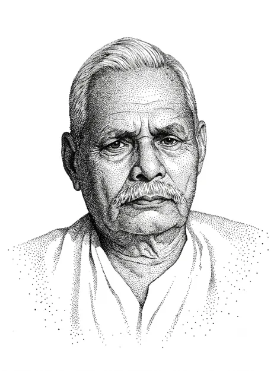
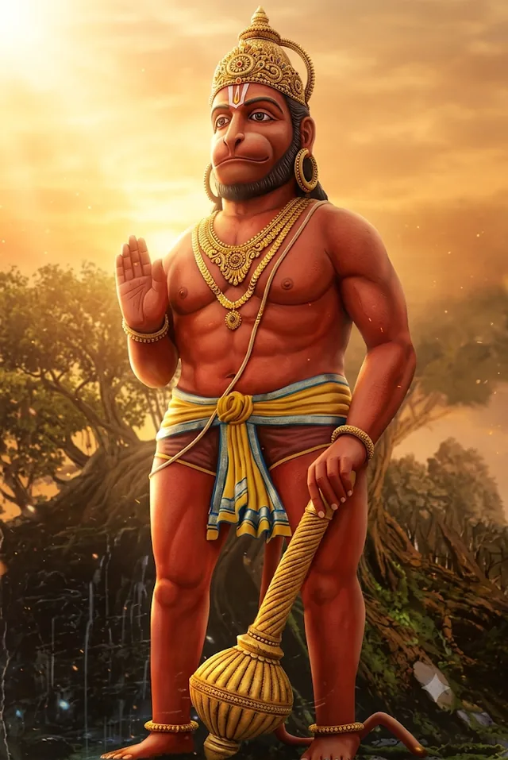
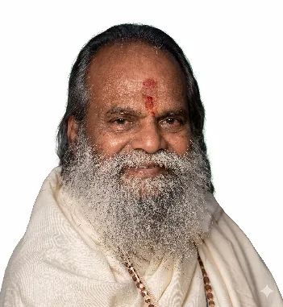

ब्रज का एक दिन

सुदर्शन सिंह ‘चक्र’
संरक्षक — हनुमद्धाम, श्री राम अध्यात्म प्रन्यास, शुकतीर्थ
अपनी बात
वर्षों पूर्व जब ‘प्रभु आवत’ पूरा हुआ था, ‘ब्रज का एक दिन’ लिखने संकल्प उठा। उस समय मन में आया इसे पद्य में लिखूँ। प्रायः लेखक प्रारम्भ में कवि होता है। तुकबन्दी से लेखनी श्रीगणेश करती है। मैं इसका अपवाद नहीं हूँ। मैंने प्रारम्भ में जो पद लिखे थे उनमें बहुत से पत्र-पत्रिकाओं में निकले। उनका एक संग्रह भी किया ‘शतदल’ और एक खण्ड-काव्य भी लिखा ‘अंगद’ जो पीछे ‘मानसमणि’ (रामवन सतना) में क्रमशः छपा।
इस बार मैंने एक भूल की। मैंने मंगलाचरण में देवी वीणापाणि से प्रार्थना की थी—
माँ! शिशु की वाणी से गा माँ—अमृत धवल नवनीत प्रिय के—मंगल गुण कल्याणी! यह भूल थी मेरी! मैंने लेखनी माँगी है अपने कन्हाई से। अतः उसको दूसरा कोई अपना माध्यम बना ले, यह मेरे नटखट नन्दलाल को स्वीकार नहीं। मैंने प्रारम्भ किया, किन्तु कुछ पंक्तियों तक ही वह प्रयास परिसीमित हो गया। वे पंक्तियाँ हैं—
अनुरागपूर प्राची दिक्से उमड़ा डूबे धरणी-अम्बर। सिन्दूरारुण गणपति सुकर्ण हिलते दीखे-दो क्षण निर्झर। द्विजवृन्द सजाये अर्ध्याञ्जलि, गम्भीर गूँजता सामगान। ले चलीं धूम्र की कुण्डलियाँ—धरती का दिव को दिव्यदान॥ गोष्ठों में गूँजा हम्बा-रव, भक्तों से झंकृति ध्वनि आयी। उत्सुकता-वन-विहंगावलियाँ—चञ्चल वितान नभ मण्डरायीं॥ ऊपर यह ‘हूप-हूप’ करता—जुड़ आया है उत्साह सदल। नीचे दौड़े सुन्दर बालक, आगे कूदे बछड़े चञ्चल॥ रवि-बिम्ब क्षितिज पर उठा सही—रह गयीं रश्मियाँ सकुच-मन्द। ब्रजराज-पौरि पर घूम-झूम—बढ़ आया क्योंकि कृष्णचन्द्र॥ यह तड़िदम्बर, घनश्याम अंग, कुण्डल रवि, आनन्द इन्दु ओज। छज्जों पर फूली कुमुदिनियाँ, पथ पर प्रफुल्ल शिशु-नवसरोज॥
बस, यह काव्य यहीं रह गया। अब सोचता हूँ कि इसका रह जाना अच्छा हुआ। आरम्भ ही असंगत था। मैं अरुणोदय से आरम्भ करने चला था, जबकि वैदिक सनातनधर्मी का दिवस ब्रह्ममुहूर्त में निद्रात्याग से प्रारम्भ होता है। इस प्रकार ‘ब्रज का एक दिन’ के लिखने का वह संकल्प स्थगित पड़ा रहा। अब उसके आकार ग्रहण का अवसर आया है।
‘ब्रज का एक दिन’ कहते ही प्रश्न उठता है, कौन सा दिन? मैंने सोचा कि ऐसा दिन लेना है, जिस दिन कोई विशेष घटना नहीं हुई। ‘ब्रज का एक दिन’ अर्थात साधारण दिन, क्योंकि जीवन में साधारण दिन ही तो अधिक होते हैं। कोई विशेष घटना नहीं। इसका यह अर्थ भी है कि पर्व, उत्सव, वर्षगाँठ आदि का भी दिन नहीं। इतने से भी काम नहीं चलता। दो बातें फिर भी रह जाती हैं—1. नन्दनन्दन की किस अवस्था दिन? और 2. किस ऋतु का दिन?
शैशव से लेकर लगभग साढ़े ग्यारह वर्ष तक की वय तक कन्हाई ब्रज में रहा। इनमें से मैंने उसकी दस वर्ष की वय का दिन चुना है। ऐसी वय का दिन जब वह उन्मुक्त क्रीड़ा के योग्य हो चुका। जब दिन भर वन में गोप बालकों के साथ गायें चराने लगा।
कन्हाई रात्रि में भी कुछ धूमधाम करता है, क्योंकि श्रीमदभागवत का महारास इस वय से पूर्व का वर्णन है, किन्तु निकुञ्ज क्रीड़ा केवल रसिकों के श्रवण-चिन्तन की निधि है। कभी कोई भनक कान में पड़ना एक बात है, किन्तु कन्हाई को मैं छोटा भाई जानता मानता हूँ। वह रात्रि में नन्दभवन छोड़कर भी कहीं जाता है तो वह मेरे जानने-सोचने की बात नहीं है। अतः ‘ब्रज का एक दिन’ तो दिन की ही बात अधिक कहेगा।
दिन किस ऋतु का? मैं कोई विशेष निर्णय लेकर नहीं चल रहा हूँ। केवल इतनी बात कि वर्षा नहीं, तीव्र शीत या उष्णता का भी दिन नहीं। सामान्य सुखद ऋतु का दिन। ऐसा दिन कि उसमें सामान्य क्रीड़ा स्वच्छन्द चल सके। आप इसे शरद का दिन कहें या बसन्त का, मुझे आपत्ति नहीं।
वर्षा ऋतु हो तो श्याम को विशेष श्रृंगार रखना पड़ता है। बार-बार वर्षा में भीगने स्नान करने की धुन चढ़ती है। वन में मयूर पिच्छ चुनने की ही नहीं, आम-जामुन एकत्र करने, खाने खिलाने की भी क्रीड़ा सूझती है। अनेक बार भागकर गिरि गुफा की शरण लेनी पड़ती है। सायंकाल लौटते समय भी गोरजसनी अलकें नहीं होतीं।
शीत ऋतु में काली कमरिया सब श्रृंगार ढक लेती है और वृन्दावन में तो ग्रीष्म भी बसंत के समान ही बना रहता था। अतः ‘ब्रज का एक दिन’ सामान्य दिन है तो उसे शीत-उष्ण में भी समप्राय, वर्षा वर्जित सामान्य दिन ही होना चाहिये।
अब यह मत पूछिये कि यह वर्णन किस ग्रन्थ से लिया गया है या किस ग्रन्थ के आधार पर है। मुझसे अनेक लोगों ने ‘श्रीकृष्ण चरित’ या ‘श्रीरामचरित’ तथा ‘आञ्जनेय की आत्मकथा’ शत्रुघ्नकुमार की आत्मकथा, ‘राक्षसराज’ ही नहीं ‘प्रभु आवत’ के सम्बन्ध में भी यह पूछा। सम्भव है ‘वे मिलेंगे’ को लेकर भी कोई पूछने लगे। मैं ऐसी जिज्ञासा का समाधान तब कर सकूँ, जब विद्वान होऊँ और यह सब लेखन मेरे अध्ययन-चिन्तन से निकला हो। किया सब मैया यशोदा के लाल ने और मुझे सुयश दे दिया है। मैं इसमें आधार ग्रन्थ कहाँ से कैसे बतला दूँ।
‘ब्रज का एक दिन’ सामान्य दिन की ब्रज की, ब्रज के लोगों की स्थिति तथा श्री ब्रज राजकुमार की दैनिक चर्या का चिन्तन है। यह चिन्तन आपके चिन्तन के काम आवे तो आपको निष्कल्मष करके आनन्द देगा। आपको आपके अन्तर को उज्ज्वल करेगा। इसे शोध की वस्तु बनाने की बात सोचने पर सम्भव है आपके हाथ कुछ न लगे। आप इसे कल्पना ही कह सकें।
कल्पना भावना का ही दूसरा नाम नहीं है? लेकिन यह मेरी कल्पना भी नहीं है। मैं तो अपने कन्हाई के भरोसे लेखनी लेकर बैठा हूँ। विश्वास करता हूँ कि इस घनश्याम ने जैसे सदा मेरा पक्षपात किया है, अब भी करेगा और अपना चर्या को व्यक्त करेगा। कन्हाई साथ देगा ही।
श्याम की यह चर्या अन्तर में आकर मुझे असीम आनन्द देगी, इतना ही मेरा प्रयोजन है। आप अब स्वयं देखें कि इसके माध्यम से आपके चित्त में भी कुछ नन्दनन्दन की स्मृति जागरण होता है या नहीं। होता है तो यही जीवन की चरम सफलता है।
सुदर्शन सिंह
श्रीकृष्ण जन्मस्थान मथुरा।
मंगलाचरण
कनूँ मेरे!
बीत गये बहुत दिन वियोग में तेरे!
देह और दैहिकी का जञ्जाल,
मोहमयी माया का महा जाल,
काट दे नन्दलाल!
बहुत की तूने मेरी मनुहार,
बहुत-बहुत दिया अकल्पनीय प्यार,
देना था मुझे, पर तूने दिया।
लेने के अयोग्य भी मैंने लिया।
‘मैं’ और ‘मेरा’ का करागार—
तोड़ दे, नन्दकुमार!
और मत प्रतीक्षा करा,
थक गया—
बुला, अब कर मैं त्वरा—
आ-पथ देखता तेरे।
कनूँ मेरे!
ब्रज का एक दिन
मैया जागी
ब्रज में सबसे पहले-सेवक सेविकाओं से भी पहले ब्रह्ममुहूर्त से भी पहले मैया जागती है। मैया जागती है यह भी कहना कठिन है। कहना चाहिये कि यह शैया त्यागकर उठ जाती है। यह कभी सोती भी है यह तो सेविकाओं को भी पता नहीं है। सबके भोजन कर लेने पर, सबकी व्यवस्था देख लेने पर भी इसे कुछ-न-कुछ काम स्म्रण आता ही रहता है। अतः कोई नहीं जानता-माँ रोहिणी तक नहीं जानती कि यह कब शैया पर लेटती है। कोई भी उठे, उसे मैया उठकर कुछ करती ही मिलती है।
मैया भी विचित्र है। यह लेटती है तब भूल जाती है कि इसका नीलमणि अब बड़ा हो गया है। वह अब अपने बाबा के समीप गोष्ठ में पृथक शैया पर सोता है। यह तो नींद में भी ऐसे टटोलती, सम्हालती रहती है, जैसे इसका नन्हा-मुन्ना लाल इसकी गोद में ही सो रहा है।
कन्हाई भी तो ऐसा ही है। सखा चिढ़ाते हैं, गोपियाँ चिढ़ाती हैं, किन्तु यह अब भी चाहे जब दौड़ा आता है और मैया की गोद में बैठकर इसके अञ्चल में मुख छिपाकर इसका स्तनपान करने लगता है। अभी भी कहाँ इसने मैया का दूध पीना छोड़ा है।
मैया रात में कब हड़बड़ाकर उठ बैठी, कहाँ जानती है। सदा हड़बड़ी में ही उठती है। कभी चौंककर जागती है जब टटोलने पर अपनी गोद में अपने नीलमणि को नहीं पाती। जागकर हँसती है। जब स्मरण आता है कि अब नीलमणि बाबा के समीप सोने लगा है।
‘अब यह इतना बड़ा हो गया?’ मैया को जैसे विश्वास ही नहीं होता। लेकिन जब दाऊ बाबा के समीप सोने लगा श्याम मान नहीं सकता था। भाई के बिना तो इसे चैन मिलता नहीं है।
मैया को अवकाश नहीं है। अवकाश तो दिन में भी नहीं रहता जब कन्हाई बन में होता है। उस समय भी मैया अपने पुत्र के लिए कुछ बनाकर छाक में भेजने की तैयारी में व्यस्त रहती है या मोहन के वस्त्रादि सजाने, धरने में लगी रहती है। सायंकाल लौटकर कन्हाई सखाओं के साथ क्या खायेगा क्या माँगेगा, किन खिलौने को चाहेगा, यह सब भी तो मैया को ही देखना रहता है।
प्रातः और सायं का समय तो बहुत ही अस्त-व्यस्त रखता है मैया को। अभी इसका नीलमणि उठेगा। कुछ ठिकाना नहीं कि उठकर बाबा के साथ यमुना-स्नान करने जायेगा अथवा दौड़ता भवन में आकर मैया के कण्ठ में भुजाएँ डालकर लिपटकर कहेगा—‘मैया री! मुझे बहुत भूख लगी है। झटपट माखन खिला दे तो बाबा के पास दौड़ जाऊँ, वे मेरी प्रतीक्षा करते बैठे हैं।’
नीलमणि को दूसरे के द्वारा दधि-मन्थन करके निकाला माखन मीठा नहीं लगता। अतः उसके उठने से पहले मैया को दधि मथकर माखन निकाल लेना चाहिये।
मैया उठकर झटपट हाथ मुख धोती है। दीपक जलाती है। बिना स्नान किये कोई ग्वालिनी गोरस का स्पर्श कैसे करेगी। वस्त्र बदलकर हल्का श्रृंगार-केशों में केवल एक पुष्पमाल्य लगाकर भगवान नारायण को प्रणाम करके मैया दधि-मन्थन करने लगती है।
मैया दधि-मन्थन प्रारम्भ कर देती है तब कहीं सेविकाएँ जागती हैं। ब्रज में जागरण प्रारम्भ होता है। माँ रोहिणी प्रायः उलाहना देती हैं ‘ब्रजेश्वरी! तुम इतनी शीघ्र क्यों उठ जाती हो। तुम्हें कभी निद्रा आती भी है या नहीं?’
मैया संकुचित होती है कि उसकी खटपट से दूसरों की निद्रा में बाधा पड़ती है, किन्तु करे क्या। पता नहीं क्यों महर को सबेरे उठने की पड़ी रहती है। बालक उनके समीप सोते हैं। उनके उठते ही न भी उठें तो जगा दिये जावेंगे। महर थोड़ी देर से उठें तो कुछ बिगड़ता है? नीलमणि का क्या ठिकाना है। उठते ही यदि दौड़ता आ जाये? उसे सद्य नवनीत न मिले आते ही तो रूठ जावेगा। सवेरे सवेरे रूठे तो पीछे कलेऊ भी ठीक नहीं करेगा।
महर थोड़ी देर न भी उठें तो गायें ‘हुम्मा-हुम्मा’ करने लगेंगी। भद्र या दाऊ उठ जायेंगे। मैया के नीलमणि को जगा देने वाले कोई एक ही तो नहीं हैं। लेकिन मैया का कोई किसी प्रकार का किसी पर आक्रोश नहीं है। रोष करना तो इसे भाता ही नहीं है। यह तो यह सब भी सोचते-सोचते मुसकराती रहती हैं। सोचती रहती हैं कि सबको आज क्या-क्या देगी कलेऊ में। किसे क्या अधिक रुचेगा।
‘नीलमणि आया नहीं आज भवन में’ मैया की दृष्टि द्वार की ओर ही लगी है, किन्तु दधि मन्थन करते हाथ शीघ्रता में चल रहे हैं। बीच-बीच में दधिभाण्ड में झाँक लेती है कि इतना समय हो गया माखन ऊपर नहीं आया? मैया को शीघ्रता है। माता रोहिणी, कोई सेविका, ब्रज के किसी घर की कोई गोपी किसी क्षण आकर मन्थनरज्जु मैया के करों से ले ले सकती है—‘ब्रजेश्वरि! आज मुझे अपने हाथों नवनीत निकालकर लाल को लेने दो।’ मैया किसी को मना कर सकेगी लेकिन तब इसका नीलमणि उत्साहपूर्वक वह माखन नहीं खा सकेगा। तनिक सा मुख में लेकर उठ खड़ा होगा। वह सवेरे-सवेरे ही अतृप्त रह जायेगा। अतः किसी के भी आने, मन्थनरज्जु पकड़ने से पूर्व मैया को माखन निकाल लेना है।
मैया जाग तो कभी गयी थी ब्रह्ममुहूर्त के प्रारम्भ होते ही तो यह दधि-मन्थन भाण्ड में दधि डालकर मथानी डाल चुकी और मथानी में रज्जु लपेटकर अब खड़ी होकर दधि-मन्थन करते हुए अपने भुवन-सुन्दर सुत की लीलाओं को अपने सुमनोहर स्वरों में धीरे-धीरे गुनगुनाती जा रही है।
बाबा जागे
अल्प-निद्रा हैं बाबा। तनिक खटका हुआ और इनको उठकर खड़े होते देर नहीं लगती। ब्रह्ममुहूर्त के प्रारम्भिक क्षणों में ही उठ जाने का तो इनका स्वभाव है। अनेक बार उससे भी पूर्व उठ जाते हैं। लेकिन जबसे राम-श्याम इनके समीप सोने लगे हैं, उठकर भी उठ नहीं पाते। थोड़ी देर पड़े रहते हैं। बालक छोटे हैं, सुकुमार हैं। इन्हें बहुत शीघ्र जगाया नहीं जा सकता।
बाबा नहीं चाहते कि श्यामसुन्दर इतनी शीघ्र उठे और स्नान करे, किन्तु बाबा के चाहने से तो यह नहीं हो सकता। बाबा तो चाहते थे कि श्याम अभी भवन के भीतर मैया के समीप ही शयन करे, किन्तु यह मानता है। जब दाऊ द्वार पर सोने आया, इसका छोटा भाई कैसे भवन में सो सकता था। कठिनाई से कुछ दिन बाबा ने दोनों को अपनी शैया पर सुलाया। फिर तो दोनों पृथक-पृथक शयन का हठ करने लगे। भद्र पृथक शैया पर सोता है तो दाऊ बाबा की शैया पर क्यों सोये? और तब कृष्ण चन्द्र मानने वाला था?
अब सायंकाल आंते ही कन्हाई बाबा से हठ करता है कि इसे सबसे पहले बाबा जगा दें। बाबा हाँ-हूँ करके बहला देते हैं, किन्तु जानते हैं कि वे पहले स्नान कर आवें तो श्याम रूठ जायेगा। बालकों को एकाकी यमुना-स्नान करने जाने भी नहीं दिया जा सकता।
कठिनाई एक ही नहीं है। पता नहीं क्यों भद्र को शीघ्र जागने का स्वभाव मिला है। यह सायंकाल वन से लौटते ही ऊँघने लगता है। इसे शीघ्र कुछ खिला देना पड़ता है। रात्रि का दूध तो मैया इसे नींद में ही किसी प्रकार पिलाती है। लेकिन सबेरे अनेक बार बाबा से भी पहले उठ जायेगा। उन्हें उठावेगा और पूछेंगा—‘बाबा! सबेरा नहीं हुआ?’ भद्र जाग जाये तो दाऊ कन्हाई को जगाये बिना मानता नहीं। दाऊ तो इसके ‘दादा’ कहते ही उठकर बैठ जाता है। अवश्य श्याम इतनी सरलता से नहीं उठता।
बालक विलम्ब से उठें तो गो-दोहन में विलम्ब होगा। इनके बिना गायें दूध ही नहीं देना चाहतीं और फिर भवन के भीतर से महर की माँग आवेगी—‘बालकों को शीघ्र कलेऊ करने भेजिये। दूसरे सखाओं के आने पर नीलमणि को वन में जाने की हड़बड़ी पड़ती है। तब यह कुछ मुख में डालना ही नहीं चाहता।’ गायें ब्रज की देवता हैं। इनकी सेवा केवल सेवकों पर छोड़ी नहीं जा सकती। गायों को उठते ही चारा-दाना चाहिये। बाबा चाहते हैं कि वे उठकर गायों को चारा डाल लें तब बालक उठें। स्नान करके जब लौटे तब गोदोहन के समय तक गायें तृप्त हो चुकी हों।
बालक अभी सो रहे हैं, किन्तु थोड़ी भी खटपट होते ही ये जाग सकते हैं बाबा चुपचाप उठकर गोष्ठ में पहुँचने के अभ्यस्त हैं। गायों के समीप प्रदीप रात्रिभर जलता है। उठते ही पहले इन दीपकों को सम्हालना पड़ता है। बाबा गोष्ठ में आकर भी चाहते हैं कि उनकी उपस्थिति गायों तक से छिपी रहे, किन्तु यह भी कहीं सम्भव है? बाबा के आते ही कामदा, कृष्णा, कपिला आदि गायें उठ खड़ी होंगे। धर्म जैसे वृषभ खड़े हो जायेंगे। केवल बछड़े-बछड़ियाँ गोष्ठ के एक भाग में अभी बैठे रहेंगे। उनको अभी जगाना अनावश्यक है। बाबा उस भाग में नहीं जायेंगे।
गायों की, वृषभों की पद-वन्दना करके बाबा उन्हें चारा डालने लगेंगे और इतने में सेवक आ जायेंगे। इस समय गायों वृषभों को चारा यहाँ तो डाला नहीं जा सकता। बाबा गोष्ठ के रिक्त स्वच्छ भाग में उनके लिए चारा डालते हैं। सेवक थोड़ी प्रतीक्षा करेंगे। पशु उठते ही गोबर-गोमूत्र त्याग करते हैं। इससे वे निवृत्त हो लें तो उन्हें चारे के समीप ले जाने का काम सेवक करेंगे।
बाबा का प्रातः स्मरण तो उठते ही प्रारम्भ हो जाता है। गायों-वृषभों की वन्दना करके उनके चारा की व्यवस्था देखकर बालकों के पास लौटना है।
‘बाबा!’ भद्र अवश्य लौटते ही पद-वन्दना करेगा। यह भी कभी-कभी हो पाता है। प्रायः यह बाबा के साथ उठता है और उनकी पद-वन्दना करके उनके साथ ही गोष्ठ में जाता है।
‘लाल! अभी श्याम को सोने दे।’ बाबा धीरे से भद्र को पुचकारते हैं। भद्र बालकों से कुछ भिन्न हैं। इसे धीरे-धीरे कोई काम करना रुचता नहीं है। जो कुछ करना हो, झटपट करो। न स्वयं धीरे करेगा, न दूसरों को धीरे करने देगा। प्रातः उठेगा भी तो पैरों से चादर फेंककर ऐसे उठेगा जैसे वर्षा आने पर लोग हड़बड़ाकर उठते हैं। इसे बाबा न सम्हाल लें तो यह दाऊ और श्याम की भी चद्दर झटके से ही फेंकेगा।
बाबा चाहते हैं कि बालकों के उठने से पूर्व वे बहुत कुछ कर लें। सबके वस्त्र सायंकाल ही मैया सम्हालकर बाबा के समीप धरबा देती है। दन्तधावन रखी है। सेवकों ने कृमिहीन शुष्कतृण सायंकाल ही धर दिये हैं सम्हाल कर।
‘कनूँ को जगाऊँ?’ गोष्ठ से बाबा के लौटते ही भद्र पूछेगा, यदि बाबा के साथ गोष्ठ से लौटा है। यदि बाबा पहले उठकर चले गये हैं तो यह भी उठकर चल देगा और गोष्ठ में ही उनकी पद-वन्दना करेगा। कदाचित ही होता है कि बाबा के गोष्ठ से लौटने पर भद्र शैया त्याग करें।
‘तुम अपने तृण सम्हाल लो।’ बाबा नहीं चाहते कि श्याम को झटके से जगाया जाये। ये भद्र को कुछ-न-कुछ काम बता देते हैं। अपने लाल को ये स्वयं जगावेंगे।
दाऊ जागा-श्याम जागा
अद्भुत है दाऊ। यह कदाचित ही कभी ऊँघता मिलेगा। जब नींद लेनी होगी, पड़ते ही सो जायेगा। लेटा और सोया। इसकी नींद में कोई प्रकाश, शब्द या हलचल बाधा नहीं दिया करती। यह तो उत्सवों में तुमुल वाद्य-ध्वनि और लोगों के गायन के मध्य भी सो जाता है और जब जगाओ, ऐसे उठ बैठेगा जैसे सोया ही नहीं था। जैसे पुकारने की प्रतीक्षा करता ही नेत्र बन्द किये पड़ा था।
दाऊ शैशव से निद्राजयी है। मैया और माँ दोनों कहती हैं कि यह तो बहुत नन्हा था तब भी ऊँ घना नहीं जानता था। किसी उत्सव में बैठना हो तो रातभर बैठा रहेगा। बड़ों को ऋषि मुनियों को भले नींद का झोंका आ जाये, दाऊ को नहीं आवेगा। लेकिन जब सो जाने के लिए लेटेगा, क्षण भर में सो जायेगा। यह वन में किसी भी वृक्ष के मूल में भूमि पर ही सो जाता है। निद्रा जैसे इसकी मुठ्ठी में रहती है। जब चाहा बुला लिया, जब चाहा भगा दिया।
‘दादा!’ प्रायः भद्र ही दाऊ को जगाता है। आकर दाऊ के समीप खड़ा हो जायेगा और धीरे से ऐसे पुकारेगा जैसे दाऊ जागता बैठा हो।
‘अच्छा तू उठ गया।’ दाऊ मुस्कराता उठ बैठेगा। ऐसा लगेगा कि वह इस प्रकार की प्रतीक्षा करता ही लेटा हुआ था। भद्र प्रणाम करने झुकेगा चरणों की ओर तो दाऊ उसे हृदय से लगाता शैया से उठ खड़ा होगा।
शैशव से निद्रा से जगे दाऊ में कभी भी आलस्य लक्षित नहीं हुआ। यह मुस्कराता ही उठता है और उठते ही देखता है कि श्याम कहाँ है, किस अवस्था में है। दाऊ छोटे भाई को जगावेगानहीं, केवल उसकी शैया के समीप जा खड़ा होगा और तनिक झुक कर चुपचाप उसके मुख को देखता रहेगा।
श्यामसुन्दर! नीलमणि! बाबा कन्हाई को जगाना चाहकर भी जगा नहीं पाते हैं। ये तो धीरे-धीरे पुकारते भी संकुचित होते हैं। इसके मुखपर घिर आयी अलकें अँगुली से हटाते हैं। कन्हाई के शरीर पर ऐसे कर फिराते-सहलाते हैं कि नींद टूटने वाली भी हो तो गाढ़ी हो जाये। ऐसे सहलाने, थपकाने से बालक जागते हैं या जागने वाले भी सो जाते हैं?
‘कनूँ!’ बाबा चाहे या न चाहे उनके लाल की नींद भद्र के बिना नहीं टूटती। भद्र आकर एक झटके से पीतपट खींचकर दूर फेंक देगा और पुकारेगा।
‘अरे नहीं’ बाबा का हृदय इसे सह नहीं पाता। ये भद्र को रोकना चाहते हैं—‘तनिक सो लेने दो। अभी उठ जायेगा।’ बाबा भद्र को भी तो रोक नहीं पाते। मन कहता है बालक को अब उठ जाना चाहिये और हाथ हिला नहीं पाते हैं तब भद्र को रोक पाना भी कैसे सम्भव है।
कन्हाई तनिक कुनमुनायेगा, करों से कुछ टटोल लेना चाहेगा, जैसे मैया को या बाबा को समीप पा लेना चाहता हो और फिर सो जायेगा।
अधखुली लाल-लाल हथेलियाँ, तनिक मुड़े पद, अलकों से घिरा मुख-भद्र के भी वश की बात नहीं है इस शोभा से दृष्टि हटा लेना। वह भी कुछ क्षण सोते कन्हाई को चुपचाप देख ही सकता है।
‘नीलमणि! श्यामसुन्दर!’ बाबा धीरे धीरे सहलाते रहेंगे। श्याम फिर कर से टटोलेगा इसे कोई समीप क्यों नहीं मिल रहा? इसे कहाँ स्मरण है कि अब यह पृथक शैया पर सोता है। एक दो क्षण सोकर फिर टटोलेगा-फिर टटोलेगा और एक दो बार अटोलकर नेत्र खोल लेगा।
‘उठ’ भद्र ही कहेगा। कन्हाई सचमुच उठकर बाबा को प्रणाम करता है। दाऊ और भद्र इसे अंकमाल देंगे।
‘तू मुझे प्रणाम क्यों नहीं करता?’ भद्र कभी सवेरे ही चिढ़ाने लगता है—‘मैं तेरे तृण नहीं दूँगा।’ (प्राचीन भारत में सूखे तृण भूमि पर बिछाकर उस पर शौच जाने की प्रथा थी भूमि गन्दी नहीं होती थी। ग्राम सूकर मल स्वच्छ कर देते तब श्वपचादि आकर उन तृणों को समेटकर जला देते थे।)
कन्हाई का ठिकाना नहीं है। अँगूठा भी दिखा सकता है और सचमुच पैर पर सिर धरने झुक भी सकता है। तब भद्र को इसे हृदय से लगाना पड़ेगा। कन्हाई अँगूठा दिखाने लगे तो बाबा स्नेह से पुचकार लेते हैं—‘ऐसा नहीं करते। भद्र तुमसे बड़ा है। बड़ों को प्रणाम करते हैं।’
“बाबा! तुम प्रतिदिन भूल जाते हो। यह मुझसे छोटा है। श्यामसुन्दर अपनी बात कहेगा—“अभी नापकर देख लो।””
‘अच्छा, अच्छा!’ बाबा को प्रातः बहुत काम हैं। उन्हें अभी बालकों से उलझने का अवकाश नहीं है-तुम दोनों बड़े हो। छोटा तो मैं हूँ। अब उठो यमुनातट चलें।
बालकों के वस्त्र, दन्तधावन बाबा ले चलेंगे। बालक केवल अपने लिए तृण ले चलेंगे। कुछ सेवक, कुछ दूसरे गोप अवश्य साथ हो लेंगे। यह निश्चित ही है कि यमुनातट पहुँचने तक बहुत से गोप आ जायेंगे और उनके बालकों को भी साथ ही आना है।
कन्हाई अकेला ही धूम करने को बहुत है। फिर इसके सखा इसे मिल जायें तब यह कहीं शान्त रह सकता है। अपने-अपने तृण लेकर बालक पृथक-पृथक एकान्त में चले जाते हैं जलपात्र लेकर, किन्तु दाऊ, कन्हाई ऐसे लौटते हैं जैसे तृण फेंककर हाथ गीले करके आ गये हों। लौटता भद्र भी शीघ्र है, किन्तु ये दोनों तो लगता है कि कहीं बैठे भी नहीं थे।
दन्त-धावन के समय भी श्याम कूदता-फुदकता फिरता है तो यमुना-स्नान कैसे शान्त कर लेगा? बाबा और दूसरे गोप केवल यह कर सकते हैं कि धारा में आगे खड़े रहें और बालकों को आगे न जाने दें। किन्तु ये सब पैर पटकेंगे, जल में तैरना चाहेंगे और परस्पर जल के छींटे उछालेंगे। अनेक बार तो सब दाऊ को ही नहीं, बाबा तक को घेरकर उनपर जल उलीचने लगते हैं अथवा उनका अंग धोना चाहते हैं।
बाबा को, गोपों को शीघ्रता रहती है। बहुत कहने-मानने पर बालक जल से निकलकर अंग पोंछते वस्त्र बदलते हैं।
गैया जागीं-बछड़े जागे
अनेक काम एक साथ होते हैं किन्तु उन्हें एक साथ न कहा जा सकता और न लिखा जा सकता। ब्रज में जागरण भी लगभग एक साथ ही होता है, किन्तु उसका वर्णन पृथक-पृथक ही करना है और इसलिए करना है कि प्रत्येक स्थान, प्रत्येक वर्ग ही नहीं, प्रत्येक के जागरण की कुछ विशेषता है। प्रत्येक का वर्णन पृथक पृथक सम्भव नहीं है, अतः विशिष्ट वर्ग की ही बात करें।
बाबा उठते हैं तो भद्र उनके साथ ही उठ जाता है, यदि पहले न उठ गया हो। उनके साथ ही गोष्ठ में चला जायेगा। इन दोनों के पहुँचते ही दूसरे कोई वृषभ न भी उठ खड़े हों तो भी ब्रजपति का महावृषभ धर्म अवश्य उठ खड़ा होगा। ऐसे ही गायों में कामदा, कृष्णा, कपिला जैसे कुछ खड़ी हो जायेंगी।
सुप्त, निद्रित, तन्द्रामग्न या व्यग्रचित, आहार करते, स्नान करते, चलते और दन्त धावन तैलाभ्यंग करते पूज्यजनों को प्रणाम करना वर्जित है। केवल तब जबकि कोई सम्मान्य अस्वस्थ हो, उसके लेटे रहते उसे प्रणाम किया जा सकता है, यदि वह निद्रित न हो या बहुत व्यथित अथवा तन्द्रित न हो। लेटे रहने की स्थिति में शव को प्रणाम किया जाता है। कोई आदरणीय वर्जित स्थितियों में मिले तो उसका पाद-स्पर्श किये बिना दूर से भूमि में मस्तक रखकर (हाथ जोड़कर, सिर झुकाकर) चुपचाप प्रणाम कर लिया जाता है। उस समय अपने गोत्र सहित पिता का और अपना नाम लेकर प्रणाम करना आवश्यक नहीं होता।
गायों या वृषभों के सम्बन्ध में कुछ अपवाद है। इनका चरणस्पर्श अनिवार्य नहीं है। ये चलते चरते ही अधिक मिलेंगे, किन्तु जब ये निद्रित हों या गायें दुही जा रही हों, बछड़े को दूध पिला रही हों तो इन्हें समीप जाकर प्रणाम करना वर्जित है।
बाबा और भद्र भी बहुत धीरे से गोष्ठ में जाकर केवल उन पशुओं को जो उठकर खड़े हो गये हैं, प्रणाम करके गोष्ठ के उस भाग में चले जाते हैं, जहाँ पशुओं को चारा देना है। चारा डालने और एक बार सेवकों के द्वारा होती व्यवस्था देखने के पश्चात दोनों लौटेंगे।
पशुओं को चारा डालने की आहट लगे और वे उठ न पड़ें, यह नहीं हो सकता। यह भी नहीं हो सकता कि राम-श्याम उठ खड़े हों और गायों-वृषभों में से कोई बैठा रहे। पशु एक साथ नहीं उठा करते। वे कोई सैनिक नहीं हैं कि पंक्तिबद्ध चलने, खड़े होने और उठने बैठने के अभ्यासी हों, किन्तु प्रायः एक दो के उठते ही वे उठने लगते हैं। कुछ क्षणों में ही सब उठ जाते हैं।
‘लाल! अभी नहीं। तू गोष्ठ में जायेगा तो बछड़े-बछड़ियाँ भी उठ जायेंगे।’ बाबा कन्हाई न रोकें तो यह उठते ही गायों के समीप दौड़ जाये। लेकिन नवजात बछड़े-बछड़ियाँ तो अभी सब सटकर बैठे सो रहे हैं। यह जायेगा तो वे सब उठकर इसे घेर लेंगे। फिर उनको सम्हालना पड़ेगा कि इसके साथ गोष्ठ से निकल न आवें।
वृषभ-गायें, बछड़े-बछड़ियाँ उठकर तनिक पैर फैलाती हैं। एक प्रकार की अंगड़ाई लेती हैं। तनिक पूँछ-पीठ उठाकर मूत्र-विसर्जन करती हैं। गोबर करती हैं।
सेवक इतने समय तक गोष्ठ के दूसरे रिक्त भाग में चारा दाना डाल चुके होते हैं। अब वे मध्य का द्वार खोलकर पशुओं को खोलने लगते हैं। थोड़ी दौड़ा-दौड़, थोड़ी हलचल, किन्तु शीघ्र सब अपने-अपने निश्चित स्थानों पर पहुँचकर आहार लेने में लग जाते हैं। सेवकों को अब गोदोहन की व्यवस्था करनी है।
बाबा स्नान करके लौटते समय तनिक दूर ही ठिठकते हैं। राम-श्याम, भद्र को रोकते हैं—‘मुझे देख लेने दो।’ बाबा अकेले भी आगे बढ़ आवें तो पशु इतने अज्ञ नहीं हैं कि समझ न जायें कि राम-श्याम आ गये हैं। सेवकों में से ही कोई आगे जाकर समाचार देता है—‘पशु तृप्त हो चुके।’
बात यह है कि कन्हाई दीख जाये तो कोई पशु अब चारे को मुख नहीं लगावेगा। सब हुँकार करने लगेंगे और श्याम के ही समीप पहुँचना चाहेंगे। गायों के स्तनों से दूध की धारायें गिरने लगेंगी। अतः पशुओं के तृप्त हो जाने पर ही श्याम को गोष्ठ के समीप आना चाहिये।
नवजात बछड़े-बछड़ियों को कोई उठने की शीघ्रता नहीं रहती। भरपेट दूध सायंकाल पिया है। अभी उदर इतना रिक्त नहीं कि क्षुधा के कारण उठ जायें और ‘हुम्मा’ की पुकार लगावें। अभी कहीं नन्द-नन्दन दिखता नहीं है यो ये क्यों उठें सबको सटकर सोने का स्वभाव है। कोई अपने पेट की ओर सिर किये पड़ा है और कोई दूसरे के पेट में सिर दुबकाये। कोई-कोई तनिक कान-पूँछ हिला लेते हैं और एकाद बार पलकें भी खोलकर सिर तनिक उठाते हैं, पर फिर सो जाते हैं।
इन सबके जागरण का अपना ढंग है। कन्हाई गोष्ठ के समीप आवेगा तब गायें, वृषभ हुंकार करने लगेंगे। उस समय ये एक लगभग एक साथ हड़बड़ा कर उठेंगे और उस हड़बड़ी में कोई किसी ओर, कोई किसी ओर दौड़ पड़ेगा।
बछड़े-बछड़ियाँ अनेक बार दो-चार पद दौड़कर तब अंगड़ाई लेते हैं। यों तो कूदना-उछलना आरम्भ करते हैं, तब कोई कहीं और कोई कहीं अचानक रुककर पीठ ऊँची करके, तनिक शरीर सिकोड़कर गोबर करते हैं अथवा पूँठ उठाकर सूत्र त्याग करते हैं। यह किया भी इन्हें जैसे अनावश्यक रोकती लगती है। इसे झटपट पूरी करके उछलेंगे, कूदेंगे और ढूँढेंगे कि इनका वह पीतपटधारी पालक है किधर। राम-श्याम के गोष्ठ में प्रवेश करते ही सम्पूर्ण गोष्ठ जाग पड़ता है। सब पशु पूर्ण सचेत मिलते हैं।
गोप-गृहों में
अत्यन्त आवश्यक है प्रातःकाल शीघ्र उठना। यह केवल विधि ही नहीं है, ब्रज की यह अनिवार्य आवश्यकता है। कृषक और गोपालक का काम प्रातः देर से उठकर चल नहीं सकता। गायें-वृषभ सब सूर्योदय से पर्याप्त पूर्व उठ जाते हैं। उठते ही उन्हें चारा चाहिये। गोदोहन से पूर्व गायों को तृप्त न किया जाये तो वे प्रसन्नतापूर्वक दूध नहीं देंगी?
ब्रह्ममूहूर्त के प्रारम्भ में ही निद्रा त्यागकर उठ जाना ब्रज में प्रायः सबका स्वभाव है। यह बहुत मधुर विवशता है। गोपों को स्नान करके गोदोहन करना रहता है। गोपियों को स्नान करके दधिमन्थन ही नहीं करना होता, अपने गोचारण के लिए वन में जाने वाले बालकों को कलेऊ भी देना होता है और यह कलेऊ बासी तो नहीं दिया जा सकता। ब्रजराजकुमार को भी तो उनका यह सखा अपने छीके में से कुछ खिलाना चाहेगा वन-भोजन के समय।
गोप चाहें भी तो जागरण में दो क्षण की देर की नहीं जा सकती। गायें ‘हुम्मा-हुम्मा’ करने लगती हैं। इन्हें शीघ्रता होती है कि इनको दूध निकाल कर शीघ्र छोड़ दिया जाये। प्रातःकाल कितना भी उत्तम दाना-चून मिलाओ, पशु भरपेट आहार ही नहीं करते। गायें चारा कम खाती हैं और हुंकार अधिक करती हैं दुहे जाने छूटने के लिए।
शीघ्रता केवल पशुओं को ही नहीं होती, सबको शीघ्रता रहती है। बालक एक ओर पुकारना प्रारम्भ करते हैं। माताएँ कितना भी प्रयत्न करें, ये मुख जूठा करके गायें खोल देंगे। प्रातःकालीन कलेऊ तो नन्द भवन में ये सब अपने सखा के साथ चाहते हैं, किंतु उठते ही हड़बड़ी में पड़ेंगे—‘ब्रजराजबाबा यमुना पहुँच गये होंगे।’
गोपों को भी गायों को चारा डालकर यमुनातट पहुँचाना होता है। नन्दनन्दन को स्नान करते देखने की लालसा किसे नहीं होगी। वह अग्रज ओर सखाओं के साथ चाहे जब चाहे जिस पर जल उछालने लगेगा। चाहे जब अपने नन्हे, सुकोमल करों से किसी गोप की पीठ धोने की चेष्टा करेगा-चाचा! मैं तुम्हारी पीठ स्वच्छ कर दूँ? ताऊ! मैं तुमको स्नान करा दूँ?
बालक राम-श्याम के साथ स्नान करना चाहते हैं, इसमें आश्चर्य क्या है। उन दोनों के साथ तो सब बूढ़े भी करना चाहते हैं। अनेक बार गोपों को या बालकों को यमुनातट पहुँचकर प्रतीक्षा करनी पड़ती है। कम ही दिन ऐसे होते हैं कि ब्रजराज अपने कुमारों के साथ पहुँचें तो दूसरे मार्ग में मिलें। अन्यथा सब कुछ क्षण पूर्व ही यमुनातट पहुँचते हैं।
गोपियों को ही कहाँ कम शीघ्रता है। उन्हें तो सबसे अधिक हड़बड़ी रहती है। दधि-मन्थन, बालकों के लिए कुछ उत्तम कलेऊ बनाना, गोदोहन के पश्चात् दूध को अग्नि पर रखना, ये घर के काम ऐसे नहीं हैं कि पीछे करने को छोड़े जा सकें और श्यामसुन्दर की एक झलक भी नहीं मिलेगी यदि नन्दभवन पहुँचने में विलम्ब हुआ। पूरे दिन तो वह भुवन-सुन्दर वन में रहता है। अब प्रातः भी उसे देखा न जा सके तो दिन व्यतीत हो पावेगा?
नन्दब्रज में अतिथि आते ही रहते हैं। अतिथि तो प्रायः ब्रजराज के यहाँ ही आते हैं, किन्तु अभ्यागत सभी गृहों में आ जाते हैं। सगे सम्बन्धी मित्र परिचित सभी के हैं और सबको ही तो यहाँ आने का कोई बहाना चाहिये। जहाँ सुर भी आने का अवसर ढूँढते हों वहाँ दूर के गोप, दूसरे परिचित निमित्त मिलते ही अवश्य आवेंगे।
गोप जाति ही अत्यन्त अतिथि-वत्सल है और फिर ब्रजमण्डल के गोप-इन्हें तो अपने-पराये का पता ही नहीं लगता। जो आया जैसे वही अत्यन्त आत्मीय है। सबके सत्कार में घर के बालक तक जुट जायेंगे।
‘आप हम सबको सवेरे तथा सायंकाल होने वाले प्रमाद के लिये क्षमा करेंगे।’ आने वाले गोप ही होते हैं। उनसे इस प्रार्थना की कोई आवश्यकता है? वे नहीं जानते कि गोपों को प्रातः सायं गो-सेवा, गोदोहन आदि में व्यस्त रहना पड़ता है? लेकिन यहाँ प्रार्थना के साथ कहा जाता है—‘ब्रजराजकुमार सवेरे गोचारण करने जाता है और सायंकाल लौटता है। उसकी मुख छवि देखने का अवसर आने पर हमारे यहाँ किसी को अपना ही स्मरण नहीं रहता।’
अतिथि हो या अभ्यागत, उसे भी तो यही प्रलोभन यहाँ ले आया है। वह केवल इतना ही चाहेगा कि उसे भी साथ ले लिया जाये, किन्तु यही सबसे अखरने वाली बात है। जब अपने ही तन-मन का स्मरण नहीं रहता, दूसरे को साथ लेने, अवसर देने का स्मरण रहेगा? ‘आप उस समय साथ हो लें।’ केवल समय सूचित करके अत्यन्त विनम्र करेंगे सब—‘उस समय कोई प्रमाद हो जाये तो हमें क्षमा कर देंगे।’
अतिथि अभ्यागत प्रातः उठने के व्यसनी न भी हों तो यहाँ उन्हें उठाना नहीं पड़ता है। गोपियाँ उठते ही जब दीपक जलाकर दधि-मन्थन करने लगती हैं और दधि-मन्थन के साथ उनके मधुर कण्ठ अपने ब्रजराजकुमार की भुवन-पावन कीर्ति का गायन करने में तन्मय होते हैं-वह दधि-मन्थन आभूषणों की झंकृति एवं गायन ध्वनि क्या ब्रज से दूर-दूर तक भी कहीं तमस का लेश रहने देती है कि कोई उस समय निद्रा ले सकेगा? उस समय तो मुनियों को भी बलपूर्वक अपने को सावधान रखना पड़ता है, जिससे उनका चित्त समाधि में स्थित न हो जाये और नित्यकृत्य का समय व्यतिक्रम न हो।
ब्रज में तो सबको रात्रि में कुछ घड़ी निद्रा कैसे आती है, यही समझना कठिन है। गोपों, गोपियों, बालकों को किसी को भी निद्रा प्रिय नहीं है। सबको प्रतिदिन ही लगता है कि वे आज देर से उठे, उन्हें उठने में बिलम्व हो गया। उठते ही वे हड़बड़ी में पड़ते हैं। इनके यहाँ आये अतिथि अभ्यागतों को भी यह हड़बड़ी प्रिय लगती है। वे भी इसकी लपेट से बचते नहीं। बचना चाहते भी नहीं। श्री ब्रजराज तनय की प्रातः कालीन झाँकी प्राप्त करने को उत्कण्ठित प्राण प्रातः हड़बड़ी में तो जागेंगे ही।
मुनि-मण्डल
अनादि काल से सामान्यजनों की ही नहीं, साधकों की भी समस्या है कि मन एकाग्र नहीं होता। सिद्ध पुरुषों को, ऋषियों को तपस्वियों को, मुनियों को भी मन एकाग्र करना पड़ता है, किन्तु ब्रज की समस्या यहाँ उल्टी है। यहाँ मन को कार्यों में लगाने के लिये सावधान रखना पड़ता है।
महर्षि शाण्डिल्य के आश्रम का आश्रय लेकर बहुत से ऋषि मुनियों ने यहाँ यमुनातट पर अपने उटज बना लिये हैं। अतिशय उदार श्रीनन्द राय की श्रद्धा किसी को भी अपने भरण-पोषण की चिन्ता करने नहीं देती। ब्रजराज के दान एवं भेंट को अस्वीकार करते रहना पड़ता है, अन्यथा आश्रमों में अपने तथा गायों को भी रहने को स्थान न रहे।
अध्ययन, यज्ञ, जप और ध्यान के अतिरिक्त इन अरण्य के आश्रमों में सत्संग परमात्मचर्चा के अतिरिक्त और क्या होगा? इन ऋषि-मुनियों को, इनके अन्तेवासियों को काई और कार्य है? लेकिन ब्रज के इन आश्रमों में एक और भी कार्य है और वह इतना आवश्यक, इतना महान है कि यहाँ सबका-महर्षि शाण्डिल्य तक का जप, ध्यान, अध्ययन, यज्ञादि सब बहुत संक्षिप्त हो गया है। वह कार्य है श्रीब्रजराजकुमार की चर्चा और सम्भव हो, कोई निमित्त निकले तो उस अम्बुदाभ, अम्बुजलोचन, वनमाली की एक झाँकी कर आना।
इन ऋषि-मुनियों में और इनके समीप रहने वाले ब्रह्मचारियों में अधिकांश व्रतधारी हैं। वे कभी लेट कर निद्रा नहीं लेते। उनका विश्राम इतना ही है कि वेदिका पर अपने मृगचर्म पर मौन बैठ जायें। योगपद का आश्रय लेकर उस पर मस्तक टेककर कुछ क्षण वे स्थिर हो लेते हैं, इसे आप उनकी निद्रा कहें तो कह सकते हैं।
इन ऋषि-मुनियों तथा ब्रह्मचारियों की भी समस्या है-कठिन समस्या है और है मन को ही लेकर, क्योंकि तन से, संसार से तो ये इतने निरपेक्ष हैं कि इनके तन को माध्यम बनाकर देवता तो दूर, ईश्वर भी असमर्थ है इन्हें कुछ क्षण को किसी भी विष की ओर आकृष्ट करने में।
ये व्रतधारी हैं। इनका नित्यकृत्य समय पर सम्यक् होना चाहिये। ये सन्ध्या-तर्पण, पूजन, यज्ञ में कुछ क्षणों का भी विलम्ब नहीं होने देना चाहते। ये इन अनिवार्य आराधना-साधना के कार्यों में तनिक भी प्रमाद-व्यक्तिक्रम होने से बहुत व्यथित होते हैं। लेकिन कुछ उपाय किसी के समीप नहीं है। महर्षि शाण्डिल्य के समीप भी नहीं है। नटनागर नन्दनन्दन जब अपने अधरों पर मुरली रख लेता है अथवा जब उसकी चर्चा चल पड़ती है, किसी को भी तन-मन का स्मरण रह जाता है? तब किसी नित्यकृत्य की स्मृति कैसे आवे?
समस्या इतनी ही हो तो उसका समाधान है। आनन्दकंज कृष्णचन्द्र दिन में वेणु-वादन करता है। उसकी चर्चा का काल भी नियमित किया जा सकता है। प्रातः सायं के नित्यकृत्य समय सब अपने आह्निक कर्मों में लगे रहते हैं, किन्तु उस नव जलधर सुन्दर की स्मृति कब आवेगी, कोई समय है? स्मृति कब आवेगी, यह पूछना व्यर्थ है। पूछो यह कि कितने समय तक सप्रयत्न उस भुवन मोहन की विस्मृति बनाये रखी जा सकेगी? उसकी स्मृति आती है तो अर्घ्य को उठी अञ्जलि अथवा आहुति देने को उठा स्त्रुवा उठा रह जाता है। मन्त्र-पाठ कब रुक गया, पता नहीं लगता। घड़ी, आधी घड़ी में पूरा हो जाने वाला दैनिक कर्म मध्याह्न कृत्य का समय आने तक भी समाप्त नहीं होता।
पूरे आश्रम में, पूरे मुनि-मण्डल में यह व्यतिक्रम चलता रहता है। कौन किसे सावधान करे? कोई जल में स्नान करने उतरा और ब्रह्ममुहूर्त से वहीं यमुना-जल में खड़ा है। कोई अर्घ्य उठाये, कोई सन्ध्या करने के आसन पर आचमन अथवा प्राणायाम की मुद्रा में और कोई हवनकुण्ड के समीप। झरते अश्रु, रोमाञ्चित देह कम्पायमान-किसी का ध्यान भी जायेगा तो वह सावधान करने के स्थान पर स्वयं विभोर होने लगेगा ‘धन्य महाभाग।’
सबसे कठिन, सबसे अप्रिय स्थिति ब्रह्ममुहूर्त की। बहुत सावधान रहो तो भी अतिकाल होता है। कदाचित ही कभी ठीक समय पर स्नान किया जाता है। पता नहीं गोपों में, गोपियों में कितनी क्षमता है, कितना महान मनोबल है कि वे सब इतने संयमी, इतने सावधान, इतने अप्रमत्त रह पाते हैं। वे इतने महत्तम न होते तो आनन्दकन्द सच्चिदानन्द इनके मध्य आते?
महर्षि शाण्डिल्य रात्रि में देर तक कृष्णचन्द्र की चर्चा चलाते हैं, किन्तु रात्रि के तृतीय प्रहर में शास्त्र के आदेश का सम्मान करने को वे भी विवश हैं। यह विश्राम का समय है और इस समय आसन पर आकर बैठो तो यह अप्रिय स्थिति टाली नहीं जा पाती। सब यहाँ नन्दनन्दन के अनुरक्त। सगुण साकार घनीभूत आनन्द अपने मध्य हों तो कोई निर्विकल्प स्थिति स्वीकार करना चाहेगा? लेकिन पता नहीं क्यों यह निर्विकल्पावस्था उधार खाये बैठी रहती है कि रात्रि के तीसरे प्रहर आसन पर बैठो तो आ धमकती है। चित्त अनचाहे वृत्तिहीन होने लगता है। वृत्तियों को सचेत होने-बने रहने का बीज हो तो भी वे निरुद्ध होने लगती हैं। उनका अन्तर्मुख-निरोधोन्मुख प्रवाह इतना तीव्र होता है कि पता ही नहीं चलता कब निर्विकलप स्थिति प्राप्त हो गयी।
किसी को यह अवस्था प्रिय नहीं। होगी यह अवस्था महः, जनः, तपः और सत्यलोक के महायोगीश्वरों की परमाभीष्ट, किन्तु ब्रज के विप्र बालकों को भी इससे अत्यन्त वितृष्णा है और विवशता यह है कि यह प्राप्त होती है, अनचाहे प्रतिदिन आ जाती है।
महर्षि शाण्डिल्य को ही सप्रयत्न अपने आस पास के मुनिमण्डल को ध्यान बल से व्युत्थित करना पड़ता है। जो जागेगा, कृपा करके वह अपने समीपस्थ को अवश्य सचेत कर देगा, किन्तु समाधि से यह जागरण, दैनिक कार्य का आरम्भ ब्रज में सबसे पीछे मुनि मण्डल में तपस्वियों के आश्रमों में आरम्भ होता है।
बरसाने में
अनिद्रा देवी ने आज कल अपना अड्डा बरसाने को बना रखा है। बालक-वृद्ध यहाँ सब ऐसे बन गये हैं जैसे ब्रह्मा ने इनके लिये विश्राम का समय बनाया ही नहीं है। इतने पर भी आश्चर्य है कि इनमें कोई विक्षिप्त नहीं। बुद्धि एवं कला की अधिष्ठातृ देवी सरस्वती को अवसर प्राप्त होता है तो वे सहर्ष सदा के लिये यहाँ सेविका बनकर बस जाना चाहेंगी।
एक बार कह सकते हैं कि शीलवती स्त्रियों का काम हल्की ऊँघ से चल जाता है। वे जागरण की अभ्यस्त होती हैं। दिन में गृहकार्य में व्यस्त रहती हैं। इतने पर भी अनेक प्रकार के व्रत, आराधना अपना लेती हैं और रात्रि उनके पति-पुत्र का सत्कार करने में बीतती है। परिवार में सबके शयन के पश्चात उन्हें शैया पर जाना है और सबसे पहले जागना है। जो अल्प काल बचा उसमें भी शिशु-सन्तान हुई तो कदाचित ही निद्रा लेने दे। अतः अत्यल्प निद्रा तथा उपवास या अत्यअल्प आहार की वे अभ्यस्त होती हैं। लेकिन बालक-बालिकायें भी निद्रा न लें, यह अद्भुत बात ही कही जायेगी।
बालक सब वन से लौटेंगे तो कठिनाई से कुछ क्षण रुकेंगे अपने गृह में। दिन भर साथ रहने पर भी इन्हें श्यामसुन्दर के समीप पहुँचने की शीघ्रता रहती है। नन्दगाँव से रात्रि में तब लौटेंगे जब इनका वह सखा शयन करना चाहे। वहाँ भी सब धूम करते रहते हैं।
बालिकायें बैठी रहती है। भाईयों की प्रतीक्षा करती रहती हैं। प्रायः सब स्त्री कीर्ति कुमारी के समीप ही रहती हैं और एक ही धुन रहती है इन्हें—‘भैया नहीं आये।’ भाइयों के आये बिना ये भला भोजन करने वाली हैं या विश्राम करेंगी?
बालक आते हैं तो जैसे अपने सखा के गुण की मादकता में मतवाले आते हैं ‘कन्हाई ने आज यह किया। ब्रजराजकुमार ने स्वयं यह दिया हमें। इस प्रकार सजाया, ऐसे खिलाया, इतना सत्कार किया।’ सबको केवल ‘श्याम-श्याम’ की धुन लगी रहती है।
सब भोजन-शयन भूल कर अपने उस घनश्याम सखा का गुणगान करने में लगे रहेंगे और बालिकायें तो बालिकायें हैं, बृद्धायें तक सुनने में तन्मय बनी रहेंगी। खोद-खोदकर पूछती रहेंगी। माताओं तक को भूल जाता है कि उनके बालकों को कुछ खाना या सोना भी चाहिये। सब सुनने में तन्मय।
पुष्प, गुञ्जा आदि वन से जो बालकों के अंग पर आते हैं, बालिकायें सायं काल ही झपट लेटी हैं। बालक जब नन्द भवन से लौटते हैं, उनके शरीर पर कोई मणि, मुक्ता, वस्त्र अवश्य मिल ही जाता है जो वहाँ से लाये हों और उसे बालिकायें अपना स्वत्व मानती हैं। भाई उन्हें दिखाकर तनिक खिझा ही सकते हैं—‘यह नहीं दूँगा। यह मेरे सखा का उपहार है।’
देर तक बालकों के मुख से श्री ब्रजकुमार की यह चर्चा सब सुनती रहेंगी। अनेक बार पुरुष रोक लेंगे बाहर बालकों को और वे उनसे यही चर्चा सुनेंगे। तब महिलाओं को प्रतीक्षा करनी पड़ती है।
‘तेरे सखा ने कहीं चोरी नहीं की?’ कोई बृद्धा या बालिका पूछ ले सकती है—‘उसे दूसरा कुछ नहीं मिला होगा तो तेरे छीके के पदार्थ ही चुराता होगा।’ तू घर में चोरी ही करती है क्या? बालक वन में भले परस्पर लड़ते-झगड़ते हों, यहाँ कोई उनके सखा को कुछ कह दे, यह इन्हें तनिक भी सहन नहीं है। ये रूठेंगे, चार सुनावेंगे और कहेंगे—‘उसके छीके में उसकी मैया इतने पदार्थ भर देती है कि वह हम सबको बलात् खिलाता रहता है। न लो तो गुदगुदाकर मुख में डालता है। उसे तो देना ही देना आता है। बड़ी मनुहार करो तो कहीं किसी सखा के कर का ग्रास मुख में लेता है।’
यह चर्चा चलने लगती है तो किसी को समय का ध्यान रह पाता है? रात्रि का दूसरा प्रहर कब इसमें बीत जाता है, पता ही नहीं लगता।
बालकों को बलात् शैया पर भेजना पड़ता है और वहाँ भी वे बार-बार उठ बैठते हैं। उन्हें अपने सखा की कोई बात स्मरण आती है और समीप के पिता, चाचा, ताऊ को सुनाने लगते हैं। बालिकायें, बड़ी बूढ़ियाँ तक समीप ही कहीं कान लगाये खड़ी रहती हैं। कृष्ण चर्चा-सुधा-श्रवण का लोभ छोटा तो नहीं है।
बालक चुप भी हों तो गोपों को, गोपियों को, बालिकाओं को परस्पर चर्चा करना है। बालकों के मुख से, सुनी बातों की परस्पर व्याख्या करनी है—‘वे घनश्याम हैं तो हमारे भाई से छोटे और अभी से इतने उदार, इतने मानद!’ हृदय भर-भर आता है। नेत्रों में अश्रु आते हैं। शरीर बार-बार पुलकित होता है। ऐसे में केवल चर्चा विरमित करके मौन हो जाने से, नेत्र बन्द कर लेने से किसी को निद्रा आ सकती है? इस आनन्द के सम्मुख निद्रा के विश्राम की कोई आवश्यकता रह जाती है?
अरूणचूड़ बोल पड़ता है तब पता लगता है कि रात्रि तो व्यतीत हो गयी। स्त्री-पुरुष, बालक-बालिका सब हड़बड़ा कर उठ बैठते हैं। निद्रा हो आयी हो तो जागने जगाने की बात उठे। सबको शैया से उठ ही तो जाना है। सबको झटपट स्नान करना है। पुरुषों को, बालकों को भी स्नान। करके गोदोहन करना है। गायों को इससे पूर्व ही चारा देकर तृप्त कर देना आवश्यक है।
स्त्रियों को बालकों के लिये कलेऊ बनाकर उनके छीकों में सजा देना है। बालिकायें इसमें तो सहायता करेंगी ही, गवाक्षों के समीप लाजा, सुमन भी एकत्र करेंगी। नन्दनन्दन का ठिकाना क्या कि आज शीघ्र नहीं चल देंगे। इधर ही गायों को लेकर निकलना है उन्हें सखाओं के साथ। बरसाने में सबको त्वरा है यहाँ का जागरण-शैया से कुक्कुट ध्वनि सुनते ही उठ खड़े होने, व्यस्त हो जाने को जागरण कहना हो तो कह लीजिये।
गोदोहन
ब्रज में गोदोहन बालक कहते हैं, यह भी केवल कहने की बात है। सच बात तो यह है कि गोदोहन कोई करता नहीं। केवल गोदुग्ध पात्रों में लिया जाता है। बालक तो नाम करने के लिये गायों के नीचे उनके स्तनों से हाथ लगाकर बैठे भर रहते हैं। गायों के स्तनों से दूध की धारायें स्वतः झरती हैं।
कन्हाई जैसे ही दाऊ, भद्र के साथ स्नान करके आता है, भवन में दोहनी लेने भागता है। तीनों को अपनी-अपनी दोहनी लाकर अभी रख देनी है। पहले गो-वन्दन, गो-पूजन और फिर गो-दोहन, किन्तु गायें ही नहीं, बछड़े-बछड़ियाँ तक श्याम को देखते ही हुंकार करने लगती हैं। सब द्वार की ओर मुख करके पुकार प्रारम्भ कर देती है। स्थिर रहता है केवल बाबा का महावृषभ धर्म।
कृष्णचन्द्र के साथ बाबा, सेवक सब गोष्ठ में प्रवेश करेंगे। राम-श्याम पहले धर्म की पद-वन्दना करके पूजन करेंगे। खुरों पर जल चढ़ते ही धर्म सिर नीचे कर लेता है। बालक इसके भालपर कुमकुम तिलक करते हैं, अक्षत लगाते हैं, श्रृंग पर जल डालते हैं और पुष्पमाल्य पहनाते हैं। धूप, दीप निवेदन करके दूर्वा-मोदक का नैवेद्य ग्रहण करता है धर्म।
अब गोपूजन तो सब पृथक-पृथक करेंगे। कभी कामदा का पूजन राम करेगा तो कपिला का कृष्ण और लोहिता का भद्र और कभी कोई और क्रम। पता नहीं कैसे ये तीनों इतनी गायों का पूजन कुछ क्षणों में कर लिया करते हैं। बाबा और सेवकों को तो केवल सहायता करना रहता है।
गोपूजन के पश्चात सब बछड़े-बछड़ियों के विभाग में प्रवेश करेंगे। इनका पूजन थोड़ा कठिन होता है। ये सब बालकों को घेर लेंगे, सूँधेंगे और कूदेंगे। इनमें तो भाल का तिलक और पहनायी गयी पुष्पमाला देखकर पहचान करना पड़ता है कि किनका पूजन हो गया और किनका शेष है। इनमें कम ही तृण या मोदक मुख में लेते हैं। द्वार भले ही खुला है, किसी को दूध पीने की शीघ्रता नहीं। राम-श्याम के समीप से एक भी हटना नहीं चाहता। अब यही उपाय है कि राम-श्याम इनके समीप से गायों के समीप पहुँचें। तभी ये सब बालकों के साथ उस विभाग में चलेंगे।
गले में पड़ी पुष्पमाल्य हिलाते, बीच-बीच में कूदते-फुदकते ये बछड़े-बछड़ियाँ केवल बालकों को सूँघते इनसे सटे रहना चाहते हैं। भद्र, राम, बाबा और सेवक भी इनको पकड़ कर इनकी माताओं के पास ले जाते हैं। प्रयत्न करते हैं कि ये उनके स्तनों से मुख लगा लें, किन्तु ये तो छुड़ा कर भागते हैं, कुदते हैं और कन्हाई को सूँघने पहुँच जाते हैं।
‘ब्याँ’ बछड़ा या बछड़ी श्याम को सूंघ कर बोलते, कूदते और सिर से ठेलते हैं। ये पशु शिशु मानो कहते हैं—‘तू यहाँ क्यों खड़ा है? मेरी माँ का दूध कितना मीठा है, चलकर पी कर देख।’
‘तू दूध पी, नहीं तो दादा तेरे कान पकड़ेगा।’ भद्र कामदा के दूध के समान श्वेत बछड़े गौरव के कण्ठ में दोनों भुजायें डाले उसे खींचता समझाने के प्रयत्न में है—‘तू दूध पी ले तो मैं दुहूँगा तेरी मैया को।’
‘गौरव ने दूध पी लिया।’ बछड़े ने माता के स्तनों में मुख लगाया तो भद्र ने ताली बजाकर प्रसन्न होकर कहा और अपनी दोहनी लेने भागा। अब जिस गौ के स्तन को उसका शिशु मुख लगा लेगा, वही तो पहले दुही जायेगी। दाऊ और कन्हाई भी दोहनी लेने दौड़े।
कोई आवश्यक नहीं है कि एक बालक गोदोहन के लिये एक-एक गाय के नीचे बैठें। तीनों एक ही गाय को दुहने बैठ सकते हैं अथवा अकेले-अकेले भी बैठ सकते हैं। बालक एक गाय को दुहना आरम्भ कर देते हैं, तब बछड़े-बछड़िययें की समझ में आता है कि उनको भी अपनी माता के स्तनों में मुख लगाना चाहिये।
बालक स्नान करके आये हैं गोदोहन करने। अलकें अब भी गीली हैं। शरीर पर कहीं चन्दन नहीं। अलकें भी सँवारी नहीं गयी हैं। उनमें कोई पुष्प नहीं। अलकों में उलझे कुण्डल और नोबने की रज्जु लिपटी है मस्तक के चारों ओर। नोवना भले यहाँ अनावश्यक हो, गोपालों को गोदोहन के समय तो अपने वेश में ही होना चाहिये। पटुके कटि में लपेट लिये गये हैं।
कन्हाई के कण्ठ में कौस्तुभ विशेष है, अन्यथा तीनों के गले में मुक्ता-मालायें, करों में कंकण, भुजाओं में अंगद, कटि में किंकणी और चरणों में नूपुर है मणिजटित। दाऊ तो एक ही कान में कुण्डल पहनता है।
तीनों घुटनों में दोहनी दबाये गायों के नीचे बैठे हैं। गायों के स्तनों से उज्ज्वल दूध की धारायें झर रही हैं। कन्हाई शान्त स्थिर तो कोई काम कर नहीं सकता। यह इतना चपल है कि दूध की धार दाऊ, बाबा या किसी वृद्ध गोप के मुख या दाढ़ी पर मारते में भी संकोच नहीं करता। कहीं दूध की धार किसी के नेत्र में सीधे पड़ जाये तो खिलखिला कर हँसेगा, ताली बजावेगा और दोहनी भूमि में रखकर उसके नेत्र अपने पटुके से पोंछने पहुँच जायेगा।
यह ऊधम करता है तो दूसरे इसे छोड़ देंगे? भद्र इसके ऊपर दूध की धार तो चलावेगा ही, दाऊ भी कभी-कभी छोटे भाई के ऊपर दूध की धार मार देते हैं। इससे श्याम जो प्रसन्न होता है।
बालक गायें दुहते हैं। गायें हुँकार करती हैं और दुग्ध झरता रहता है उनके स्तनों से। दूध को बड़े पात्रों में गोप उड़ेलते रहते हैं। बाबा ही अन्त में कहते हैं—‘अब दूध गायों के बच्चों के लिये रहने दो।’
बछड़े-बछड़ियाँ अब दूध पियेंगे। अपनी-अपनी दूध भरी दोहनी लिये राम-श्याम और भद्र अब भवन में जाने को उठ पड़े हैं इनके श्याम-गौर अंगों पर, मुख पर भी दूध के उज्ज्वल बिन्दुओं की अद्भुत शोभा है।
गोप-बालक
अन्ततः बालक-बालक ही हैं। इनका जैसे जन्मसिद्ध स्वत्व है माता-पिता से रूठना, उलझना। दूसरे की त्रुटि हो तब तो ये रुष्ट होंगे ही, अपनी त्रुटि हो तो भी बड़ों से रूठेंगे कि इन्हें सम्हाला क्यों नहीं गया।
सब दिन भर गायों के पीछे वन-वन भटकते रहते हैं। सायं काल लौटकर भी न घर टिकते और न कुछ मुख में डालते। सबको नन्द-भवन भागने की पड़ी रहती है। ब्रजराजकुमार का साथ ये क्षणभर को छोड़ना नहीं चाहते। ब्रजरानी यशोदा को तो कभी अपने पराये का पता नहीं लगा। वे इन सबको अपने गर्भ जात के समान ही स्नेह देती हैं, खिलाती हैं। धूम करते रहते हैं सब ब्रजपति के समीप देर तक। इन्हें तो रात्रि में उठा लाना पड़ता है। वहीं ऊँघने लगते हैं या सो जाते हैं। अब इन्हें प्रातः शीघ्र कैसे जगा दिया जाये? न जगाओ तो रूठते हैं, झगड़ते हैं, छीका फेंकने लगते हैं।
सब जानते हैं कि कोई बालक वन में कलेऊ का छीका न ले जाये तो भूखा नहीं रहेगा। उसे झूठमूठ को भी कोई चिढ़ावेगा नहीं, किन्तु यह कोई अच्छी बात है? इस बहाने ब्रज राजकुमार के मुख तक कुछ पहुँचाने का अवसर भी जाता रहेगा। बालक तो सब एक साथ ही वन में कलेऊ करेंगे।
नन्दभवन से सोते बालक को भी उठा लाओ तो घर में आकर जाग जायेगा। न जागे तो घड़ी-आध घड़ी में जागेगा और उसी समय अपनी सोती मैया अथवा बाबा को जगावेगा। उसे उसी समय मैया को बतलाना रहता है कि प्रातः वन में क्या-क्या कलेऊ में ले जायेगा। क्या विशेष खिलौना या वाद्य आदि उसे बड़े सवेरे चाहिये। अब रात्रि में जबकि पूरा ब्रज सो रहा या सोने जा रहा है, बालक चाहता है कि उसकी बतलायी सब वस्तुयें अभी से उसके सिरहाने रख दो। बहलाकर उसे इस समय सुला भले दो, किन्तु प्रातः कुछ भी कम मिला तो वह रूठेगा, झगड़ेगा।
बालक प्रतिदिन रात्रि में बार-बार कहते हैं कि उन्हें सबेरे शीघ्र जगा दिया जाये। जो थोड़े बड़े हैं, अपने पिता के समीप सोते हैं, वे ही नहीं, तोक जैसे छोटे बालक रात्रि में चाहे जब चौंककर उठ बैठते हैं। मैया को जगाकर पूछते हैं—‘सबेरा हो गया?’
‘अभी तो कुक्कुट भी नहीं बोला।’ बालकों को समझाना पड़ता है। रात्रि में कितनी बार ये इस प्रकार चौंककर उठेंगे, कुछ ठिकाना नहीं है। इनको निद्रा में भी यही धुन कि उठकर कन्हाई के साथ यमुना स्नान करने पहुँचना है। इन नन्हें बालकों की बहुत सबेरे तो जगाने को हृदय नहीं चाहता, किन्तु गोपों को भी तो ब्रजराज और श्रीब्रजराजकुमार के साथ ही यमुना स्नान करना रहता है।
स्नान तक तो सब भूले रहेंगे, किन्तु जल में से निकलते ही इनकी हड़बड़ी देखने योग्य होती है। कोई अपने पिता, चाचा आदि को पूरा शरीर पोंछने नहीं देगा। धोती, कछनी भी सब उल्टी सीधी लपेटेंगे और भागेंगे। केवल यही समय है जब सब श्याम के समीप से उसे यमुना पुलिन पर ही छोड़कर भागते हैं बड़े गोपों से आगे भागते हैं।
साथ के बड़े गोप घर पहुँचें इससे पूर्व जो थोड़े क्षण मिलते हैं उसमें इन्हें बहुत काम है। घर पहुँचते ही अपनी मैया से पूछेंगे कि इनका छीका सज गया या नहीं। अब इनकी माताओं को इनके केश सुधारने हैं। इन्हें चन्दन, तिलक, अञ्जन लगाना है। कुछ नवीन आभूषण पहनाने हैं और इनको अपना छींका, श्रृंग, वेणु, लकुट आदि सम्हालना है। इस खींचातानी में इन बालकों का जितना श्रृंगार मातायें किसी प्रकार कर सकें-कर लें।
बड़े गोप तनिक धीरे-धीरे घर लौटते हैं। वे जानते हैं कि उनके पहुँचते ही बालक दोहनी उठाकर गोष्ठ में आ जायेंगे और बछड़े बछड़ियाँ खोल देंगे। उन्हें गोदोहन की शीघ्रता पड़ी रहती है।
बालकों को ही नहीं, सम्भवतः गायों को भी शीघ्रता रहती है। वे भी स्तनों से दूध की मोटी धारायें गिराती हैं और हुँकार करती रहती हैं। गोपों को लगता है कि गायें अपने बछड़े बछड़ियों को बहुत कम दूध पिलाती हैं। बालक गोदोहन करके हटेंगे और ये सब हुँकार करती गोष्ठ से निकलने को छटपटाने, धक्का धक्की करने लगेंगी। बछड़ों को दूध पिलाने के लिये समय नहीं देती हैं।
बालकों की चले तो दूध की दोहनी मैया को देते ही श्रृंग मुख से लगाकर धूत धू करने लगें, किन्तु इनकी मातायें जानबूझकर इनके छीके अब सजावेंगी। इनके नेत्र, लकुट, श्रृंग छीके छिपाकर रखेंगी और एक-एक करके धीरे धीरे देंगी।
“लाला रे! तू तनिक कुछ खा ले। बालकों से मनुहार करनी पड़ती है—‘बछड़े अभी दूध पी रहे हैं। तू गायों को खोल देगा तो बछड़े भूखे रह जायेंगे।
बालक खीझते रहते हैं ‘कन्हाई पहले गायें खोल देगा दाऊ दादा तो चार क्षण प्रतीक्षा कर भी लेता है, किन्तु कनूँ नहीं करता। वह फिर चिढ़ावेगा हमें आलसी कहकर।’
सब को शीघ्रता है कि आज उसी का श्रृंगनाद पहले गूँजना चाहिये। मातायें जानती हैं कि श्याम सुन्दर को ब्रजेश्वरी इतनी शीघ्रता नहीं करने देंगी। सखाओं के पहुँचे बिना वह कलेऊ भी नहीं करेगा। बालक भी नन्दभवन में उसके साथ ही कलेऊ के लिये जमकर बैठ सकेंगे, किन्तु अपने घर यदि ये थोड़ा कुछ खा लिया करें।
शीघ्रता गोपियों को भी है और बड़े गोपों को भी है। नन्दनन्दन भवन से गोचारण को निकलेगा। इस समय उसकी झाँकी न हो तो पूरा दिन गया। उसे तो वन से सायंकाल लौटना है। यह अवसर कोई छोड़ सकेगा? लेकिन बालकों को जो शीघ्रता है, इन्हें जो चटपटी लगी है वह तो सम्भवतः रात्रि में सोने से भी पहले से लगी है।
बालिकायें
अधिकांश नन्दगाँव की भी बालिकाओं ने बरसाने की लड़कियों से ही मैत्री कर रखी है। कुछ थोड़ी हैं जो राम-श्याम को भैया कहती हैं। लेकिन सब लड़कियों की एक सी दशा है इस सम्बन्ध में कि सबको प्रातः काल बालकों से भी पहले उठने की धुन चढ़ी रहती है। इनको पता नहीं क्या शीघ्रता रहती है।
“तू इतने सबेरे क्यों उठ गयी? तुझे क्या गोचारण करने वन में जाना है?” इनके भाई कई बार इन्हें चिढ़ा देते हैं।
‘तू तो निखट्टू है। तुझे कुछ कहूँ भी तो स्मरण रखेगा? सायंकाल लौटकर कह देगा कि मैं भूल गया।’ बालिकायें कहाँ भाइयों से ऐसे हारती हैं। वे ठीक कहती हैं—‘दाऊ दादा को या कन्हाई को कहूँगी, तो वह मेरे लिये ढेरसारी गुञ्जा ले आयेगा वन से।’
किसी को गुञ्जा चाहिये, किसी को कोई विशेष फल, पल्लव, पुष्प या पक्षि विशेष के पिच्छ, इनके भाई तो भूल जायेंगे, किन्तु कन्हाई भूलता नहीं है। जो कोई कुछ माँगेगी, उसकी वस्तु वह ले अवश्य आवेगा, भले सायंकाल थोड़ी देर दिखाकर, ललचाकर तब दे या खिझाने को कहे कि नहीं लाया।
कोई वस्तु चाहिये ही, यह आवश्यक नहीं है। सच तो यह है कि किसी को भी कुछ नहीं चाहिये केवल श्यामसुन्दर से बोलने का कोई बहाना। लड़कियों के पास बहाने सदा तैयार रहते हैं।
मैं आज दाऊ दादा को कलेऊ कराऊँगी। अब इस उमंग में तो माता, दादी सब साथ देने वाली हैं। नन्दगाँव की लड़कियों की यह माता, दादी सब साथ देने वाली हैं। नन्दगाँव की लड़कियों की यह प्रतिदिन की उमंग है। किसी को कुछ उमंग है, किसी को कुछ। कलेऊ तो तब कराया जा सकेगा जब नन्दभवन को शीघ्र पहुँचा जा सके। अतः सेबेरे बहुत शीघ्र उठना आवश्यक है। बिना स्नान किये तो राम-श्याम जैसे भाइयों के लिये कलेऊ बनाया नहीं जा सकता।
लड़कियों को मातायें सबेरे उठते ही उठा देती हैं। यह सबको अच्छा लगता है। बालिकाओं का शीघ्र उठने का स्वभाव बनना ही चाहिये। बालक चाहे जितने खीझें, इनके माता-पिता पहले लड़कियों को ही उठाते हैं।
भाइयों को ये चिढ़ा भी देती हैं—‘तू तो पुकारते-पुकारते थक जाओ, हिलाओ-डुलाओ तब उठता है। मैं तो पहली पुकार पर उठ जाती हूँ।’
‘लाली!’ मैया ने इतना धीरे से कहा और उसकी लाली ऐसे उठ बैठेगी जैसे बहुत देर से जाग रही हो।
घर में बड़े सबेरे बालिकाओं को काम भी तो बहुत रहता है। दीपक जलाकर गृह स्वच्छ करेंगी। कल के पात्र धोये माँजेंगी। स्वच्छ पात्र भी फिर तो धोने ही हैं। बिना मार्जनी पड़े घर बासीरहता है। बिना माँजे पात्र बासी रहता है। बासी घर, बासी बर्तन तो आराधना के उपयोग-योग्य नहीं हैं।
घरों में नारायण आराधना है। गो-पूजन प्रतिदिन होता ही है। बालिकायें नित्यकर्म, स्नान करके तुलसी के समीप भी दीपक रखेंगी। पिता भाई यमुना स्नान करके आवें तो उनको गो-पूजन की सामग्री, गो-दोहन के पात्र तैयार मिलने चाहिये।
नन्दभवन कुछ बनाकर ले जाना है कुछ खूब स्वादिष्ट और उसे लेकर भाइयों से पहले वहाँ पहुँचना है। बालिकायें तो ऐसे ही उठकर कहीं नहीं चल दे सकतीं। उन्हें अपना श्रृंगार भी करना होता है। इसमें मातायें उनकी सहायता करती हैं।
कल प्रातः दाऊ दादा और कन्हाई के लिये क्या बनाकर ले जाना है? यह चिन्तन, चर्चा और उसकी खटपट में लगना तो आज ही बालकों के वन में जाते ही प्रारम्भ हो जायेगा। दोपहर की छाक बनती रहेगी और कल प्रातः की चर्चा चलती रहेगी।
दाऊ-दादा बहुत सदय रहता है। बहुत सीधा है। उसकी थाल में जो भी रख दो, अस्वीकार नहीं करता, किन्तु उसकी थाल तो सबकी है। चाहे जो बालक उसके थाल में रखा पदार्थ उठाकर मुख में रख लेगा और वह पदार्थ जिस बालिका ने थाल में रखा था, उसे अँगूठा दिखावेगा। इस विषय में सब एक जैसे हैं। सगे भाई तक बहिन का परसा पदार्थ मुख में डालकर उसे अँगूठा दिखा देते हैं।
कन्हाई चपल है, नटखट है। यह किसी के भी पदार्थ को खट्टा, कड़वा, अथवा सड़ा-बुसा कहकर मुख बनावेगा। जब कोई बालिका उदास होने लगेगी तब झपट्टा मारेगा। मटकेगा, चिढ़ावेगा। पहले तो श्याम बहुत कम अवकाश देता है कि कोई इसके मुख में अपने हाथ से ग्रास दे। यह सौभाग्य तो सखाओं का स्वत्व है। किसी कन्या को अवसर भी मिला तो उसकी अँगुली दाँतों में नहीं दबा लेगा, यह कोई निश्चय तो नहीं है। बालिकाओं को भाइयों के भाल पर तिलक करना रहता है राम-श्याम के भाल पर सब तिलक करना चाहती हैं। सबको अपने सुमन इनकी अलकों में सजाने हैं, किन्तु कन्हाई इतना समय देता नहीं है। यह इधर से उधर कूदता-फुदकता रहता है। मैया को भी इसे सजाना रहता है। अनेक चेतावनियाँ देनी रहती हैं।
बालिकायें ही नहीं, गोप-गापियाँ सबको प्रातः नन्दभवन पहुँचना है और वहाँ से अपने घर तो तब लौटना है जब बालक वन में चले जावें। बालिकाओं की सब शीघ्रता नन्दभवन पहुँच जाने तक है। यहाँ आकर तो इन्हें घर-द्वार सब भूल जाया करता है।
गोपियों में परस्पर चर्चा होती है—‘लाली तो कलेऊ करती है नहीं। नन्दभवन से लौटते ही दोपहर की छाक को बनाने सजाने में जुट जायेगी। कितना भी खीझो, भोजन तो इसे जैसे काटता है। दो-चार ग्रास गले से नीचे उतार ले तो बहुत हुआ।’ सब घरों की एक सी दशा है। बालिकाओं को अवकाश नहीं अपनी ओर ध्यान देने का।
कलेऊ
ब्रजराजकुमार अकेले कलेऊ कैसे कर सकता है। गोदोहन समाप्त करके भवन में आता है तब मैया सबसे पहले इसका श्रृंगार करती है। अपने नीलमणि का ही श्रृंगार मैया करे, यह कोई नियम नहीं है। माता रोहिणी, मैया और तब तक जो कोई भी गोपी आ गयी हुई, सब मिलकर बालकों को बैठा लेंगी। दाऊ, श्याम, भद्र तो हैं ही कुछ और सखा भी घरों से बिना श्रृंगार ही भाग आते हैं। इनमें से जो बालक जिसके सम्मुख बैठ जाये, वह उसी का श्रृंगार करने लगेगी।
अलकों में सुरभित तेल लगाकर कंघी करके पिच्छ मुक्ता लगाना है। काजल लगाना होता है नेत्रों में और आभूषण प्रायः प्रतिदिन कुछ-न-कुछ परिवर्तित होते हैं। भाल पर तिलक तो बालिकायें आकर करेंगी, किन्तु चन्दन की खौर तो मैया लगा ही देती है।
मैया को बहुत शीघ्रता करनी पड़ती है। बालक चञ्चल हैं। केवल दाऊ चुपचाप बैठता है। श्यामसुन्दर तो बीच में कभी लकुट उठाने भागेगा और कभी पटुका, वंशी अथवा और कुछ सम्हालना चाहेगा।
बालकों का समूह आया और सबको कलेऊ करा देना है। मैया सबको अपने ही हाथ का नवनीत और बनाये पदार्थ खिलाना चाहती है, किन्तु बालिकायें अथवा दूसरी गोपियाँ जो इतने सबेरे कुछ बना लाती हैं उन्हें रोका तो नहीं जा सकता।
बालक शान्त बैठकर खाने से रहे। सब उठकर इधर से उधर कूदते-दौड़ते रहेंगे। सब हँसेंगे, परस्पर एक दूसरे को चिढ़ावेंगे। कोई किसी के मुख में ग्रास देगा और कोई किसी के पात्र का पदार्थ मुख में डालकर उसे अँगूठा दिखावेगा।
‘लाल! एक ग्रास मेरे हाथ से।’ गोपियों में कोई आग्रह कर सकती है। मैया और माता रोहिणी तो प्रत्येक बालक से ऐसा आग्रह करती ही हैं।
कन्हाई किसी को चिढ़ा दे सकता है—‘तेरे हाथ का कौन खाय, तू तो नहाती ही नहीं।’ यह नटखट किसी में कुछ और किसी में कुछ दोष बता देगा। किसी को भालू की बहन बतावेगा और किसी को उटगी कहेगा। लेकिन चिढ़ाकर, ग्रास अस्वीकार करके या तो उसका पूरा झपट लेगा या उसका पूरा हाथ मुख में ले लेगा।
‘तू काटेगा? ले काट!’ बहनों से यह नटखट हार जाता है। ये जब अपनी अँगुली या हाथ इसके मुख में से हटाना नहीं चाहतीं तो हँस पड़ता है और उल्टे पूछने लगता है—‘तुझे बन से क्या मँगाना है?’
मैया को कैसे सन्तोष हो? सचमुच उसका यह नीलसुन्दर कुछ खाता नहीं। यह तो दूसरों को ही खिलाने में लगा रहता है। कोई सखा अथवा लड़कियाँ जो कुछ इसके मुख में दे देती है, बस वही। मैया ठीक ही तो कहती है कि जब उसके सम्मुख, इतनी मनुहार करने पर भी यह इतना तनिक सा खाता है तो वन में दोपहर में भला क्या खाता होगा।
मैया प्रतिदिन कलेऊ के लिये नवीन नवीन पदार्थ बनाती है, किन्तु कृष्ण को जो प्रिय लगे, जो स्वादिष्ट लगे, उसे यह दादा को सखाओं को खिला देना चाहेगा ही। गुदगुदाकर हँसकर मुख में भर देना साधारण बात है और दूसरा कोई इसके मुख में देने लगे तो इतना तनिक-सा काटेगा जैसे छोटी चिड़िया हो।
कलेऊ करेंगे सब तो अब भी मुख, कपोल, उदर पर दही, नवनीत पोत लेंगे। आवश्यक नहीं है कि अपनी असावधानी से ही यह लगे। दूसरे जानबूझकर भी लगा देते हैं। कन्हाई तो किसी गोपी या बालिका का मुख उज्ज्वल किये बिना किसी दिन कदाचित ही मानता है।
श्याम नटखट तो हैं ही, बहुत भोला है। यह अपना दधि सना हाथ माता रोहिणी अथवा मैया के कपोल पर चाहे जब रख देता है कुछ कहने या अपनी ओर आकृष्ट करने के लिये।
‘तूने तो मैया के कपोल पर जूठा दही लगा दिया।’ कोई भी गोपी हँस कर छेड़ देखे।
‘तेरा कपोल ऐसा अस्वच्छ क्यों हैं?’ कन्हाई उसके पूरे मुख पर दधि लेप किये बिना मानेगा नहीं। वह भागना या दूर हटना चाहे तो माखन फेंककर मार देगा। अब माखन का लोंदा नाक पर जाकर आसन लगावे या आँख पर।
कलेऊ के लिये गोप पूरा समय नहीं देते, यह मैया को प्रतिदिन लगता है। पता नहीं बड़े गोपों को, महर को क्या शीघ्रता रहती है कि बालकों को कलेऊ भी नहीं करने देते और गायें खोल देते हैं। गायें छूटते ही भवन द्वार पर दौड़ी आवेंगी। वे द्वार खुला पावें तो सीधे भीतर आ जायें। मैया सावधानी पूर्वक द्वार बन्द कराये रहती है, लेकिन गायें द्वार पर से हुँकार करने लगती हैं तो बालक उठ खड़े होते हैं। तब इनमें कोई ठीक-ठिकाने हाथ मुख भी नहीं धोता। सबके मुख, हाथ, शरीर झटपट पोंछ दो। सब लकुट श्रृंग छीके उठाने लग जायेंगे।
लड़कियाँ अब सबको कुमकुम तिलक करके अक्षत लगावेंगी। साथ साथ बतलाती जायेंगी कि उनके लिये वन से कौन से पुष्प, गुञ्जा, धातु, फल, किसलम, पत्रादि सायंकाल ले आना है।
बालक कलेऊ करने लगते हैं तो कपि भवनों के ऊपर चुपचाप बैठे रहते हैं। कोई पक्षी, बिल्ली मध्य में नहीं आती, किन्तु बालक उठे और बन्दर आँगन में उतर आते हैं। पक्षी आ जाते हैं। बिल्लयाँ घूमने लगती हैं। बन्दर तो समीप की गोपी को दाँत भी दिखा लेते हैं। बालकों के उच्छिष्ट का कण भी वहाँ प्रांगण में ये सब छोड़ने वाले नहीं हैं।
श्रृंगनाद
अभी कलेऊ समाप्त करके भली प्रकार हाथ-मुख स्वच्छ नहीं हुये, अभी भाल कुमकुम तिलक से अलंकृत नहीं हुये, तभी किसी ने भी मुख से श्रृंग लगाकर ‘धू-तू-धू’ करना प्रारम्भ कर दिया। श्रृंगनाद का अर्थ ही है कि अब वन की ओर चलो।
एक ने श्रृंग फूंका तो दूसरे भी यही करेंगे। गोपों में जिन्होंने भी अब तक अपनी गायें नहीं खोली हैं, वे गोष्ठ द्वार खोल देंगे। श्वेत, लाल, काली, कबरी, धूसर सहस्त्रों गायें, वृषभ, बछड़े और बछड़ियाँ पूँछ उठाये कान खड़े किये हुँकार भरते कूदते-दौड़ते चारों ओर से उमड़ते आ रहे हैं। नन्द-द्वार से दूर आगे जहाँ तक दृष्टि जाये, ये पशु ही दीख पड़ते हैं। पशुओं की यह ठसाठस भीड़। सब गर्दन उठाये, सब सटे और आगे बढ़ने के प्रयत्न में। सबकी दृष्टि ब्रजराज पौरि पर लगी। सब बीच बीच में हुँकार करते। अब इस समय मार्ग में पद रखने को स्थान नहीं। कोई न किसी गृह से निकल सकता और न किसी में जा सकता।
श्रृंगनाद गूँज रहे हैं, शत सहस्त्र श्रृंगों के नाद से दिशायें ध्वनित हो रही हैं और गूँज रहा है—द्विगुणित कर रही है उसे पशुओं की हुंकृति। इन असंख्य श्रृंगों के घोष में भी कन्हाई के श्रृंग का रव जैसे सबसे पृथक लहरा रहा है। ब्रजेन्द्र-नन्दन के अधरों से लगकर श्रृंग भी सुस्वर हो जाता है।
गोप, बृद्धा गोपियाँ द्वारों पर दौड़कर पहुँचेंगी। महर्षि शाण्डिल्य के आश्रम में, किसी भी समीप के आश्रम में कोई ऋषि, मुनि, ब्रह्मचारी नहीं रह जायेगा। सब वन-पथ में दोनों ओर दौड़ आवेंगे और पंक्तिबद्ध खड़े हो जायेंगे करों में पुष्प, जल, दूर्वाकुर लिये। बालिकायें जो नन्दभवन नहीं जातीं वे पथ के ही किसी भवन के गवाक्ष के समीप सखियों के साथ मिलेंगी। इन्होंने ढेरों सुमन, लाजा एकत्र कर रखे हैं और इनकी दृष्टि लगी है पथ पर।
मैया को बहुत आदेश देते हैं अपने नीलमणि को दाऊ को, भद्र को, वरूथप को, विशाल को सभी बड़े बालकों को सचेत करना है कि वे सब श्याम का ध्यान रखें। इसे वृक्ष पर न चढ़ने दें। यमुना अथवा सरोवर में भीतर न जाने दें। धूप में न घूमने दें। बन्दरों और दूसरे वन पशुओं से दूर रखें। ऐसी असंख्य बातें हैं, किन्तु बालक तो बिना सुने ही हाँ-हूँ करते जाते हैं। नीलमणि भी कुछ सुनता नहीं। सब श्रृंग फूंकने में या लकुट, रज्जु, छीका समहालने में लग जाते हैं।
बहुत शीघ्रता में लड़कियों को तिलक करना पड़ता है। इस समय बालक किसी की भी कुछ नहीं सुनते और सबको ‘हाँ’ करते जाते हैं। श्रृंगों के तुमुलनाद और गायों की हुँकृति में कुछ सुना भी तो नहीं जा सकता।
बाहर पशु कसमसाने लगते हैं। वे पहले से इतने ठसे खड़े कि आगे हिलने को स्थान नहीं है। कपि भवनों के ऊपर कूदने किलकने लगे हैं और गगन में पक्षियों ने वितान बना रखा है।
भगवान भास्कर क्षितिज से थोड़ा ऊपर उठ आये हैं। राम-श्याम ब्रजराज पौरि पर आ गये। घुँघराली, काली, कोमल, सघन, सुरभि, सिञ्चित अलकों में सजी मौक्तिक माला के ऊपर तनिक तिरछा मयूर पिच्छ लहरा रहा है कर्णों में मणिकुण्डल भालपर गोरोचन की खौर के मध्य कुमकुम तिलक के ऊपर लगे अक्षत, कमलदल विशाल लोचन अञ्जन रञ्जित हैं और कम्बुकण्ठ कौस्तुभ, मुक्तामाला, वनमाला से सजा है। कन्धों पर नील-पीतपट, कटि में कछनी के ऊपर रत्न-मेखला और चरणों में नूपुर।
श्याम ने वाम स्कन्ध में रज्जु लपेट ली है। मुरली कटि में दाहिनी ओर खोंस रखी है। दक्षिण कर में वेत्र-लकुट, वाम कर में श्रृंग है। यह हँसता है तो अरुणाधर दुग्धोज्वल हो उठते हैं। यह लकुट उठाता है तो सम्मुख के पशु उस लकुट को ही सूँघ लेना चाहते हैं।
यह भीतर से पाटलवसन कुछ दुहरे गठित श्यामवर्ण का बालक वरूथप आया राम-श्याम के पार्श्व से आगे। जैसे यही प्रधान पशुपाल है। सब पुशु इसी की प्रतीक्षा कर रहे हों। वरूथप के लकुट उठाते ही पशुओं का व्यूह बदल गया। सबने मुख घुमाया अचानक और जो सबसे पीछे थे वे आगे हो गये हैं। मैया, माता रोहिणी, गोपियाँ भवन में जो बालिकायें थीं वे सब द्वार तक ही तो आवेंगी। दाहिने एक कुण्डली, नील वसन दाऊ और बायें पीतकछनी, नीलपटुका, गोधूम वर्ण भद्र के मध्य पीताम्बर धारी, वनमाली, श्रीवत्सवक्षा, कमल लोचन कन्हाई पौरि से निकल रहा है। सहस्रशः बालक हैं इनके पीछे और श्याम बार-बार पीछे मुड़ता है। मैया से माता रोहिणी से या किसी और से दो शब्द कुछ कहकर फिर सामने चलता है।
नृपुरों की रुनझुन बालकों के प्रसन्न कोलाहल में सुनायी नहीं पड़ सकती। गायों की हुँकृति प्रायः बन्द है। वे वन की ओर चल पड़ी है, किन्तु ये पशु भी बार-बार मुड़कर अपने पीछे बालगज के सामने झूमते आते अपने गोपाल को बार-बार देख लेते हैं। ये तो मुड़कर उस घनश्याम को सूँघने पहुँच जायें, किन्तु वरुथप का उठा लकुट उन्हें वन की ओर बढ़ने को प्रेरित कर रहा है।
गूँज रहा है तरुण विप्रों का शंखनाद और दो क्षण पीछे तो उनका सस्वर स्वस्ति पाठ गूंजने लगा। पथ के दोनों ओर के गवाक्षों से सुमन, लाजा, दूर्वांकुरों की अजस्र वर्षा चल रही है और मुनि मण्डलों के करों से अभिषेक-सीकर पड़ रहे हैं।
यह आया बरसाने के सखाओं का मण्डल हँसता दौड़ता और दाऊ ने, कन्हाई ने, सब बालकों ने अंकमाल दी। बरसाने का पशु यूथ एक हो गया पशुओं के साथ। गगन में पक्षियों ने उठकर छाया कर रखी है। कपिदल भवनों पर कूदता बढ़ रहा है साथ-साथ।
ब्राह्मणों को, मुनिगण को, ब्रह्मचारियों को, वृद्धों-बृद्धाओं को मस्तक झुकाते, गवाक्षों की ओर देखते या कहीं कोई पुष्प फेंकते घूमता-झूमता ब्रजराजकुमार अग्रज तथा सखाओं के साथ गायों के पीछे वन की ओर जा रहा है।
वन-प्रवेश
आगे-आगे चलता है बावा का महावृषभ धर्म, जैसे कोई सचल हिमशिखर हो। वन का कोई महागज क्या इस गौरव से चलेगा। उसके पीछे असंख्य पशु। उनमें वृषभ, गायें और बछड़े बछड़ियाँ सब हैं। अनेक रंगों की हैं। गायें, बछड़े-बछड़ियाँ बार-बार पीछे मुड़कर देखते हैं। अनेक बार पीछे मुड़ आते हैं, किन्तु धर्म चलता रहता है, इस गौरव से चलता है, जैसे जानता है कि वह चल रहा है तो सब पशु, सब बालक और राम-श्याम उसका अनुगमन करेंगे ही।
‘धर्म!’ वरूथप पुकारेगा यदि रुकना है अथवा किसी विशेष दिशा की ओर मुड़ना है। तब धर्म के पद रुकेंगे। तब धर्म केवल तनिक-सी गर्दन मोड़ेगा और कानों में तनिक गति देगा। वरुथप को उसके समीप आकर अथवा पुकारकर कहता है कि यहीं रुकना है अथवा किसी ओर मुड़ना है।
धर्म वृषभ है, किन्तु बहुत समझदार। बालकों की बात समझता है। किसी के पुकारने पर खड़ा हो जायेगा, किन्तु वरुथप को देखना चाहेगा। किसी विशेष दिशा की ओर जाना हो तो वरुथप का आदेश चाहेगा। वरुथप न हो तो दाऊ या कन्हाई की ओर ऐसे देखेगा, मानो उलाहना देता हो’वरुथप कहाँ है? वह नहीं है तो तुम या भद्र क्यों नहीं बतलाते कि मैं क्या करूँ।”
पशुओं के पीछे आ रहे हैं राम-श्याम। नीलाम्बरधारी दाऊ सीधे चलते हैं, किन्तु उनका अनुज कभी पीछे घूम पड़ेगा, कभी एक के कन्धे पर रखेगा, कभी दूसरे के कभी किसी सखा को चिढ़ावेगा, कभी किसी गौ या वृषभ की पीठ पर अपना पटुका धरेगा या किसी पर पुष्प फेंकेगा। हँसता, किलकता, नाचता-कूदता चलता है कन्हाई।
दाऊ के दाहिने श्रीदाम और कन्हाई के वामपार्श्व में सुबल। इन चारों के आगे केवल वरुथप और भद्र। वरुथप को पशुओं की सम्हाल करनी है और भद्र को सखाओं की, विशेषतः इस अतिशय चपल कन्हाई की। इसका ठिकाना नहीं कि कब कण्टकलता के पुष्प लेने बढ़े या कब पथ छोड़कर दौड़ पड़े।
गोपबालक तो बालक हैं, ये कोई सैनिक या बृद्ध नहीं हैं कि सीधे, पंक्ति में या चुपचाप चलेंगे। कोई गायेगा, कोई नाचेगा, कोई ताली, श्रृंग या वेणु बजायेगा अथवा लाठी घुमावेगा। चाहे जो जब आगे या पीछे सखा के पास दौड़ जायेगा।
कन्हाई या दाऊ दादा से कुछ कहने तो ये बालक बार-बार दौड़ ही आते हैं, परस्पर भी इन्हें कभी भी कुछ कहना होता है। कोई खिझावे-चिढ़ावे तो भद्र या दाऊ से ही कहना है। सब मधुमंगल को चिढ़ा लेते हैं। लोक, अंशु, तेजस्वी, देवप्रस्थ जैसे छोटे बालक तो फुदकते ही रहते हैं।
बहुत थोड़ी दूर नन्दग्राम से यह मण्डल चल पाता है। नन्दग्राम के बाहर विप्रों को, गोप बृद्धों को प्रणाम करके आगे बढ़ो तो बरसाने के बृद्ध एवं ब्राह्मण आ जाते हैं पथ के दोनों ओर। इन आदरणियों के स्नेह-सत्कार के पश्चात वन बहुत आगे दौड़ आता है। सचमुच वन ही आगे दौड़ आता है। वृक्ष-लतायें अचल हैं, अन्यथा वे भी दौड़ आते, किन्तु वन के पशु-पक्षी तो अचल हैं नहीं।
सूर्योदय होते-न-होते तो वन के सब पशु-पक्षी, श्रृंग-तितलियाँ तक वन सीमा के समीप आ जाते हैं। वन सुनसान हो जाता है। भीतर कोई प्राणी नहीं मिलेगा ढूँढने से। सीमा के वृक्ष-विरुध, लतायें पक्षियों-कपियों से लद उठती हैं। पत्तों से अधिक पक्षी उन पर बैठे प्रतीत होते हैं।
न पक्षियों में और ने पशुओं में कोई देखता कि उससे सटा कौन खड़ा है। केहरी के सम्मुख या उसके शरीर से शरीर सटाये वाराह, भल्लूक, मृग, गवय कोई खड़ा हो सकता है। शशक जैसे छुद्र पशु भी नहीं देखते कि वे किसी के पद के नीचे आ सकते हैं। सब एक-एकटक उत्कर्ण केवल प्रतीक्षा करते रहेंगे। सब स्थिर, नीरव, मानों वनसीमा पर ये मूर्तियाँ वनपशु-पक्षियों की सजायी गयी हों।
वंशी का वेणु का अथवा किसी वृषभ की हुँकृति का स्वर सुनायी पड़ते ही वन सीमा सजीव हो उठती है। प्रत्येक पशु तथा पक्षी में जैसे जीवन का ज्वार जागता है। ब्रजराजकुमार के स्वागत में जैसे सम्पूर्ण वन जयघोष करने लगता है और फिर दौड़ पड़ता है।
शुक-पिक, भ्रमर, पपीहे के स्वर डूब जाते हैं मयूरों के केकारव में और पशुओं के स्वरों को दबाकर केहरी का नाद-हर्षनाद गूंजने लगता है। यह ध्वनि प्रतिध्वनित होती है। धर्म हुँकार करेगा। वृषभ-गायें, बछड़े-बछड़ियाँ तक ‘हुम्मा’ करेंगे। बहुत से बालक अधरों से श्रृंग लगा लेते हैं।
लो, वन दौड़ आया। पक्षियों का असंख्य समुदाय-इनको पशुओं की पीठ पर बैठने की भी सुविधा है। भ्रमर भर उठते हैं बालकों की मालाओं के पुष्पों पर और तितलियाँ चाहे जिसकी अलकों या कन्धों को आसन बना लेती हैं।
वन के पशु दौड़ते हैं, छलाँगे लेते हैं और गायों-वृषभों के मध्य आकर उनके साथ चलने लगते हैं। पक्षियों को, पशुओं को सबको ही श्रीव्रजराजकुमार को सूँघ लेना है। सृष्टि जीवन-प्राण तो श्याम है। श्याम है तो सृष्टि चेतन है। श्याम है तो आकारों में आनन्द है। नन्दनन्दन आता है तब वन में जीवन आता है। कन्हाई आनन्दघन है। यह आता है तो वृन्दावन में आनन्द का अपार अम्बुधि उमड़ पड़ता है।
वन में अब सर्वत्र कोलाहल, हलचल, उल्लास फैल गया है। अभी तक का नीरव, निस्पन्द वन जैसे अब जागा है। हिल रहे है, डोल रहे हैं वृक्ष, डोल रही हैं डालियाँ। झुकी झूम रही हैं लताएँ। वृक्षों से सुमधुर पक्वफल टपाटप गिरने लगे हैं। पुष्प-तरुओं, लताओं राशि-राशि पुष्प झरते जा रहे हैं। वन स्वागत में लगा है, क्योंकि श्रीव्रजराजकुमार ने वन में प्रवेश किया है।
श्रृंगार
वन में पहुँचकर जहाँ धर्म खड़ा हो जाये, वहीं पशु इधर-उधर फैलने लगते हैं। अभी तो वृषभों को ऊँचे स्थानों की मिट्टी सींगों से उठानी है। बछड़े-बछड़ियों को कूदना-दौड़ना है। गायों को भी थोड़ा घूमना है। बीच-बीच में इनको तृण में मुख मार लेना है। सब चरना तो प्रारम्भ करते हैं मध्याह्न पश्चात्।
वन पशु अवश्य आहार की खोज में लग सकते हैं, किंतु कपि अभी केवल वृक्षों पर कूदेंगे। बालकों के आहार से पूर्व जैसे सब व्रती हों। ये उछल-कूदकर, शाखायें हिलाकर पक्वफल गिरा देते हैं बालकों के लिए।
बालकों को अभी दूसरी धुन है। सबके सब वन में बिखर गये हैं। केवल दाऊ बैठ गया है एक मौलिश्री के नीचे। कन्हाई भी एक ओर भाग गया है। अभी सबको वन में गुंजा, पक्षियों के गिरे पिच्छ, गैरिकादि धातुएँ, किसलय प्रभृति एकत्र करना है।
सब कोलाहल करते इधर-उधर दौड़ रहे हैं। मयूर, हंस, शुक आदि के पंख चाहिये इन्हें। गुंजा की मालाएँ बनानी हैं और पककर सूखी गुंजा तो विद्ध नहीं होगी। पक गयी हो और अभी सूखी नहीं हो, ऐसी गुंजा चाहिये। कुछ छोटे, गोल सुरंग फल चाहिये। कुण्डल बनाने को कदम्बपुष्प, अमलतास पुष्प, कमल जो भी उपयुक्त मिल जाये। पुष्प गुच्छ चाहिये और पल्लव चाहिये।
अंगों पर चित्र बनाने हैं। गैरिक, मनःशिला, खड़िया जैसी धातुएँ अपेक्षित हैं और कुछ फल हैं जिनका रस काम आ सकता है। माल्लिका की शाखाएँ कूटकर या मयूरपिच्छ से तूलिका बन सकती है।
ढेरों पिच्छ, पल्लव, दल, फल, धातुएँ एकत्र करके ये सब लौटेंगे। लौटकर भी सब समीप नहीं बैठते। कोई माल्यगुन्थन में लगा है तो कोई कंकण, केयूर, नुपूर आदि बना रहा है पुष्पों अथवा फलों का गुम्फन करके। बहुत से बालक घरों से सूचिकाएँ लाये हैं। कुछ ने कण्टकों को सूची बना लिया है। मृणालतन्तु या कदलीतन्तु इनके सूत्र हैं। कोई कुंज में छिपा अपना निर्माण कर रहा है और कोई दो-तीन मिलकर कुछ बना रहे हैं। कुछ ने पत्र-पुटकों में वन-धातुएँ घोल ली हैं और किसी सखा के अंग पर चित्र बनाने में जुट गये हैं।
कन्हाई आकरदाऊ दादा के समीप अपने पटुके का संग्रह उलटता है। अब यह दादा को सजाने में व्यस्त हो गया है। कुछ क्षणों में बालकों का झुंड़ घेर लेता है दादा को। जिसे जो अंग मिल जाये उसी को अलंकृत करना है या उसी पर चित्र-सज्जा करनी है।
बालकों में एक दूसरे की सामग्री की छीना-झपटी न हो, यह नहीं हो सकता। श्याम तो इसका अभ्यस्त है। चाहे जिसका पुष्पगुच्छ माल्य-पिच्छ या वन धातु का पत्रपुटक झपट लेगा। यह दूसरे का छीनेगा तो दूसरे इसका नहीं छीनेंगे?
‘तू तनिक स्थिर तो बैठ! हिला मत सिर या हाथ!’ श्याम को पकड़ना पड़ता है कई को मिल कर यह दो क्षण भी तो स्थिर नहीं बैठता। इसकी अलकें सजानी हैं। इसे गुञ्जामाल प्रिय है। इसकी कपोल-पल्ली पर, भुजाओं पर, वृक्षों पर, पृष्ठ पर चित्रांकन करना है और यह स्वयं किसी को सजाने में व्यस्त है।
‘पहले तू तनिक बैठ। मैं तेरे केश सजा दूँ।’ कन्हाई को प्रत्येक सखा को थोड़ा बहुत सजाना ही है। तोक, अंशु जैसे छोटे सखाओं को तो मन लगाकर सजाना है।
मधुमंगल अकेला ऐसा है कि सामग्री एकत्र करने नहीं आता। यह दाऊ दादा के समीप न बैठे तो किसी कुञ्ज में छिपेगा, किंतु इस प्रकार छिपने से कहीं सखा छोड़ते हैं।
‘मैं तेरे कपोलों पर वृश्चिक बनाऊँगा और उदर पर खूब मोटा कपि।’ नन्दनन्दन को मधुमंगल के शरीर पर कुछ ऐसा ही बनाना रहता है। इसकी पीठ पर कभी मकर बनता है, कभी भैंस या गवय। बेचारा मधुमंगल चाहे जितना छटपटाये या चिल्लाये, इसे सब पकड़ लेंगे। अब यह दूसरी बात है कि छूटने पर यह अपने शरीर पर बने चित्र मिटा ले या मस्तक पर सजाया पक्षी का घोंसला उतार फेंके। इसकी शिखा में सब बिम्बाफल ही बाँधकर संतोष करें तो बहुत है, अन्यथा इन्द्रायण के फल बाँधेंगे और केवल इसके लिए काक या गृद्ध के पंख ढूँढते रहते हैं।
मल्लिका, स्वर्णयूथिका, मुक्तावर्षों के सुरंग, सुकुमार, सुरभित पुष्पों के आभरण नव-पल्लव एवं गुञ्जा जैसे नन्हें फलों से युक्त। कर्णिका के पुष्प कानों पर सजा देंगे। कदम्ब, कमल या पुष्प गुच्छ के कुण्डल। किंकणी, नूपुर, केयूर, कंकण तक पुष्पों अथवा फलों के।
सबके सब घरी से भली प्रकार अलंकृत आये हैं। सबके अंगों पर रत्न, मणि, मुक्ता, स्वर्ण के आभरण हैं, किंतु अब तो वे आभरण कहीं-कहीं ही चमकते-झलकते हैं। अब तो अलकों में रंग-बिरंगे पिच्छ और मालायें लगी हैं। कर्ण-कुण्डलों पर भी कोई पुष्प गुच्छ आ गया है। गुञ्जामाल, पुष्पमाल्य से भरा उठा है। कंकण दीख सकते, न केयूर। नूपुर, किंकणी तक तो पुष्प श्रृंगार से ढक गये।
नेत्रों में अञ्जन, भाल पर चन्दन की खौर के मध्य कुमकुम तिलक मात्र गृह से आया श्रृंगार इस समय सबके शरीरों पर लक्षित होता है। अन्यथा सबके अंग चित्र मन्दिर बन चुके हैं।
कन्हाई मेघश्याम है, इस समय यह कहना बहुत कठिन है। इसके शरीर का जो भाग वस्त्रों तथा आभूषणों से रिक्त है, उस पर सखाओं ने अपनी कला सार्थक की है। गोप बालकों के करों की कला-ये बालक चित्रकार तो नहीं हैं, किंतु इन्होंने जो कुछ बनाया है, वह इतना सुन्दर, इतना मनोहारी है कि वहाँ कुछ और बन सकता है, यह सोचना भी कठिन है। वृन्दावन मानों रंगमंच है और उस पर ये सहस्त्र-सहस्त्र गोपकुमार नट बने आ गये हैं। इनके मध्य इनका नटवर-सृष्टि ने इससे सुषमा पूर्ण रंगमंच कभी नहीं देखा।
खेल-कूद
वन में बिखरकर पशुओं ने चरना प्रारम्भ कर दिया है। बालकों का श्रृंगार-अभियान समाप्त हो गया है। अतः अब सब खेलने में लग गये हैं। ये सहस्त्रशः गोप बालक, इनकी क्रीड़ा का कोई ठिकाना है। कोई नृत्य कर रहा है और कोई ताली या श्रृंग बजाये जा रहा है। कोई आलाप लेने में लगा है और कुछ वृक्षों पर कपियों के पीछे चढ़ने में, उन्हें खिझाने में लगे हैं।
‘कनूँ तू मल्लयुद्ध करेगा?’ नन्हा तोक आ गया है।
‘चल आजा पुलिन पर।’ यहाँ कठोर भूमि पर तो मल्लयुद्ध उचित नहीं है। दोनों कोमल उज्जवल पुलिन पर आ गये। पटुका वेत्र, श्रृंग, वेणु, मालायें उतारकर दोनों ने एक साथ रख दीं और कछनी को समेटकर कस लिया।
कन्हाई दूसरे सखाओं के साथ मल्लयुद्ध करे तो पटका जाने पर भी अपनी जय बतायेगा, किंतु इस सबसे छोटे सखा के साथ तो जानबूझकर हारना है। इसे प्रयत्न करना है।
दोनों अत्यन्त सुकुमार हैं। दोनों एक से मेघश्याम, पीत कछनी, कमल लोचन। तोक ऐसा है कि अनेक बार श्याम का भ्रम हो जाता है। दोनों के मुख अरुणाभ हो आये हैं। दोनों के अंग चित्र मिटते जा रहे हैं। कन्हाई जान बूझकर चित्त गिरता है तोक को अपने ऊपर लेकर।
‘उठ!’ तोक कूदकर अलग खड़े होकर हँस रहा है।
‘कनूँ! तू मुझे वंशी बजाना नहीं सिखायेगा?’ यह भद्र आ गया। इसे लगता है कि अब श्याम और तोक दोनों को धूप में नहीं रहना चाहिये। सीधे कहने से तो हठी कन्हाई मानेगा नहीं। इसे तो बहाने से हटाना पड़ता है।
‘चल!’ श्यामसुन्दर उठ खड़ा हुआ है। पूरी पीठ पर रेणुका कण लगे हैं। इसने वंशी उठा ली है।
‘यहाँ नहीं, तमाल के नीचे।’ भद्र यहाँ आतप में क्यों वंशी वादन सीखे—‘अपना पटुका, माला उठा ले और लकुट भी। तोक भी तो सीखेगा।’
कन्हाई प्रसन्न हो रहा है। भला यह भद्र वेणु-वादन सीखने आया है। यह तो मनुहारकरने पर भी सीखना नहीं चाहता। इसे शंख या श्रृंग बजाना पसन्द है। वंशी भी पकड़ा दो तो उसे अपनी पूरी फूँक से भरकर सीटी के समान बजाता है।
‘हाँ मैं भी सीखूंगा।’ तोक अपने वस्त्र, लकुट सम्हालने लगा है।
‘पहिले तू ही सीख!’ तमाल-मूल में सटकर कन्हाई के खड़े होते ही भद्र अपना पिण्ड छुड़ा लेता है। तोक को प्रोत्साहित करता है।
‘तू कहाँ जा रहा है?’ श्याम को भद्र का खिसक जाने का प्रयत्न रुचता नहीं। ‘देखता नहीं, यह उग्र कैसी गर्जना कर रहा है।’ भद्र ने एक ओर हाथ से दिखाया ‘अपना धर्म थोड़ी दूर चला गया तो यह समझता है कि दूसरा कोई इसके जैसा गम्भीर स्वर ही नहीं निकाल सकता।’
वृन्दावन का सबसे बड़ा सिंह उग्र गर्जना कर रहा है। इसकी गर्जना में उग्रता नहीं है, उल्लास की गर्जना है। यह केहरी अनेक बार दूर जाते पशुओं को इस प्रकार रोकने का यत्न करता है, किंतु यहाँ तो कोई मृग या बछड़ी तक इसकी गर्जना पर ध्यान नहीं देते। लेकिन भद्र को यह गर्जना चुनौती लगती है। वह अब उग्र के समीप जाकर गर्जना करेगा या उसे ‘चुप’ कहकर डाँट देगा।
‘कनूँ! वह मयूर मुझे चिढ़ा रहा है।’ तोक को भी एक नृत्य करता मयूर दिख गया है। यह उस मयूर के सम्मुख जाकर नृत्य करने-ठुमकने दौड़ गया है।
श्यामसुन्दर वंशी बजाने लगे तब तो वायु भी स्तब्ध हो जाता है, किंतु अभी यह कपियों को खिझाने में लग गया है।
‘तू इसे पालेगा?’ तेजस्वी खूब बड़ा-सा हिमश्वेत शशक लिये दाऊ दादा के समीप आकर बैठा है, किंतु शशक तो छूटते ही दाऊ के अंक में आ बैठा। जैसे इसे सदा से दाऊ ने पाल रखा हो।
‘दादा!’ लो यह दौड़ता कन्हाई भी आ गया। यह ऐसे ही दौड़ता आता है और अग्रज के साथ सटकर बैठ जाता है। कभी दोनों भुजाएँ कंठ में डालेगां, कभी कन्धे पर सिर टेकेगा और कभी गोद में मस्तक रखकर दो क्षण लेटेगा।
‘दादा! उठो!’ अब दाऊ को भी यह बैठे नहीं रहने देना चाहता। ‘क्या करना है?’ अनुज की अलकें सहलाते नीलाम्बरधारी पूछते हैं।
‘हम सब खेलेंगे।’ जैसे अभी तक सब समाधि लगा रहे थे, किंतु कृष्ण को कोई होड़ा-होड़ी का खेल सूझ गया है। ऐसे खेलों में एक ओर दाऊ, श्रीधाम, मधुमंगल और दूसरी ओर श्याम, सुबल, भद्र रहते हैं। तोक कन्हाई साथ और तेजस्वी दाऊ के साथ रहेगा। सखाओं के दो दल बनेंगे।
दाऊ दादा ऐसे खेलों को कम प्रोत्साहित करता है। उनका यह नटखट अनुज हारेगा भी और झगड़ेगा भी। इसे पता नहीं क्यों श्रीदाम को खिझाने में आनन्द आता है। श्रीधाम भी इससे उलझे बिना रह नहीं पाता।
शरीर पर बने चित्रों का केवल यत्र तत्र चिन्ह रह गया है। अलकों में लगे पिच्छ सुमन गुच्छ बहुत कुछ गिर गये हैं। पुष्पों से बने आभूषण टूट-बिखर गये कबके। केवल गुञ्जा मालाएँ कुछ कुसुम मालाएँ पुष्प-कुण्डल रह गये हैं शरीर पर।
अरुणाभ मुख, रज-धूसर शरीर स्वेद-सीकर शोभित भाल, कपोल, सब खेलने में लगे हैं। सब दौड़ते-कूदते, ताली बजाते, कोलाहल करते, हंसते-हंसाते खेल रहे हैं। खेल में तन्मय हैं सब।
गाय प्यासी
विस्मृति व्यसन में पड़ने पर बड़ों के लिए, विद्वानों के लिए भी स्वाभाविक हो जाती है, बालक विस्मृत हों तो बड़ी बात क्या और बालकों का तो नैसर्गिक व्यसन है क्रीड़ा। बालक खेलने में लगे तो अपनी भूख-प्यास भूल जाते हैं। ब्रज के बालक खेलने में लग गये तो उन्हें समय का और पशुओं का स्मरण ही नहीं रहा।
वृषभों और गायों की भी यहाँ विचित्र दशा है। इन्हें कन्हाई और इनके पालक ये बालक जल पिलावें तो पियोंगे। यमुना का निर्मल प्रवाह बहुत दूर नहीं है। पशुओं को जल की गन्ध मनुष्य की अपेक्षा दूर से मिलती है, किंतु अपने आप पानी पी आवें और बालक खेलने में लगे रहें, यह नहीं होने का। कदाचित इनको भी लगता होगा कि खेलते-खेलते श्रीव्रजराजकुमार थक गया है। इसे अब विश्राम करना चाहिये।
धर्म ने हुँकार की। कामदाने भी पुकारा, किंतु खेल में लगे बालकों में किसी ने ध्यान नहीं दिया। कम से कम गोपाल को तो जानना चाहिये कि पशु मौनव्रती होते हैं। ये अकारण कभी नहीं बोलते।
कामदा, कृष्णा, कपिला आदि प्रायः एक साथ चरना छोड़कर मुर्डी और जहाँ बालक खेल रहे थे, वहाँ आ गयीं। ये उछलते कूदते सहस्रशः बालक। यह हँसता, दौड़ता, ताली बजाता मयूर मुकुटी-वनमाली, पीताम्बरधारी नन्दनन्दन। पशु भी इसकी छटा देखते ठिठक गये। गायें समीप आकर भी क्रीड़ा में बाधा नहीं दे सकीं। यहाँ आकर तो किसी ने हुँकार भी नहीं की।
यह भी कोई बात है कि ये सब खेलते रहें और अपने आश्रित पशुओं के समीप आने पर भी उन्हें पुचकारें नहीं। कामदा का बछड़ा गौरव दाऊ के समीप दौड़ आया और नन्दा की बछड़ी ने जाकर कन्हाई को सिर से तनिक धक्का दिया।
‘क्या है? तू यहाँ आ गया?’ दाऊ ने गौरव को पुचकारा।
‘तू माँ से झगड़कर आयी है? वह तुझे दूध नहीं पिलाती?’ श्याम सुन्दर ने बछड़ी के गल-कम्बल को सहलाने को हाथ आगे बढ़ाया।
‘ब्याँ’ दोनों तनिक फुदके, सिर हिलाया और सिर से अपने गोपालों को ठेलने लगे।
‘कनूँ! यह तुमसे झगड़ा करने आयी है।’ तोक दौड़कर समीप आ गया।
‘क्यों री, तू झगड़ेगी?’ कन्हाई पुचकारकर फिर कर बढ़ाया।
‘ब्याँ’ बछड़ी ने मानों स्वीकार किया और कूदकर फिर पीछे जाकर पीठ में सिर लगाकर धीरे से ठेला।
‘वह प्यासी है।’ भद्र ने अब गायों की ओर ध्यान दिया—‘अपने पशु सब प्यासे हैं। ये सब आ गये हैं। तू पानी नहीं पिलायेगा तो यह तुझसे झगड़ेगी नहीं?’
‘चलो! पानी पीने चलो!’ कन्हाई ने फिर पुचकारा बछड़ी को और सब बालक अपने पटुके, लकुट, श्रृंग सम्हालने लगे।
‘कनूँ! तू एक बार सब पशुओं को पुकार ले।’ वरुथप ने कहा—‘कुछ दूर भी गये हो सकते हैं।’
बात ठीक है। पशु वन में दूर हों तो दूसरे किसी के पुकारने से नहीं आवेंगे। दूसरों को उनके समीप जाकर उन्हें हाँककर लाना पड़ेगा, किंतु श्यामसुन्दर श्रृंग या वंशी बजाकर पुकारे, कहीं ऊँचे स्थान से अपना पीतपट हिलावे तो सब दौड़े आवेंगे।
कन्हाई कदम्ब की शाखा पर चढ़ गया है। इसका श्रृंगनाद गूंजते ही दूर के वन पशु भी सिर उठाकर देखने लगे हैं और इसको पटुका हिलाते देखकर तो सब दौड़ पड़े हैं।
अब गायें, वृषभ बछड़े-बछड़ियों में वन पशु घुल-मिल गये हैं वरुथप सबको यमुना-पुलिन की ओर हाँक रहा है। पुलिन पर वृक्ष नहीं हैं, अतः अब कपियों को भी नीचे ही कूदते चलना है।
गायें जलधारा की ओर दौड़ पड़ी हैं। बालक उनके पीछे दौड़े जा रहे हैं। पशुओं ने यमुना जल में थोड़ा प्रवेश करके मुख लगा लिया है, अतः बालक शान्त खड़े हैं। जल पीते पशु के समीप कोलाहल, हलचल होगी तो उसके जल पीने में बाधा पड़ेगी।
अवश्य ही बछड़े-बछड़ियाँ समीप जल पीते कपि या मृग को कभी सूँघ लेती हैं या अपनी भीगी पूँछ हिलाकर उन पर ऐसे छीटे डालती हैं कि वे एक बार उनकी ओर देखकर कुछ दूर हट जाते हैं जल पीने।
गाय-वृषभ सब एक बार में तो जल पी नहीं लेते। कुछ जल पीकर मुख उठाते हैं। श्वास लेकर कुछ क्षण विराम करते हैं और फिर जल में मुख लगाते हैं। बालक सिसकारी देकर इन्हें जल पीने को उत्साहित करते जा रहे हैं।
यह गौरव सबसे चपल है यह जल पीकर पहले कूदता फुदकता पुलिन पर भागता है। अब बछड़े, बछड़ियाँ, गायें वृषभ सब एक-एक या अनेक कूदते लौटेंगे। पुलिन पर थोड़ा कूदेंगे ये। लेकिन इनको धर्म ही सम्हाल लेता है। उसके हुँकार करते ही आगे गयी गायें और वृषभ भी इसके समीप लौट आते हैं। कुछ तो इसे चाटने भी लगते हैं।
अब बालकों को जल पीना है। प्रायः सब कदम्ब, वट, कचनार आदि के पत्र तोड़ लाये हैं या अब कमल पत्र तोड़ चुके हैं। सुबलने एक कमलपत्र का दोना कन्हाई को पकड़ाया और श्रीदाम ने दाऊ दादा को।
बालक कहीं शान्ति से जल पीते हैं। ये एक दूसरे पर छींटे तो डालेंगे ही। अपने दोने जलधारा में बहाकर लौटते इनकी अलकों पर शरीर पर झलमलाते जलबिन्दु...।
छाक आयी
‘बिलम्ब होता है—प्रतिदिन बिलम्ब होता है बालकों को छाक भेजने में।’ मैया खीझने लगती है। इसे इस विषय में दो बात कभी नहीं समझायी जा सकती है। एक तो यह बालक कलेऊ करके जाते हैं। उन्हें सायंकाल लौटना है। अतः दिन के प्रथम प्रहर में ही उन्हें छाक नहीं चाहिये। दूसरे यह कि सब घरों से छाक जायेगी। ब्रजराज के सदन से ही सबको छाक नहीं भेजनी है।
मैया की चले तो बालकों के पीछे ही यह छाक भेज दे और यह भी क्या सन्तोष करने की बात है कि छाक दूसरे घरों से भी जायेगी अपने नीलमणि का स्वभाव क्या मैया नहीं जानती। वह सखाओं को, कपियों को, वन पशुओं को, गायों-वृषभों को, पक्षियों को, बाँटे बिना खा सकता है? उसे जो सबसे स्वादिष्ट लगेगा वह बाँटेगा। इतनी सामग्री तो जानी चाहिये कि मैया का लाल दूसरों को बाँटते-बाँटते कुछ थोड़ा अपने मुख में भी डाल सके।
मैया ठीक कहती है कि बालकों के समीप छाक पहुँचने में प्रायः देर हुआ करती है, किंतु छाक ले जाने वाली क्या करें? वे सबेरे बार-बार पूछती हैं किं गायें किधर जायेंगी। वरुथप बतलाता भी है, लेकिन श्यामसुन्दर का तो कोई ठिकाना नहीं है। वरुथप कहकर आया है उत्तर और यह पूरब या पश्चिम चल दे तो पशु इसके पीछे ही चलेंगे। छाकवालियों को गायों के पद चिह्न देखते वन में भटकना पड़ता है। बालकों को ढूँढने में इन्हें बहुत देर लगती है। ये कितना भी पुकारें कोई इनकी पुकार का उत्तर भी तो दे। यही बहुत कि बालकों के समान पशु कुञ्जों में छिप नहीं सकते।
‘छाक आयी!’ पता नहीं क्यों सबसे पहले मधुमंगल के कान ही छाकवालियों की पुकार सुन पाते हैं।
‘तू चुप नहीं बैठेगा तो तुझे आज केवल टेंटी मिलेंगी।’ कन्हाई मधुमंगल को केवल धमकाता ही नहीं, इसके मुख पर हाथ धर देता है। कोई विरोध नहीं करता। लड़कियाँ कहती हैं—‘सब एक से हैं।’
‘तेरी बहिन गली-गली दही बेचती अच्छी लगती है?’ श्रीदाम ही विरोध कर सकता है, पर इसे मना लेना श्याम के लिये कइिन नहीं है—‘हम सब उनका दही छीनकर खा लेंगे तो ये चुपचाप घर लौट जायेंगी।’
ठीक बात है, दही ही नहीं रहेगा तो बेचने क्या जायेंगी। श्यामसुन्दर की बात श्रीदाम को बुरी नहीं लगती। पता नहीं मैया को क्या हो गया है। कल घर जाकर खीझा तो मैया ने हँस कह दिया ‘लड़कियाँ तनिक घूम आती हैं वन तक। वन में तुम सब तो हो ही, डर की तो कोई बात है नहीं।’
कन्हाई दही ही तो खायेगा। बालक कहाँ दहेड़ियाँ फूटने की चिन्ता करते हैं। श्रीदाम को भी अच्छा लगता है कि इन हठी लड़कियों का दही छीनकर खा लिया जाये। इसे छीनना तो है नहीं। केवल किसी कुञ्ज में कुछ क्षण छिपे रहना है। इसे भी स्मरण नहीं कि इतनी शीघ्र लड़कियाँ नहीं आ सकीं।
‘अभी दही कहाँ? वे तो छाक ले आयी हैं।’ भद्र स्मरण दिलाता है सब इस नटखट के संकेत पर इधर-उधर समीप की कुंजों में छिपने भागते हैं। श्याम को अभी से दही लाने वालियों का स्मरण होने लगा है।
‘दादा! तू चल।’ दाऊ को भी अपने छोटे भाई का साथ तो देना ही पड़ता है लेकिन इस प्रकार दूसरे भले छिप जायें, व्रजेन्द्रनन्दन भी क्या छिप सकता है? छाकवालियाँ सही, पर इसे छिपना तो है।
अरे तुम्हारे सखा कहाँ हैं? छाकवालियाँ कपियों से पूछेंगी और ये कपि आँख मटकाकर अवश्य सूचित कर देंगे। कपि न भी सूचित करें तो कोई क्या देख नहीं सकता कि मयूर एकत्र कहाँ नाचते हैं। शशक, गिलहरियों की भीड़ किस कुञ्ज में है। मृग किस कुंज को घेरे खड़े हैं। कृष्ण यदि ऐसे छिप सकता हो तो सूर्य दिन में आकाश में खो भी सकता है।
छाकवालियाँ भी समीप आकर छाक भूमि पर रखकर पुकार कर कहेंगी ‘हमें क्या, कोई बालक मिलते नहीं तो हम ये छीके धरे जाती हैं। ब्रजेश्वरी से कह देंगी, उनके लाल वन में अग्रज और सखाओं के साथ कहीं खो गये। छाक तो कपि, मयूर, काक खा ही लेंगे।’
छाकवालियों ने छीके धरकर पीठ मोड़ी और एक साथ बालक खिल-खिलाते, ताली बजाते दौड़ेंगे। अब किसका छीका किसके हाथ में आवेगा, इसका कुछ ठिकाना नहीं।
कभी पुलिन पर और कभी वृक्षों के नीचे यह मण्डली बैठती है बालक कमल पत्र, पाषाण, छालें, कदली-पत्र आदि झटपट ले आते हैं। कुछ न मिले तो छीके तो हैं ही।
दाऊ दादा के वाम भाग में सटकर बैठा है कन्हाई। मैया ने ढेरों सामग्री भेजी है और सब इसने अग्रज के आगे रख दी है। चारों ओर बालकों का मण्डल दुहरी, तिहरी कई पंक्तियों में जैसे कर्णिका के चारों ओर कमलदल हों। इन बालकों के पीछे वन पशु खड़े हैं और वृक्षों पर भूमि पर भी कपि तथा पक्षी, छोटे पशु बैठे, खड़े हैं। सब प्रतीक्षा में हैं, किंतु अभी कोई देने से भी किसी पदार्थ को नहीं सूँघेगा।
बालकों में प्रत्येक के समीप उसके घर से आया या कोई और छीका है। सबने छीके खोल लिये। केवल मधुमंगल के सम्मुख कोई छीका नहीं, किंतु वह पूरा कदली-पत्र फैलाये जमकर बैठा है।
दाऊ-कन्हाई उठे, सब बालक उठे एक साथ। वृषभों को, गायों को, बछड़े-बछड़ियों को सब पुए और मोदक खिलाने लगे हैं। इनको खिलाकर ही तो खाया जा सकता है।
‘अब ब्राह्मण को भोजन कराओ।’ मधुमंगल ने पुकारा। ठिकाना नहीं कि सब उसके कदली-पत्र पर मोदक का पर्वत लगा देंगे या केवल अचारों का ढेर करेंगे, किंतु अब किसके सम्मुख कौन सा छीका है, यह व्यर्थ हो गया। जिसे जो स्वादिष्ट लगेगा, वह उसे दूसरे के मुख में देना चाहेगा।
पशुओं को भी बीच-बीच में प्रसाद मिलता जा रहा है और पक्षी तो अन्त में यह प्रसाद-कण प्राप्त करेंगे। यह प्रसाद सुर भी इसके कण की स्पृहा ही कर सकते हैं।
विश्राम
विश्राम आवश्यक है, किंतु यह तो आवश्यक नहीं है कि भोजन के पश्चात ही किया जाये। गोप-बालक ऐसा कोई प्रतिबन्ध नहीं मानते। इन्हें तो जब लगे कि श्यामसुन्दर थक गया, तभी विश्राम का समय अथवा जब कन्हाई को लगे कि दादा थक गया या कोई सखा थक गया, तब विश्राम करने कराने की बात उठती है। भोजन के बाद विश्राम भी हो सकता है या कोई क्रीड़ा भी चलने लग सकती है। ब्रजराजकुमार नियमों के बन्धन में कहाँ आया करता है।
‘दादा! तू थक गया है। चल तमाल के नीचे मैंने पल्लव बिछाये हैं।’ अब मोहन ने सुबल, तोक आदि को लेकर इतनी देर में तमाल की छाया में इतने श्रम से किसलय-शैया सजायी है, उस पर पुष्प बिछाये हैं तो दाऊ को थकना भी नहीं चाहिये? उसे अब चलकर उस शैया पर श्रीदाम के अंक में सिर रखकर लेटना चाहिये। श्याम अग्रज का पाद-संवाहन करेगा। भद्र कमलपत्र से वायु करेगा। सब सेवा को प्रस्तुत हैं, तब दाऊ की यह बात कैसे ठीक हो सकती है कि वह थका नहीं है।
‘तू थक गया है-खूब थक गया है। तेरा मुख अरुण हो गया है। तेरे पादतल लाल हो उठे हैं।’ श्यामसुन्दर का ठिकाना नहीं कि इसे किसी के नेत्र तो क्या, केश तक थके दीखने लगें और यह केवल दाऊ दादा के लिये पल्लव-शैया सजावे, वहाँ तक तो ठीक है, किंतु यह तो श्रीदाम, सुबल, भद्र, वरुथप, विशाल, अर्जुन तक से उलझ पड़ता है—‘तू थक गया है। चल मैं तेरे चरण दबाऊँगा।’
‘तू बड़ा हे। बड़े छोटे के चरण नहीं दबाते।’ जब यह तोक, अंशु, तेजस्वी-देवप्रस्थ से भी हठ करने लगता है तो उनका यह तर्क भी काम नहीं आता। तब कह देगा ‘मैया मेरे पैर दबाती है। बाबा भी दबाता है।’
यही अवसर है जब यह उलटा झगड़ता है और कहता है—‘तू बड़ा है’ अन्यथा भद्र आदि से ही नहीं, अर्जुन-विशाल से भी बड़ा बनने को चाहे जब अकड़ने लगता है। पिता नहीं इसे दूसरों के पाद-संवाहन में क्या सुख मिलता है। इसके लाल-लाल सुकुमार कर क्या किसी के पैर दबाने योग्य हैं। यह पाद संवाहन करने बैठे तो दाऊ दादा तक बार-बार इसके कर पकड़ते हैं और इसे अपने पार्श्व में लिटा लेना चाहते हैं, किंतु यह हठी मानता है? कुछ क्षणों को सही, किंतु इसका आग्रह सखाओं को भी स्वीकार तो करना ही पड़ता है।
‘कनूँ तू थक गया है।’ यह बात केवल छोटे सखा तोक, देवप्रस्थ, अंशु, तेजस्वी कह सकते हैं। दूसरे कहें तो यह हठी उलटे अधिक उछल-कूद में लगेगा, किंतु भद्र को जब लगता है कि यह थक गया है तो युक्ति करनी पड़ती है। तोक या देवप्रस्थ को पल्लव-शैया बनाने को कहकर स्वयं उनकी सहायता करना पड़ता है।
‘कनूँ! तू थक गया है।’ कहते ही यह कहने वाले की ओर चौंककर देखेगा और कहेगा—‘तू थक गया है? चल, मैं अभी तेरे लिये पल्लव बिछाता हूँ। तू लेट, मैं तेरे पैर दबा देता हूँ।’
‘तेरे मुख पर स्वेदकण झलमलाने लगे हैं। तेरा मुख और चरण भी लाल-लाल हो गये हैं।’ यह सब कहने से कोई लाभ नहीं। यह दीखता है तो भी चुप रहता है। भद्र कहेगा ‘देख, तोक ने बड़े श्रम से पल्लव-शैया सजायी है। अब तू तमाल-मूल में उस शैया पर सुबल की गोद में सिर रखकर लेट जा। तोक कमल पत्र लेने गया है तुझे व्यजन करने को।’
“तोक कमल पत्र लेने चला गया? कृष्ण देखेगा इधर-उधर। अब इसे सचमुच थक जाना चाहिये। तमाल-मूल में पल्लव-शैया वन चुकी है। देव और तेजस्वी जुटे हैं उस पर पुष्पास्तरण करने में और सुबल वहाँ जा बैठा है तो कन्हाई कैसे कहे कि वह थका नहीं है। यह नहीं थकेगा तो तोक आकर रूठ जायेगा। तोक सबसे छोटा है सखा है, भाई है। तोक को रूठना नहीं चाहिये। अतः कन्हाई अब स्वयं अपने पादतल देखने लगा है।”
‘तू अब अपने चरण क्यों देखता है? तू थक तो गया है।’ अब भद्र की इस बात को अस्वीकार नहीं किया जा सकता। यहाँ बालकों में तो रीति ही यही है कि जो थकता है, उसे पता नहीं लगता। दूसरे ही बतलाते हैं कि वह थक चुका है और उसे विश्राम करना चाहिये।
शैशव से यही तो सीखा है कि जो भूखा होता है, उसे अपनी क्षुधा का पता नहीं लगता। मैया ही बतलाती है—‘लाल! अब तू भूखा है।’ इसी प्रकार थकने की बात है।
कन्हाई जानता है कि उसकी बात अब भद्र नहीं सुनेगा। भद्र कहता है तो अवश्य थकावट आयी होगी। श्याम का असमञ्जस भद्र देख लेता है और हाथ पकड़कर ले चलता है उस तमाल तरु की ओर।
तमाल-मूल में नूतन किसलय बिछे हैं। एक के ऊपर एक किसलय। सखाओं ने अच्छी मोटी शैया बनायी है और उसके ऊपर पाटलदल, यूथिका, मौलिश्री के सुमनों की सज्जा की है। सुबल वृक्ष से टिककर बैठ चुका है और वह तोक कमलपत्र लिये दौड़ा आ रहा है अतः कन्हाई को चुपचाप लेट ही जाना चाहिये।
श्रृंग, वेत्र और मुरली भी एक ओर धर दी गयी। सुबल की गोद में सिर, भद्र और अर्जुन ने गोद में एक-एक चरण ले लिये हैं। ऋषभ और विशाल ने एक-एक कर संवाहन प्रारम्भ किया है। दाहिने तोक और बायें देवप्रस्थ खड़े कमलपत्र लेकर व्यजन करने लगे हैं। मधुमंगल समीप आ बैठा है। तीन शशक आकर पार्श्व से सटे दुबक रहे हैं।
अब मयूर इन मेघश्याम को घेरकर नृत्य करेंगे। कई सखा ताली बजा रहे हैं। कुछ गाने लगे हैं और कुछ कोई बात कह रहे हैं। कन्हाई विश्राम कर रहा है, किंतु यह क्या ऐसे शान्त रहता है। सखाओं ने कर-चरण पकड़ रखे हैं, इतने पर भी बार-बार सिर उठाता है थोड़ा सा। बार-बार हास्य से इसके चारों ओर ज्योत्सना छिटकती है।
‘तू तनिक नेत्र बन्द करके सो जा।’ तोक कहता है, किंतु यह तो तोक से ही आग्रह करता है कि वह भी इसके समीप आकर लेट रहे।
दधि-दान
विषम समस्या है दिन व्यतीत करना। बरसाने की ही नहीं, नन्दगाँव की भी बालिकाओं को भी लगता है कि दिन तो महायुग के समान होने लगे हैं। एक-एक क्षण किसी प्रकार काटना पड़ता है।
माता-पिता बालिकाओं की व्याकुलता समझते हैं। नन्दनन्दन के श्रीमुख को देखे बिना स्वयं उनके चित्त की जो स्थिति है, उनमें जो अकुलाहट है, फिर बालिकायें तो बच्चियाँ हैं। इनके भाई और दूसरे समवयस्क तो वन में चले जाते हैं श्याम के साथ अब ये क्या करें?
दिन का पूर्वार्ध किसी प्रकार व्यतीत होता है। इसमें घरों का काम बहुत रहता है। गोष्ठों की स्वच्छता, दूध को पकाकर दधि जमाना। बालकों के लिये छाक भेजना, अपना भोजन आदि बहुत कुछ। बालिकायें कुछ-न-कुछ सहायता इन सबमें करती ही हैं, किंतु मध्यान्ह के पश्चात?
‘हम दही बेचने जायेंगी।’ बालिकायें अपना श्रृंगार करती हैं भली प्रकार और दधि-पात्र उठाती हैं मस्तक पर। सब साथ निकलेंगी और बरसाने की लड़कियों को भी साथ ले लेंगी।
दही बेचने कहाँ जायेंगी? नन्दगाँव में, बरसाने में या आसपास तो गोपों के ग्राम हैं। उनमें कोई दही का ग्राहक मिलेगा, कोई सोच भी सकता है कि ये नन्हीं बालिकायें मथुरा तक जायेंगी दधि-विक्रय करने? लेकिन यह सब कोई इनसे पूछता नहीं।
सब जानते हैं कि इनको कहाँ जाना है। इस बहाने ये तनिक घूम आवेंगी। घर में अत्यन्त खिन्न बैठे रहने से यह अच्छा है कि ये घूम आवें। जायेंगी ये वन में ही और वहाँ कपि हैं, व्याघ्र हैं, भल्लूक हैं, कटीली झाड़ियाँ हैं। ये सब अत्यन्त भीरु हैं। कोई शशक भी सहसा झाड़ी में से निकल पड़े तो भय के मारे दहेंड़ियाँ फेंककर भागेंगी और लता-झाड़ियों में उलझेंगी, गिरेंगी। इनके वस्त्र फटेंगे, शरीर पर खरोंचे भी आवेंगी।
यह सब तो है, किंतु वन में बालक हैं-इनमें से अधिकांश के भाई। श्रीब्रजराजकुमार बहुत ही दयालु है। वह पशुओं को भगा देता है। इनकी चीत्कार सुनते ही दौड़ पड़ता है। इनके वस्त्र झाड़ियों में उलझे हों तो सुलझा देता है। इन्हें वन से बाहर तक पहुँचा देता है। ब्रज को बार-बार विपत्तियों से उसने बचाया है। वह वन में है तो इनके लिये भय नहीं है। इन्हें जाना भी तो उसी के समीप है।
बालिकायें मृत के समान पड़ी रहें, यह तो देखा नहीं जाता। क्या हुआ कि ये एक दहेंड़ी दही और पात्र नष्ट कर आवेंगी। इनका मन भंग नहीं किया जा सकता। किंतने उल्लास से ये जाने को उठती हैं। लौटने पर भी प्रसन्न रहती हैं। वन की विपत्ति सुनाते भी खिली रहती हैं। इस प्रकार सायंकाल तक प्रतीक्षा का बल पा लेती हैं। अतः कोई भी इन्हें रोकता नहीं। रोकने की बात हँसी में भी कोई बड़ी-बूढ़ी करे तो इनके नेत्रों से झड़ी लग जाती है और तब बहुत कठिनाई से इन्हें मनाया जा पाता है। ऐसी भूल भला कोई कैसे कर सकता है। बालिकायें दहेडियाँ उठाती है तो माताएँ इन्हें प्रोत्साहन ही देती हैं। ये स्वयं इतनी भीरु हैं कि किसी चेतावनी की आवश्यकता नहीं है। इनमें कोई अकेली कहीं जाने का साहस ही नहीं कर सकती।
वन की स्थिति दूसरी है। लड़कियाँ अन्ततः लड़कियाँ ही हैं। ये हँसती, परस्पर बोलती चलती हैं। इनके आभूषण झंकार करते हैं। सब खिलखिलाती हैं बात-बात में। ये गम्भीर और मौन तो तब बनती हैं, जब गायें समीप दीखने लगती हैं, किंतु तब तक बहुत देर हो चुकी, यह ये समझ नहीं पातीं। बालक इससे पहले इनका आगमन जान लेते हैं।
बालिकायें ठीक कहती हैं कि कपि भी उस मयूर मुकुटी के ही सखा हैं। ये सब वृक्षों पर से देख लेते हैं और देखते ही कूद कर उस वनमाली को संकेत कर देते हैं।
‘छाक आयी!’ मधुमंगल कपियों का संकेत देखते ही कूदने लगता है।
‘इस समय छाक?’ दाऊ चौंकता है।
‘जा, वे तुझे बहुत मीठी छाक देंगी।’ श्रीदाम मुख बनाकर मधुमंगल को अँगूठा दिखाता है। मधुमंगल भी जानता है कि वहाँ जाकर माँगने से लड़कियाँ भी इसे कुछ देने वाली नहीं हैं।
‘कनूँ!’ मधुमंगल कन्हाई के ही पास जायेगा—‘तू तो अत्यन्त धर्मात्मा नन्दबाबा का पुत्र है। ब्राह्मण को तू भोजन भी नहीं देगा?’
कन्हाई अँगूठा दिखाकर कुछ क्षण इस समय भटक भी नहीं सकता। लड़कियाँ आ रही हैं तो उनसे दही लेना है। अब वे माँगने से सीधे तो देने वाली नहीं हैं। तत्काल कोई योजना बनानी पड़ेगी।
योजनायें श्याम के लिये कभी समस्या नहीं होतीं। लड़कियों से दही लेना ही है और इसकी सैकड़ों योजनायें हैं। दही कैसे मिलेगा, यह इस पर निर्भर है कि लड़कियाँ आज कैसे स्थान पर, कहाँ, किस प्रकार के मार्ग से यहाँ आ रही हैं।
सबसे सुगम होता है यदि वे सांकरी खोह-गौर श्याम पर्वत के मध्य से निकलने वाली हों। तब तो ब्रजयुवराज मार्ग रोककर खड़ा हो जायेगा—‘मेरे वन में-से जाती हो तो मेरा कर देकर जाओ!’ कोई कर नहीं देगी तो छीन लेने में क्या कठिनाई होने वाली है।
खुला स्थान हो तो दोनों घुटनों पर कर रखकर झुककर कन्हाई सिंह के समान गर्जना कर सकता है। आसपास सघन कुंज हों तो सब कुञ्जों में छिप जायेंगे और बालिकाओं के आने पर एक साथ भल्लूक के समान भलभलाते निकल पड़ेंगे। भीरु बालिकायें दहेड़ियाँ फेंककर चिल्लाकर एक दूसरी से लिपटने लगेंगी।
दहेड़ियाँ छीन-झपट कर ली गयीं या डराकर ली गयीं और लड़कियों को भी तो यह हाथ, मुख में दही लपेटे, हँसते, अँगूठा दिखाते, सखाओं को दही बाँटते-बाँटते किसी बालिका के मुख पर भी दही का लोंदा फेंकते मनमोहन की छवि ही देखनी है। इन बालकों का तो यह दही तीसरे प्रहर का जलपान है। दोपहर को भोजन करके सायंकाल तक तो ये भूखे नहीं रहते। कपियों, पक्षियों, पशुओं को भी यह प्रसाद मिलना ही चाहिये।
हास परिहास
आनन्द धन नन्दनन्दन के समीप आनन्दाम्बुधि उच्छलित ही तो रहेगा। आपको मुख लटकाये रखना है, मौनी बाबा बनना है, ध्यान समाधि चाहिये तो ब्रज के इन बालकों के समीप भूलकर भी मत आइये। यहाँ तो वन में कभी कोई महातापस, मुनीन्द्र महर्षि भी भटक पड़ते हैं तो ये बालक उन्हें भी हँसाये बिना नहीं मानते।
गोप-बालक श्रद्धालु हैं। नन्दतनय धर्म का स्वामी है, संरक्षक है। कोई ऋषि-मुनि वन में आ ही जायें तो ये सब पद बन्दन करेंगे। श्याम ही नहीं, दाऊ भी चरणों पर मस्तक रखेंगे, किंतु ये पूजा तो अपने ही ढंग से करेंगे। कोई बड़ा आया है तो उसका सत्कार बड़े फलों से होना चाहिये। ये बालक बिल्वकी, आम्र फलों की या उर्वारुक(खरबूजा)की माला बनाकर चार-छः मिलकर कण्ठ में डालने लगेंगे तो कोई मुनि हँसे बिना रहेगा? कन्हाई तो केशों में जटा में ही नहीं श्मश्रु में भी कमलपुष्प सजाने का प्रयत्न करने लगता है किसी से भी घुल-मिल जाने में इसे दो क्षण नहीं लगते।
मधुमंगल तो है ही हास्यावतार। इसे सब चिढ़ाते हैं और यह चाहे जिसको चिढ़ाने लगता है। हँसी में भी प्रणाम करो तो मुख बनाकर आशीर्वाद देने लगेगा। आशीर्वाद भी अद्भुत ढूँढ़ेगा—‘तुझे ऐसी बहू मिले जो अपनी चोटी से तुझे बाँध रखे।’
गोप-बालक भोजन के समय इसके सामने मोदकों का ढेर रख देंगे। कभी सब फल खाने बैठे तो छिलके, बीज सब इसी के सामने रखते जायेंगे और जब कपि-भल्लूक, केहरी, वे छिलके, बीज खाने पढ़ेंगे तो यह मुख बनावेगा। पीछे हटेगा—‘महाशय! आप लोग थोड़ा भी धैर्य नहीं रख सकते? ब्राह्मण भरपेट भोजन कर लेने पर झटपट हट नहीं सकता।’
इसके गले में कभी आम या अमरूद की माला डालेंगे सब, किंतु जब इन्द्रायण की माला पड़ेगी तो मुख बनावेगा। किसी भी कपि को देना चाहेगा और कपि इसे दाँत दिखावेगा।
कन्हाई अनुकृति करने में अद्वितीय है। यह अनुकृति में भी मौलिकता रखता है। मधुमंगल कुछ बड़े ग्रास मुख में डालता है। उसको चिढ़ाना हो तो यह बहुत बड़े ग्रास-आधा मोदक मुख में डालेगा ओर दोनों कपोल फुलाकर मुख चलावेगा।
यह इतना नटखट है कि बाबा की, मैया तक की अनुकृति करता है। इससे पूछो—‘वरूथप कैसे चलता है?’ तो वह ऐसे चलेगा कि वरूथप भी हँस पड़े, इतनी अकड़ दिखलावेगा।
यह तो मयूर को ठुमककर, मेंढ़क को फुदककर, कपि को मुख बनाकर और शशक को कुदकर चिढ़ाने लगता है। लाठी लेकर बहुत झुककर कभी वृद्ध बनता है और कभी पटुका सिर पर लेकर घूँघट खींचकर नववधू बनने में भी संकोच नहीं करता।
ये सब बालक ऊँचे स्वर में पुकारते हैं और प्रतिध्वनि आती है तो उसे चाहे जो बकते रहते हैं। किसी को कोई पदार्थ दिखाकर देने के लिए, फिर अगूंठा दिखला देना तो इनके स्वभाव का अंग है।
किसी का लकुट, छीका, श्रृंग, पटुका या पगड़ी कहीं छिपा देंगे। वह ढूँढ़ेगा तो हँसेगा। समीप ही पहुँच जाये तो उठाकर फेंक देंगे और दूसरा वह वस्तु लेकर भाग खड़ा होगा।
ये कपि भी कन्हाई मित्र हैं। यह चपल किसी की पगड़ी इनके सिर लपेट देगा, श्रृंग दे देगा, इनमें से किसी को तो वह कपि वृक्ष पर ऊँचे जाकर जिसकी वस्तु है, उसे दाँत दिखावेगा, मुख बनावेगा। वैसे स्वयं कोई कपि किसी की कोई वस्तु नहीं उठाते, किंतु श्याम दे दे तो बहुत देर में लौटाते हैं।
‘तू पण्डित बनेगा?’ पूछ देखिये और देखिये कि नन्दलाल कोई भी पत्ता लेकर कैसे गम्भीर मुख बनाकर बैठता है। इसके अधर ऐसे शीघ्रतापूर्वक हिलने लगते हैं, मानों पूरे वेदों का पाठ अभी ही इसे कर लेना है।
‘तुझे लिखना आता भी है कि पढ़ता ही है?’ कोई सखा हाथ से पत्ता झटक ले सकता है।
‘लिखूँ, तू पढ़ पावेगा?’ अब यह मयूर मुकुटी लकुट लेकर पुलिन पर जो मोटी-उलझी रेखायें लगा है, इसको कोई ऋषि भी पढ़ सकेगा?
कन्हाई कभी कपि को मणि-दर्पण दिखलाने लगता है आर कभी गाय याा मृग को। कभी मणि-दर्पण के द्वारा सूर्य का प्रतिबिम्ब डालकर वृक्ष पर बैठे पक्षी को चौंकाता है अथवा ऊँघते केहरी को। यह दर्पण को लेकर कपि की आर दौड़ता है तो कपि भागकर वृक्ष बैठेगा और उलटकर इसे ‘खों-खों’, करेगा ही।
किसी को हँसाने-चिढ़ाने नित्यनवीन ढंग आते हैं इसे। मुख में जल लेकर फू कर देना बहुत छोटा था, तबसे इसकी प्रिय क्रीड़ा है।
‘तू आम्र खायेगा?’ मधुमंगल को अच्छा बड़ा सुरंग आम्र दे रहा है। अब यह मधुमंगल कैसे समझेगा कि फल के नाम पर चूसे फल में गुठली इसने भर दी है।
मधुमंगल भी कम नहीं है। बड़ी गम्भीर मुद्रा में कहेगा ‘आज व्रजराज कुमार की श्रद्धा से ब्राह्मण प्रसन्न हो गया है। आप इसका प्रसाद ग्रहण करें।’
गोप-बालकों का दिन तो इस प्रकार क्रीड़ा में, हास-परिहास में व्यतीत होता ही है। गायों की ओर तो बहुत कम ध्यान देना पड़ता है। यदि पशु दूर बले जायें तो कन्हाई पुकार लेगा। कोई एक-दो पशु किसी अनभीष्ट दिशा में चल पड़े तो अर्जुन या ऋषभ हांक लावेगा।
कन्हाई तो पीछे से आकर दाऊ दादा तक को भूल्लक या कपिका शब्द करके चौंका देता है और फिर कण्ठ में भुजायें डालकर इनके अंक में ही लोट-पोट होता है।
वेणु-वादन
वंशी बजती है—वंशी तो बजती ही रहती है। कमललोचन मुरलीवदन वंशी बजाता ही रहता है। मुरली में जैसे श्याम के प्राण बसते हैं। इसे यह सोते भी साथ रखता है। स्नान करते भी अनेक बार हाथ में लिये रहता है। कर या कछनी की फेट में वंशी रहेगी कन्हाई ही लिपटी।
लोग तो कहते हैं कि वंशी की ध्वनि शाश्वत है, अजस्त्र है, किंतु इसे भाग्यशाली ही सुन पाते हैं। लेकिन व्रज के बालकों का यह वंशीधर अपना है। अपनी है उसकी वंशी। वे जानते हैं कि वंशी कब कैसी बजती है।
वंशी कोई एक प्रकार से, एक प्रयोजन से बजती है। एक ही स्वर में बजे तो वंशी क्या। वंशी कभी व्रज के लोगों को अपने आगमन की सुचना देने को बजती है। कभी छाक लाती या दधि विक्रय को निकली कुमारियों को पुकारने के लिए बजती है। कभी गायें बुलाने को और सखाओं को रिझाने के लिए बजती है।
वंशी कभी बजती है तो पशु हुंकार करते दौड़ पड़ते हैं। पक्षी मण्डल बनाकर उड़ने लगते हैं। मयूर नाचने लगते हैं। बालक ताली बजाकर कूदने लगते हैं। पत्ता-पत्ता झूमता है। कण-कण थिरता है।
वंशी कभी बजती है तो वायु के पद भी शिथिल हो जाते हैं। यमुना का प्रवाह रुककर उल्टे चल पड़ता है। शिलायें पिघलने लगती हैं। वृक्षों से रसधारा चलने लगती हैं। पशु-पक्षी सब स्तब्ध, जड़, चित्र में बने जैसे हो जाते हैं।
वंशी कभी बजती है तो कोल-किरात तक आनन्द समाधि में डूब जाते हैं और वंशी कभी बजती है तो महामुमनीन्द्रों की भी समाधि भंग हो जाती है। वे भी झूमने लगते हैं। वंशी क्या एक प्रकार से बजती है?
वंशी कैसे बजती है? कभी कन्हाई स्वयं उसे अधरों पर धर लेता है। अपनी उमंग में बजाता है और कभी कोई सखा हाथ पकड़ता है—‘कनूं! यहाँ आ।’ लाकर श्याम सुन्दर को तमाल-मूल में खड़ा करके इसकी फेंट से मुरली निकालकर इसके करों में दे देता है—‘बजा इसे।’
‘तू इसे बजाना सीख।’ कभी कन्हाई किसी सखा के हाथ में अपनी मुरली पकड़ा देता है और उसके पीछे खड़े होकर या बैठकर उसे जैसे अंक में लेकर दोनों ओर से अपने दोनों करों से उसके कर पकड़कर उसके मुख पर वंशी रख देता है और उसे वेणु-वादन सिखलाता है।
वंशी कहीं दूसरे किसी से इतना सुस्वर बजेगी? भद्र वंशी को भी शंख के समान फूंकना चाहता है। वरूथप इसे लाठी के समान पकड़ता है। विशाल, ऋषभ अँगुलियाँ ही ठीक नहीं रख पाते। इन सबों की मोटी दो अँगुली तीन छिद्र ढक देती हैं। तोक, देवप्रस्थ, अंशु आदि छोटे हैं। ये वंशी को भी सीटी बना लेते हैं। मधुमंगल हाथ में ही नहीं लेना चाहता—‘मैं ब्राह्मण हूँ। तेरी जूठी वंशी मुख में नहीं लगाऊँगा।’
“लड़कियों के समान यह पीं-पीं करने वाली तू ही बजा सकता है।” भद्र झट खीझ जायेगा।
‘कनूं! यह मेरे बसकी नहीं।’ सखा बहुत शीघ्र कह देगा—‘तू बजाकर बता तो सही।’
अब लो खड़ा हो गया मयूर मुकुटी वृक्ष-मूल से सटकर ललित त्रिभंग में। झुक आया मस्तक का मयूर-पिच्छ। झुक आयीं बड़ी-बड़ी पलकें। पल्लव-मृदुल अँगुलियाँ वंशी के छिद्रों पर स्थिर हो गयीं। तनिक नेत्र उठाकर बिना मस्तक उठाये बिना बोले अग्रज की ओर या भद्र की ओर देख लेगा। नेत्रों की भाषा में ही मन्द-स्मित से पूछेगा—‘बजाऊँ?’
दादा भी कहाँ बोलता है। यह तो बोलकर कुछ पूछे, कन्हाई तो भी मौन रहकर संकेत ही करता है। यह तनिक पलकें हिलाकर अनुमति दे देगा और लो वंशी बजने लगी।
वंशी बजती है, तब क्या होता है, यह ठीक-ठीक कहना कठिन ही है, क्योंकि तब कोई इस स्थिति में नहीं रहता कि अपनी और दूसरों की दशा देख-समझ सके। वंशी बजाते समय तो कन्हाई भी इतना स्वर-तन्मय हो जाता है कि इसे भी कोई सुधि नहीं रहती। यही समझ नहीं पाता कि कितनी देर वेणु-वादन करता रहा है।
श्यामसुन्दर अत्यन्त सुकुमार है। यह कितनी देर ललित त्रिभंग बनाये एक पद पर खड़ा रह सकता है, कितनी देर वंशी में अनवरत फूंक दिये जा सकता है? यह थक जाता होगा, अतः वंशी का वादन विरमित होता है। अन्यथा कोई भी तो नहीं चाहता कि वंशी का स्वर विरमित हो।
वंशी बजती है तो कोई भी कुछ चाह ही कैसे सकता है? तब किसी को तन-मन का स्मरण रहता है? तब चाह-कामना का बीज भी क्या चित्त में रह जाता है? तब क्या यह सम्मुख खड़ा नवदूर्वादलश्याम, मयूरमुकुटी, पीताम्बर-परिधान, कमललोचन, वनमाली, त्रिभुवन-ललाम ललित त्रिभंग भी दृष्टि पड़ता है? तब तो केवल वंशी का स्वर रहता है। सबकी सब वृत्तियाँ उस स्वर में लीन हो जाती हैं।
सम्भवतः सृष्टि की भी सब वृत्तियाँ स्वर में लीन हो जाती हैं उस समय। सम्भवतः इसलिये कि यह अनुमान ही किया जाता है। वंशी जब बजती है तब तो अनुमान करने वाला स्वर-तन्मय होता है। वंशी का बजना विरमित होता है तब वृत्तियाँ जागती हैं धीरे-धीरे जागती हैं और तब अपनी एवं दूसरों की स्थिति का अनुमान किया जाता है।
कहते हैं कि प्रत्यक्ष के बिना अनुमान निराधार है, कल्पित है। आप अपनी सुषुप्ति का अनुमान प्रत्यक्ष देखकर करते हैं? वंशी बजती है तो उस समय स्थिति कौन देखेगा?
वंशी बजती है और चर अचर सभी को तो स्वर में समाहित कर देती है। यह समाधि का प्रसाद तो वृन्दावन से बाँटता श्रीब्रजराजकुमार वंशी बजाता ही रहता है। इसे वेणु-वादन के लिये कोई बहाना चाहिये। कोई सखा कह दे’कनूँ! मुरली बजा तू।’ यह तो वंशी-वादन का व्यसनी है। किसी ने कहा और इसने वंशी अधर से लगायी। वंशी तो बजती ही रहती है वृन्दावन में।
वन से विदा
वन से विदा लेनी पड़ती है सायंकाल से कुछ पूर्व ही। विदा लेनी पड़ती है-वन के पशु-पक्षी कहाँ चाहते हैं कि कन्हाई उनके मध्य से एक क्षण को भी पृथक हों और श्याम-गोपकुमार भी वन को छोड़ना नहीं चाहते, किंतु वन से विदा तो लेनी पड़ती है।
सद्योजाता गायें ‘हुम्मा-हुम्मा’ करने लगती हैं। उन्हें अपने बच्चों का स्मरण आता है और उनके स्तनों से दूध टपकने लगता है। वे कन्हाई के समीप दौड़ आती हैं। इन गोपाल को देखकर उनका वात्सल्य उमड़ता है। इसे छोड़कर जाया नहीं जा सकता। गायें अनेक बार इसे सूँघती हैं, मुख खोलती हैं और बन्द कर लेती हैं। ये भी समझती हैं कि इस सुकुमार को अपनी रूक्ष जिह्वा से चाटा नहीं जा सकता, किंतु यह मुख लगाकर दूध क्यों नहीं पीता? कन्हाई पुचकारता है। सहलाता है। यह दूध पीने बैठे तो गाय के स्तन की धार बन्द होने का नाम ही नहीं लेगी।
‘कनूँ! अपनी गायें अब लौटना चाहती हैं।’ गोपाचरण का नायक तो वरूथप है। इसी को लौटने का निर्णय करना है, यही कहता है—‘तू दूर गये पशुओं को टेर ले।’
वृषभ, बछड़े-बछड़ियाँ और गायें भी वन में बिखरी हैं। गोप बालक हाँकने जायेंगे तो उन्हें बहुत दौड़ना पड़ेगा। यह काम कन्हाई सरलता से कर सकता है।
‘धर्म! गौरव! कृष्णा!’ श्याम किसी ऊँचे स्थान पर, वृक्ष की शाखा पर चढ़कर पहले श्रृंग बजाता है और फिर दूर गये पशुओं का नाम ले लेकर अपना पीतपट घुमाता है।
कन्हाई के श्रृंग बजाते ही पशु चौंक कर देखने लगते हैं कान खड़े करके कि ध्वनि कहाँ से उठ रही है। जिसका यह नाम लेता है, वह पूँछ उठाकर दौड़ पड़ता है। चार-छः पशु दौड़े और फिर तो सब दौड़ पड़ते हैं। फिर गायें-वृषभ ही नहीं, वन के मृग, वाराह, व्याघ्र, कपि सब के सब दौड़ पड़ते हैं। सब शब्द करते आते हैं। सब कन्हाई को सूँघ लेना चाहते हैं।
अब वन पशुओं को गायों से पृथक करना एक कठिन काम है। गायें यदि गोपाल को अपना समझती हैं तो ठीक ही समझती हैं इनकी समझ में कैसे आवेगा कि इस समय यह गोविन्द उनको छोड़कर मृग, गवय आदि को क्यों थपकाने-पुचकारने लगा है। अतः अपने मध्य घुस आये वन पशुओं को, केहरी तक को वे सिर हिला कर, सींग दिखाकर भगा देना चाहती हैं।
वनपशु इस समय दीन हो उठते हैं। जैसे वे गायों से अनुकम्पा चाहते हों। गायों के झुंझलाकर सींग दिखलाने पर भी उन्हीं के मध्य इधर से उधर दुबकते, छिपते, घूमते हैं। अन्ततः गौ सर्व देवमयी हैं। सब की ही आश्रय हैं। इनका आश्रय कैसे छोड़ा जा सकता है। इनका गोपाल सही, किंतु इनके मध्य उसे पाया तो जा सकता है।
गाय तो सामान्य पशु नहीं है। ब्रज की गायें, श्रीब्रजेन्द्रनन्दन की गायें तो कामधेनु है। वैसे श्रद्धालु के लिये सर्वदा, सब काल में ही गाय कामधेनु है। सर्वाभीष्ट-दायिनी है। सब पर अनुग्रह करने वाली है। वन पशुओं की व्याकुलता, निरीहता गायें बहुत शीघ्र भाँप लेती हैं। उनको अपने मध्य से भगा देने का प्रयत्न छोड़ देती हैं। कोई आपत्ति इन्हें नहीं, यदि इनका गोविन्द इन वन पशुओं को भी थोड़ा पुचकार ले। इन्हें भी साथ ले चले और गोष्ठ में बाँधकर चारा डाल दे। इनमें से अनेक समीप के वनपशु को दो-चार बार चाटकर आश्वस्त कर देती हैं।
‘कनूँ! अपनी गायों ने तो वन पशुओं को आभय दे दिया।’ भद्र हँसता है—‘तू इनको भी बाबा के गोष्ठ में बाँधेगा।’
गोपबालक अपनी गायों का भाव भली प्रकार जानते हैं—‘ये शशक, यह गिलहरियाँ और दूयरे क्षुद्र पशु तो दूध देने से रहे।’
‘इन्हें तू पाल ले।’ कन्हाई हँसता है। इन नन्हें पशुओं को यह भी भय नहीं लगता कि ये गायों या वृषभों के खुरों से घायल हो सकते हैं। गिलहरियाँ तो गायों की पीठ पर जा बैठी हैं और प्रसन्न हैं। बार-बार दो पैर पर खड़ी होती हैं। पूँछ हिलाकर बोलती हैं। वाह, क्या उत्तम वाहन मिले हैं इन्हें।
कपियों को तो पूरी छुट्टी है और पक्षियों को भी कोई बाधा नहीं है। श्यामसुन्दर चले तो ये साथ चले चलेंगे। नन्दग्राम में भवनों के ऊपर या वृक्षों पर इन्हें रात्रि विश्राम का अभ्यास है और प्रातः इस वनमाली के साथ ही वन आना है।
वन-वन देवता जैसे अनुभव करने लगे हैं कि वनमाली अब वन से जायेगा। बालक अपने लकुट, श्रृंग, पटुके सम्हालने लगे हैं। वन से क्या-क्या ले जाना है, कन्हाई भी इसकी चिन्ता करता है।
अब रात्रि भर वन निस्तब्ध-निष्प्राण प्राय रहेगा। पशु वन सीमा से भीतर कदाचित ही आवेंगे। मानो वनपशुओं के लिये भी रात्रि में वन भयावह हो जाता हो। पक्षी, कपि तो यहाँ रहेंगे ही नहीं। भ्रमर, तितलियाँ तक वन सीमा के वृक्षों पर ही रात्रि विश्राम करेंगे। वन सूना हो जायेगा अब, इसे जैसे वृक्षों ने, लताओं ने भी अनुभव कर लिया।
यह उठा कन्हाई के करों में श्रृंग। यह लगा अधरों से और यह श्रृंगनाद मानो वन देवता से विदा माँगना है। वरूथप ने लकुट उठाया, धर्म ने हुँकार की और उसके पीछे गायें, वृषभ, बछड़े बछड़ियों का समूह वन पशुओं से मिला-जुला चल पड़ा वन से बाहर की ओर।
श्रृंगनाद तो कुछ पल होना है। मुरली मनोहर तो अब अपनी मुरली धरेगा अधरों पर। यह वृक्षों से, लताओं से राशि-राशि पुष्प झरने लगे हैं। झुक आयी हैं शाखायें। इनके नीचे से, इनके मध्य से गोधन एवं गोपबालकों के साथ गोविन्द वन से इस समय विदा हो रहा है।
लौटा कन्हाई
अटके प्राणों ने पुनर्जीवन पाया। उल्लास का महापूर आ गया ब्रज में। वंशी-ध्वनि पड़ी श्रवणों में। श्रीब्रजराजकुमार वन से आ रहा है।
‘नन्दनन्दन आ रहा है।’ बृद्ध और तरुण गोपों ने भी हाथ का काम छोड़ दिया है और पथ की ओर दौड़ पड़े हैं।
‘श्यामसुन्दर आ रहा है।’ ऋषि-मुनि, विप्र, बालक सब सायं कृत्य शीघ्रता में पूरा करके करों में जल एवं कुश लिये पथ की ओर बढ़ चले हैं। उस कमल-लोचन का स्वस्त्ययन ही तो जीवन की समस्त साधनाओं का सुफल है।
‘आ रहा है ब्रजरानी का लड़ैता।’ वृद्धाओं को कौन रोक सकता है पथ में पहुँचने से। राम-श्याम इन्हें मस्तक झुकावेंगे और ये जी भरकर आशीर्वाद देंगी।
‘कमल-लोचन आ रहे हैं।’ सब तरुणियाँ और कुल-वधुयें तो नन्द-भवन नहीं जा सकतीं। जो जा सकती हैं, उन्हें इस, समय घरों में रोकने वाला कोई है ही नहीं।’ जो नहीं जा सकतीं, वे गवाक्षों के समीप बैठी बालिकाओं में मिलकर बैठेंगी। घनश्याम के श्रीअंग पर यहाँ से वे एक मुट्ठी लाजा तो डाल ही सकती हैं।
‘वंशी बज रही है। मयूर-मुकुटी आ रहे हैं।’ बालिकायें बरसाने और नन्दगाँव में भी पथ के दोनों ओर के भवनों के गवाक्षों के समीप दौड़ गयी हैं। इन्हें सुमन, दूर्वांकुर उन मुरली वदन पर डालना है।
‘कृष्णचन्द्र आ रहा है। आ रहा है हमारा भैया।’ बहनें तो आरती का थाल सजाये पथ में आ गयीं हैं।
‘श्री ब्रजराजकुमार आ रहा है।’ एक ही स्वर मुख पर। एक ही उल्लास हृदय में। कोई गोप नहीं सोचता कि उसकी गायें आ रही हैं। कोई पिता या माता स्मरण नहीं करती कि उसके पुत्र वन से लौट रहे हैं। कोई बालिका इस समय वन से लौटते अपने भाई की चर्चा नहीं करती। सबके प्राणों में एक ही बसा है और वह आ रहा है। दिन भर वन में वयतीत करके आ रहा है।
आगे-आगे महावृषभ धर्म चल रहा है। उसके पीछे वृषभ, गायें, बछड़े-बछड़ियाँ और वनपशुओं की मिली-जुली भारी भीड़ है। भारी अयान के भार से मन्द गति, स्तनों से दूध टपकाती गायें बार-बार हुँकार करती हैं। चार पद कभी दौड़ लेती हैं आगे तो ठिठककर, मुड़कर पीछे देखती हैं कि उनका गोपाल पीछे है या नहीं। ऊपर मँडराते पक्षियों के दल ने छाया कर रखी है। कपियों का समूह दोनों ओर कूदता आ रहा है। उड़ रही है गोरज आकाश तक।
गायों के पीछे तनिक झूमते चले आ रहे हैं एक कुण्डली, नीलाम्बरवसन, स्वर्णगौर दाऊ और उनके कभी वामपार्श्व में, कभी पीछे चलता आ रहा है कन्हाई। यह कभी अग्रज के कन्धे पर हाथ रखकर गयन्द-गति से झूमता चलता है कभी सखाओं की ओर पीछे मुड़ पड़ता है और ताली बजाने लगता है। कभी ठुमकता है, कभी मटकता है, कभी कूदता है। कभी अधर पर वंशी धर लेता है। कभी गाने लगता है।
राम-श्याम के पीछे हैं सुबल, भद्र, श्रीदाम और वरूथप। इनके पीछे सहस्त्रशः गोप बालक। मधुमंगल चलते समय प्रायः पीछे हो जाता है। वह बहुत पीछे रह जाये, किंतु कपि इसे दाँत दिखाकर बार-बार डरा देते हैं, अतः वह सखाओं के समुदाय में लपक आता है।
गोप-बालक ताली बजा रहे हैं। अपने राम-श्याम का सुयश गा रहे हैं। अनेक कूदते-नाचते आ रहे हैं। सब उत्फुल्ल, सब आनन्दमग्न कोलाहल करते आ रहे हैं।
वन में बने अंगों के धातुचित्र अब तक प्रायः मिट चुके हैं। उनके केवल चिन्ह कहीं-कहीं शेष हैं। मालायें, किसलय, पुष्प गुच्छ तो खेलते समय ही गिर गये थे, किंतु कण्ठ में अब भी गुञ्जा माला है, अब भी अनेक करों गुञ्जा या पुष्प के कंकण, केयूर हैं। सबकी अलकों में किसी-न-किसी पक्षी के पिच्छ हैं। वन पथ में झरते पुष्प उलझे हैं।
करों में लकुट, अलकों के ऊपर लिपटी रज्जु पगड़ी के भी ऊपर। कन्धे पर पटुका। बगल में लटकता श्रृंग। अलकों, पलकों पर, मुखपर, देह पर, उड़-उड़कर पड़ी गोरज ये शत-सहस्त्र बालक राम-श्याम के पीछे ताली बजाते गाते चले आ रहे हैं।
सिर पर लहराते मयूर-पिच्छ, अलकों में सुमन-गुच्छ, भाल कपोलों पर पीत-पत्रावली के अवशेष, कानों पर रखे कनैर के पीले पुष्प, गले में वैजयन्ती माला के मध्य मुक्तामाल, गुञ्जामाल और पटुका, करों में वेत्र-लकुट, कटि में किंकिणी, चरणों में नूपुर, गायों के खुरों से उठती धूलि से आपाद-मस्तक स्नात राम-श्याम चले आ रहे हैं।
कन्हाई ने श्रृंग लटका रखा है दाहिने कक्ष में। लकुट भद्र को दे दिया है। दाहिने कर में मुरली है। कभी-कभी दो-चार क्षण को उसे बजाता है। कभी दाऊ के वाम स्कन्ध पर कर रखता है। कभी तनिक पीछे जाकर सुबल या भद्र के कन्धे पर भुजा फैलाकर चलने लगता है।
श्याम कभी किसी ओर देखकर हँसता है तो दन्तावली की ज्योति मानो चन्द्रिका छिटका देती है। कभी किसी सखा को गुद-गुदाकर हँसा देता है। कभी किसी के उदर में अँगुली धँसाता है। कभी किसी के केश में अपनी अलकों से निकालकर कोई पुष्प गुच्छ लगाता है या उसकी अलक का पुष्प गुच्छ अपनी अलकों में लगा लेता है। कभी अपने कण्ठ की गुञ्जा माला या मुक्तामाल किसी के गले में डालता है चलते-चलते। यह तो चलते समय भी सीधे, चुपचाप कहाँ चला करता है
यह कन्हाई आ रहा है। गवाक्षों की ओर हँसकर देखता, कहीं अँगुलियाँ नचाता, कहीं किसी गवाक्ष में अलकों से निकालकर पुष्प गुच्छ फेंकता, किसी गवाक्ष की ओर देखकर किसी सखा को अंकमाल देता, नाचता-गाता कन्हाई इस गोधूलि-बेला में वन से लौटा आ रहा है।
बहिनें पथ पर नीराजन करेंगी। विप्र वर्ग स्वस्ति-पाठ करेंगे, झरोखों से लाजा, सुमन झरेंगे। गोप वृद्धों को, वृद्धाओं को, ब्राह्मणों को सिर झुकाते राम-श्याम चले आ रहे हैं।
गोष्ठ में
असम्भव है कि मार्ग में से कोई भी गोप अपने पशुओं को अपने यहाँ हांक ले जाये। बरसाने के पशु ही मार्ग में से पृथक नहीं होते तो नन्दगाँव के कैसे पृथक होंगे?
पशुओं को पृथक करने की चेष्टा भी कौन करे? बालक तो अपने इस मयूरमुकुटी सखा को छोड़कर पल भर को हटना नहीं चाहते और गोपों को यह नेत्रों को परम लाभ दिनभर के पश्चात् अब मिला है। पद इसके पीछे स्वयं चलते जाते हैं। किसी को पता भी रहता है कि अपने घर का मार्ग कहाँ से पृथक होता है।
पशु सब सीधे नन्दगोष्ठ जायेंगे। वन पशु तक वहाँ पहुँचते हैं तो गायें, वृषभ तो गोपाल के ही हैं। गायों का इन्द्र, यह ब्रज का गोविन्द ही तो है। गोप भी सब इस वन माली के पीछे-पीछे नन्दद्वार तक पहुँचते हैं। सबको यह पता तो तब लगता है जब श्रीव्रजराज की पौरि पर पहुँचकर राम-श्याम पीछे घूमते हैं और सखाओं को अंकमाल देने लगते हैं।
इस समय गोप कुमारों को अवकाश नहीं है। सब अपने-अपने घरों को भागने की जल्दी में हैं। कम ही गोप हैं जो वंशी-ध्वनि सुनने पर, कन्हाई लौट रहा है, यह जानने पर भी यह स्मरण रख पाते हैं कि उनके बालक वन से लौटकर यमुना-स्नान करेंगे। उन्हें अपने वस्त्र चाहिये। अतः बालक अपने वस्त्र लेने अपने-अपने घरों की ओर दौड़ पड़े हैं।
राम-श्याम ने भवन में प्रवेश किया तो अब गोप अपने-अपने पशुओं अपने-अपने गोष्ठ ले जा सकते हैं। वन पशु अब गायों से स्वतः पृथक होकर नन्दद्वार पर दो क्षण खड़े रहेंगे और तब शिथिल पद वन की ओर चल देंगे। ऐसे लौटते हैं जैसे इनका सर्वस्व खो गया हो। बार-बार उलटकर देखेंगे।
राम-श्याम को भी अभी शीघ्रता है। मैया का आग्रह न हो तो ये पहले गोष्ठ में ही जायें, किंतु मैया को मन नहीं मानता। वन से लौटने पर एक बार तो इनका चन्द्रमुख देखने मिले। मैया और माता रोहिणी इन्हें ठीक हृदय से भी नहीं लगा पातीं कि बहनें आ जाती हैं। कन्हाई किसी को श्वेत गुञ्जा देता है-किसी को पुष्प या फल विशेष या वनधातु। लड़कियों को झटपट उनकी वस्तुएँ देकर दोनों भाइयों को गोष्ठ में जाना है। वन का समाचार तो स्नान करके लौटने पर ये सुनायेंगे।
अभी गायें हुंकार कर रही हैं। अनेक भाग आयी हैं द्वार पर द्वार बन्द न हो तो पशु अवश्य भवन में चले आवें। इन दोनों के गये बिना न गायें गोष्ठ में टिकेंगी, न वृषभ गोपों के बसका यह काम नहीं है। अतः दोनों भाईयों को भद्र के साथ अभी गोष्ठ में जाना है।
गोष्ठ स्वच्छ है। सेवक पशुओं को चारा डालने में लगे हैं। दाऊ, कन्हाई, भद्र गोष्ठ में आते ही गायों को, वृषभों को उनके स्थान पर पहुँचा देते हैं। ये बालक जिसके स्थान पर जाकर खड़े होते हैं, वह पशु स्वयं वहाँ पहुँच जाता है। अब उसे कोई आपत्ति नहीं कि कोई उसे बाँध दे।
कन्हाई, दाऊ, भद्र अपने करों से प्रत्येक को कुछ-न-कुछ चारा देते ही हैं। पशुओं को भी इनके हाथ से चारा चाहिये। ये दो तृण भी देंगे तो उसी के लिए गायें गर्दन बढ़ावेंगी।
‘बाबा! पक्षियों को दाना देना है?’ नन्दनन्दन इस समय सबका सत्कार करना चाहता है। सबको कुछ खिलाने को उत्सुक रहता है।
‘पक्षियों को भी और कपियों को भी।’ भद्र कपियों को रोटियाँ, अपूप आदि गोष्ठ के ऊपर डालने दौड़ जायेगा और राम-श्याम गोष्ठ के दूसरे भाग के सम्मुख मुट्ठी भर-भरकर दाना बिखेरेंगे पक्षियों के लिये।
सायंकाल वन से तृप्त कपि आये हैं। तृप्त पक्षी आये हैं, किंतु तृप्त तो गायें भी आयी हैं। लेकिन गायें दाना-चारा पाती हैं तो कपियों, पक्षियों को भी कुछ मिलना ही चाहिये। पक्षी एक के ऊपर एक लद उठते हैं दाना चुगने में और कपि उछल-कूद करते हैं। यह भिन्न बात है कि इस समय पड़ा दाना या आहार कपि तथा पक्षी भी थोड़ा ही ग्रहण करते हैं। यह तो ये सब सबेरे उठते ही साफ कर देंगे। इनको अँधेरे में ही आहार चाहिये और वह अभी से इनके लिये दे दिया गया। अभी तो ये दो-चार मुख मारकर अपने विश्राम-स्थान पर पहुँचेंगे।
पक्षी विश्राम-स्थान पर जाकर कोलाहल करने लगते हैं। कदाचित अपने-अपने स्थानों के लिये थोड़ा झगड़ते हैं। कपि भी थोड़ी उछल-कूद करते हैं, किंतु झगड़ते नहीं। ये सब तो दो-दो चार-चार सटकर बैठते हैं।
राम-श्याम को अभी गोदोहन करना है। भद्र तो दोहनी लेने दौड़ भी जाता, किंतु बाबा ने रोक दिया—‘तुम लोगों की दोहनी मैं ले आता हूँ।’
नवजात बच्चे भूखे रहते हैं। उनकी मातायें दूध पिलाने को आतुर रहती हैं। अतः सायंकाल गायों के गोष्ठ में लौटते ही गोदोहन पहला कार्य है।
दूसरी बात है कि कन्हाई चुपचाप तो कोई काम कर नहीं सकता। यह गोदोहन के समय बाबा की दाढ़ी पर भी दूध की धार मारकर हँसता है, तब दाऊ या भद्र के मुख पर धार नहीं चलावेगा? यह दूसरे के ऊपर धार मारेगा तो दूसरे इसे अछूता छोड़ देंगे?
गोदोहन के पश्चात् तो दाऊ, श्याम, भद्र और इन बालकों के कारण स्वयं नन्दबाबा तक लगभग आपादमस्तक दूध से भीगे उठते हैं। केशों में, भ्रू में, कपोलों पर, वक्ष पर, भुजा पर, उदर पर, दूध की धारा या उजली झलमलाती बूँदें। देवता को भी तो दुग्ध स्नान के पश्चात शुद्धोदक-स्नान की आवश्यकता होती है। गोदोहन के पश्चात बिना स्नान के क्या बालकों को रहने दिया जा सकता?
गोरज-स्नात शरीर और उस पर दूध की धारायें अथवा बिन्दु स्थान-स्थान पर। राम-श्याम जब दूध-भरी दोहनी मैया को देने भवन में आते हैं गोष्ठ से, मैया दोनों को देखकर हँसती है। हँसती हैं माँ रोहिणी दोनों को देख-देखकर।
सायं-स्नान
आवश्यक तो है ही, आनन्ददायी भी है सायंकालीन स्नान। शरीर पर पड़ी गोरज, चित्रांकन के लिये लगायी वन-धातुयें, दूध की सूखी-अधसूखी धारायें धुल जाना आवश्यक है। साथ ही सायंकाल ही स्नान का आनन्द आता है यदि शीतऋतु न हो। प्रातः काल तो अन्धकार रहता है। बड़े लोग शीघ्रता में रहते हैं। सायंकाल कोई हड़बड़ी नहीं मचाता। बाबा भी वहीं पुलिन पर सायंकृत्य सम्पन्न कर लेते हैं। अंधेरा न हो जाये, तब तक स्नान करने का उन्मुक्त समय मिलता है।
उष्णोदक से स्नान तो विवशता है। शीत ऋतु में भी बालक यमुना-स्नान को ही उतावले रहते हैं, किंतु मैया मानती नहीं। सायंकाल वह घर पर ही स्नान करने को विवश करती है, किंतु ग्रीष्म अथवा सम ऋतुओं में तो यमुना-स्नान ही उत्तम है। वर्षा में, यमुना में बाढ़ हो तभी बालकों को रोका जा सकता है।
नन्दग्राम के ही नहीं, बरसाने के बालकों को भी नन्दग्राम के समीप ही यमुना-स्नान करना है। अब गोदोहन भी बड़े गोपों पर छोड़कर अपने वस्त्र लिये भागते हैं अपने घरों से।
‘ब्रजराज के ही सब बालक हैं। उन्हें ही सबकी चिन्ता है। सबको वे सम्हाल लेंगे।’ बड़े गोप बालकों की ओर से निश्चिन्त हो गये हैं। बाबा को ही बालकों को सम्हालना रहता है। अतः सायं स्नान के समय ये अपने दोनों छोटे भाइयों को अवश्य साथ ले आते हैं।
‘बाबा! तुम सन्ध्या करो।’ कन्हाई बहुत नटखट है। कभी यह भी कह देता है—‘बाबा! बेचारा सूर्य दिनभर चलकर थक गया है। तुम झटपट सन्ध्या करके इसे पानी पिला दो तो यह विश्राम करने जाये।’
‘तुम सन्ध्या करो। हम चाचा के साथ स्नान करेंगे।’ सभी बालकों को ब्रजेश्वर के सबसे छोटे भाई नन्दन जी के साथ स्नान करना बहुत प्रिय है। ये इनके साथ उन्मुक्त क्रीड़ा कर सकते हैं और नन्दबाबा भी अपने इस छोटे भाइ पर बालकों की सुरक्षा छोड़कर निश्चिन्त हो सकते हैं।
कन्हाई अपने चाचा के कन्धों पर चढ़कर जल में कूदेगा तो दूसरे सखा ऐसा क्यों नहीं करेंगे। ब्रज के महामल्ल नन्दन चाचा को दस-पन्द्रह बालक कभी भारी नहीं लगते। बालक उछलें, कूदें, हँसे, पानी उलीचें, इसमें कोई आपत्ति नहीं है। ये स्वयं छोटे बालकों को संतरण-शिक्षा देते हैं और कोई सीमा से अधिक यमुना में भीतर की ओर बढ़ने लगे तो उसे पकड़कर किनारे की ओर उछाल देना इनके बहुत सरल क्रीड़ा है।
बालक अनेक बार मिलकर अपने इन चाचा पर जल उछालते हैं। ये भी बारी-बारी से बालकों की पीठ धोते हैं। इनकी बालकों को एक ही सम्मति है और वह ये समय-असमय उसे सबको देते हैं—‘उठकर माखन खाया कर और दण्ड-बैठक करता रह। ऐसा छुईमुई-जैसा क्यों है?’
‘दाऊ को देख!’ नन्दन चाचा को एकमात्र दाऊ दादा ही स्वस्थ लगता है। ये तो भद्र को ही नहीं, वरूथप, विशाल, ऋषभ तक को भी दुर्बल ही बतलाते हैं।
‘चाचा! तुम तैरो। मैं तुम्हारे पेट पर बैदूँगा।’ श्याम को चित्त तैरते चाचा के वक्ष पर बैठकर सखाओं जल उछालना है या वहाँ से कूदना है। अब इसे लेकर चाचा गहरे पानी में तो जा नहीं सकते।
पता नहीं, इन कपियों को भी इसी समय क्यों स्नान की सूझती है। ये समीप के कदम्ब पर चढ़कर कूदते हैं यमुना में और बालकों के मध्य आते हैं तो बालक इनकी पूँछ नहीं खींचेंगे? यह तो अच्छा है कि ये जल में डूबकर दूर निकल जा सकते है, किंतु अनेक बार बालकों को जल के भीतर से स्पर्श करके चौंका देते हैं। इनके भी कन्धों पर बैठने में ये बालक हिचकते नहीं।
‘अब सब निकलो!’ बाबा सन्ध्या करके पुकारने लगे हैं। ‘स्नान हो गया। अब जल से निकलो!’ चाचा भी सबको बाहर ठेलने लगे हैं।
यह नन्दनन्दन निकलते सखा की पीठ पर छप से रेत मार देता है और उसे फिर जल में कूदना पड़ता है। वह इसे पकड़ने बढ़े तो यह सखाओं के पीछे भागेगा या चाचा की पीठ से जाकर सटेगा।
अन्धकार न बढ़ता होता तो ये सब ऐसे पता नहीं कब तक स्नान ही करते रहते। लेकिन चाचा के कहने पर दाऊ निकलकर शरीर पोंछने लगे हैं तो अब दूसरों को भी जल से अवश्य निकलना चाहिये।
बाबा, चाचा इन बालकों के शरीर पोछें इससे पहले श्याम अपना वस्त्र लेकर तोक को पोंछ देने में लगा है। अब बाबा इन दोनोंको सम्हालते हैं। श्याम सुन्दर अपनी कछनी स्वयं बाँधने तनिक एक ओर हटता है।
धुला हुआ तनिक आर्द्र श्रीअंग, गीली अलकें, पीतपट की कछनी और उत्तरीय। इस समय न मयूर-पिच्छ है, न तिलक और न वनमाला। कर्णों में कुण्डल, कण्ठ में कौस्तुभ, वृक्ष पर मुक्ता माल, भुजाओं में केयूर, करों में कंकड़, कटि में रत्नकाञ्ची, चरणों में नूपुर। वक्ष पर श्रीवत्सचिह्न इस समय बहुत स्पष्ट हो रहा है।
अन्धकार होने को आ गया है। प्रायः सब बालकों के गीले वस्त्र बड़े गोपों ने सम्हाल लिये हैं। श्यामसुन्दर अग्रज के साथ उनसे सटा-सटा चल पड़ा है घर की ओर। सखा सब पीछे सिमट आये हैं।
अब भी कन्हाई को कभी कुछ बाबा से कहना है, कभी चाचा से या किसी सखा से। इसके पास कहने को पता नहीं कितनी बातें हैं। यह चुप तो रह नहीं सकता। कभी किसी के समीप पीछे मुड़कर जाता है और कभी किसी के समीप। फिर दौड़ता है नूपुरों की रुनझुन करता दाऊ के समीप पहुँचने को।
भोजन
“अरी मैया! ले गया, ले गया। मधुमंगल अचानक चिल्लाने ही लगा।”
‘क्या ले गया? कौन ले गया?’ मैया चौंककर पीछे घूमी।
सब स्नान करके आये हैं। मैया ने सबको अपने प्रांगण में दो पंक्तियों में बैठा दिया है और सबके सम्मुख पत्रावली पड़ चुकी है। यह मधुमंगल सदा द्वार के समीप सबसे पहले बैठता है, जिससे मैया सबसे पहले इसे परसे।
मैया मधुमंगल के पत्तल पर दो मोदक डालकर आगे बढ़ी थी, इतने में यह चिल्ला उठा। चौंककर मैया ने पीछे घुमकर पूछा, किंतु अब उत्तर देना कठिन हो गया है। अपने पत्तल की ओर दोनों हाथ दिखाता कठिनाई से बोला—‘मेरे मोदक बन्दर ले गया।’
कोई इतना धृष्ट बन्दर ब्रज में नहीं कि किसी बालक के हाथ से या पत्तल से कुछ उठा ले। मधुमंगल मुख में मोदक ही तो भरे हैं जिससे इसे बोलने में कठिनाई हो रही है। जल्दी-जल्दी मुख चलाकर बोला—‘मैया, तूने दो ही तो मोदक परसे थे। दोनों मोटा कपि ले भागा। मैंने तुझे पुकारा तो एक मेरे मुख में फेंक गया।’
‘कपि कहाँ है तेरे समीप?’ मैया हँसी’ अब अँधेरे में कहीं कपि आया करते हैं?”
‘ये सब कपि ही तो हैं। तू देख तो सही कि किसके मुख में मोदक भरा है।’ मधुमंगल की पत्तल पर मैया ने चार मोदक धर दिये हैं, अतः इसे अब इन मोदकों को सुरक्षित उदर में पहुँचाने की चिन्ता है। यह क्यों देखे कि किसने इसका मोदक झपट लिया था।
मैया ने भले इन्हें पंक्ति बैठा दिया है और स्वयं परसने लगी है, किंतु ये बालक क्या कोई विद्वान ब्राह्मण हैं कि ऐसे चुपचाप बैठे मौन होकर भोजन करेंगे। इनमें हास-परिहास चलेगा। कभी कोई उठेगा और कभी कोई। इनमें तो अनेक बीच में उठकर नाचने लगते हैं। ये मोदकों की कन्दुक न बना लें तो ही बहुत कुशल मानना चाहिये।
मैया भी नहीं चाहती हैं कि ये गुमसुम बैठे रहें। इनमें से चाहे जो जब उठेगा और अपनी रुचि की वस्तु दूसरे सीधे मुख में देने लगेगा। यह काम सबसे अधिक कन्हाई करता है। मैया को यही संतोष है कि इस बहाने उसका लाल कुछ खाता तो है। वैसे तो नीलमणि कुछ मुख में ही लेना नहीं चाहता।
बरसाने के बालकों को ब्रजपति किसी प्रकार ले आते हैं। ये सब बहुत संकोची हैं। इनको ब्रजपति न ले आवें तो ये स्नान करके सीधे घर भागना चाहते हैं। भोजन के समय मैया को इन सबका विशेष ध्यान रखना पड़ता है। श्याम दूसरे समय श्रीदाम से भले झगड़ता हो, भोजन के समय उसके मुख में बार-बार हठ करके कुछ-न-कुछ देता ही है।
‘मैया, वह तो नयी बहू है। वह कैसे सबके मध्य खायेगी?’ मधुमंगल श्रीदाम को चिढ़ाता है—‘उसे तू भीतर ले जाकर खिला।’
‘तू मोटा बन्दर है।’ श्रीदाम क्यों छोड़ दे ‘मैया, इसे केवल फल दे और भीगे चने।’
ये छोटे बालक तो अनेक बार मैया के ही मुख में ग्रास देने लगते हैं, तब मैया को हँसकर मुख हटाना पड़ता है—‘तू खा लाल।’
मैया और माता रोहिणी भी अपने हाथ से बालकों के मुख में ग्रास देती हैं, मनुहार करते हैं। ये बालक दिन भर वन-वन गायों के पीछे भटकते हैं, ये इतना थक जाते हैं कि इनसे इस समय भरपेट भोजन भी नहीं किया जाता। मैया को कभी सन्तोष नहीं होता कि किसी भी बालक ने ठीक भोजन किया है। ‘मैया! मैं बताऊँ?’ कन्हाई चाहे जब उठ खड़ा होता है।
‘अभी तू भोजन कर ले तब बतलाना। यह बहुत मधुर पुए हैं।’ मैया जानती है कि इसके लाल को वन में मयूर के नृत्य की, शशक की, कपि की जाने किस-किसकी बाते बतलानी हैं। यह कुछ बतलाने लगेगा तो भोजन भूल जायेगा। अभी तो मैया को ही बतलाना है कि पुए कौन-सी बहन बना लायी है और बरसाने से क्या-क्या आया है।
‘तू ताई का बनाया कुछ नहीं लेगा तो वह दुःखी होगी।’ बालकों को जब इस समय यहीं भोजन करना है तो सब घरों से कुछ-न-कुछ आवेगा ही और ब्रजराजकुमार को सब में से कुछ मुख में डालना चाहिये, अन्यथा ताई दुःखी हो जायेगी, चाची रूठ जायेगी, बहन झगड़ेगी और भी पता नहीं क्या-क्या होगा। मैया को यह सब विवरण रखना पड़ता है।
मधुमंगल की समस्या ही भिन्न रहती है। सब इसके सम्मुख की पत्तल कभी टेंटी, कभी करेले का ढेर कर देते हैं और यह दोनों हाथों से मुख बनाता भैया को दिखाता है—‘मैया, तू अब इन गोपकुमारों को ब्राह्मण का प्रसाद वितरित कर दे।’
केवल मधुमंगल ही अपनी पत्तल से उठकर दूसरे के सम्मुख नहीं बैठता। चाहे जो उठता है और चाहे जिसके सम्मुख जा बैठता है। कन्हाई को बीच में उठकर दाऊ या भद्र के सम्मुख बैठना ही है। मैया तो केवल इतना चाहती है कि ये बालक कैसे भी कुछ खावें।
ये सब चाहे जब उठकर बाहर भाग खड़े हो सकते हैं। इसमें नीलमणि पर अधिक दृष्टि रखनी पड़ती है। यह बाबा के समीप भागेगा तो दूसरे बैठे नहीं रहेंगे। ये तो मुख-हाथ भी पूरा नहीं धोते।
मैया को ही अब पकड़ कर अपने नीलमणि का हाथ-मुख धुलाना पड़ता है। दाऊ, भद्र, वरूथप आदि सावधानी से हाथ-मुख स्वयं धो लेते हैं। बरसाने के बालक संकोची हैं। ये सब भी स्वच्छता का ध्यान रखते हैं, किंतु तेजस्वी तोक जैसे छोटे बालकों को तो माता रोहिणी ही सम्हालना है।
इस विषय में सब एक जैसे हैं कि किसी भी समीप खड़ी गोपी के अञ्चल से ही मुख-हाथ पोछेंगे। मैया का अञ्चल तो सबके लिए है ही। हाथ पोंछा, मुख पोंछा न भी जाये तो कोई चिन्ता नहीं। सब ताम्बूल भरेंगे मुखं में और भागेंगे। एक साथ ही सब भवन से बाहर भाग जाते हैं।
धूमधाम
‘अपनी मूँछ तू मुझे लगा दे बाबा!’ कन्हाई किसी भी गोप की गोद में बैठकर उनकी दाढ़ी-मूँछ से खेलने लगता है।
‘मेरी मूँछें तो श्वेत हो गयी हैं।’ वह वृद्ध पुलकित होकर कहेगा—‘इनको लगाकर तो तू बूढ़ा हो जायेगा। बूढ़ा बनेगा तू?’
‘हाँ बनूँगा।’ कन्हाई गोद से उठकर कोई लकुट उठाता है और कमर झुकाकर चलने लगता है—‘मैं फिर ऐसे चलूँगा और...।’
यह नटखट वृद्धों के समान खाँसने का ऐसा नाटक करता है कि सबको हँसी आ जाती है। यह तो वृद्धों के समान भोजन करने की भाँति मुख भी चलाता जाता है।
बाबा, चाचा, ताऊ—यह ब्रजराजकुमार और ये गोप-बालक सबको सेवकों को भी किसी-न-किसी सम्बन्ध से ही पहचानते-बुलाते हैं। बिना सम्बन्ध के इन्हें पहचानना ही नहीं आता। गोपियों में, स्त्रियों सेविकाओं में भी कोई ताई है, दादी है, चाची है, भाभी है या बहन है। गोप-ग्रामों में तो अन्त्यजों से भी कोई निकट सम्बन्ध लेकर ही सम्बोधन चलता है।
कन्हाई कभी एक और कभी दूसरे की गोद में बैठता है। किसी के पेट पर हाथ फिराकर पूछता है—‘तुमने इतना बड़ा पेट क्यों बनाया?’
किसी की झुर्रियाँ सहलाता कहता है ‘ताऊ? यह तुम्हारे देह पर ऐसा चर्म कैसे बना?’
कभी कपि के समान मुख, नेत्र बनाकर ‘खों-खों’ करता है और कभी किसी के चलने, बैठने, बोलने की नकल करने लगता है।
एक-एक की गोद में कई-कई बालक बैठते हैं और झगड़ते भी हैं कि मैं यहीं बैठूंगा। कन्हाई और इसके सखा द्वार पर आते हैं तो प्रायः पूरे ग्राम के गोप बाबा के समीप बैठे मिलते हैं। बालकों के समीप बैठने का यही अवसर है।
गोप भोजन तो तब करेंगे, जब ये बालक घरों को लौटेंगे। गोपियों को उसके पीछे ही भोजन करना है। गोपों को अपने बालक अपने साथ ले जाते हैं, किंतु अभी किसी को इसका स्मरण नहीं है। अभी तो नन्दनन्दन धूम कर रहा है। सब इसकी क्रीड़ा देखने में लगे हैं। सबके ही हृदय उत्सुक हैं कि यह नीलसुन्दर दो क्षण उसके अंक में आकर बैठे।
दाऊ, अर्जुन जैसे ही दो-चार बालक हैं जो बाबा या किसी दूसरे बड़े गोप के समीप शान्त बैठते हैं। उनको भी कन्हाई कभी हाथ पकड़कर उठा लेता है। इस घनश्याम को इस समय बहुत कुछ बतलाना रहता है। वन में क्या-क्या हुआ, किसने क्या किया।
बालकों ने ही क्या किया सो नहीं, गायों ने, वृषभों ने, बछड़ों ने क्या किया वह भी। यह कहने लगेगा ‘गौरव ने सुबल का पटुका झपट लिया और भागा।’
यह भी हो सकता है कि स्वयं मुख से सुबल का पटुका खींचकर सिर हिलाता चौकड़ी भरकर अभिनय करें और यह भी हो सकता है कि गोष्ठ में दौड़ जाये और कामदा के दूध जैसे श्वेत बछड़े को ही पकड़ लावे सुबल के सम्मुख। उससे कहने लगे, ‘तू इसका पटुका लेकर दौड़कर बतला।’
नन्दनन्दन अभियोग उपस्थित करने लगेगा तो भी ठिकाना नहीं कि किस पर क्या अभियोग लगावेगा। इसे धर्म पर अभियोग लगाना है कि वह सींग से मिट्टी खोदता है और अपना सिर धूसर कर लेता है। नन्दिनी इसकी अलकों में लगी माला खा गयी थी। मधुमंगल अपनी नाभि से दही पी रहा था।
बालक हँसते हैं, तानी बजाते हैं। कभी कन्हाई समर्थन करते हैं। कभी प्रतिवाद करते हैं। कभी इसकी बात का विवरण देने लगते हैं या व्याख्या करने लगते हैं।
गोपों को रस है इस नीलसुन्दर के इन वचनों में। वे बीच-बीच में इसे प्रोत्साहित करने अथवा किसी ओर से दूसरी ओर आकृष्ट करने के लिए पूछते हैं—‘लाल! तुझे श्वेत गुञ्जा कहाँ मिली? तूने तो कल एक कोई पौधा रोपित किया था, उसे जल पिलाया? तेरा वह मृग-शाबक...?’
श्यामसुन्दर पूछा गया विवरण भी सुनाने लग सकता है और पूछने वाले के समीप जाकर उसके मुख पर हाथ भी धर दे सकता है—‘चाचा! तू पहले मेरी बात सुन।’
यह इतना नटखट है कि किसी भी बड़े बूढ़े, गोप को गुदगुदी करने लगता है। किसी की दाढ़ी में अँगुलियाँ नचाने लगता है। किसी से भी पूछ ले सकता है—‘तेरी मैया तुझे खिझती नहीं है?’
कन्हाई किसी के भी पीछे चुपचाप जाकर सहसा कपि के समान ‘खों-खों’ करने लगेगा या बिल्ली अथवा श्वान के समान शब्द करेगा, इसका ठिकाना नहीं है। किसी भी सखा अथवा गोप के कान से अचानक मुख सटाकर ऊँचे स्वर से ‘कू’ कर देगा और फिर स्वयं खिलखिलाकर हँसेगा।
किसी सखा से लिपटकर मल्लयुद्ध को कहेगा तब बाबा और गोप अवश्य रोकेंगे—‘लाल! रात्रि में मल्लयुद्ध नहीं किया करते।’
‘मैंने इसे आज पटका था।’ कोई सखा कहे, या न कहे, कन्हाई अवश्य कहेगा और दूसरा कहे तो सिर हिलाकर प्रतिवाद करेगा, तत्काल उससे लड़ने को ताल ठोकेगा। उसे खींचने लगेगा। लेकिन रात में बालको को मल्लयुद्ध तो नहीं करने दिया जा सकता। वह भी तब जब कि बालक अभी भोजन करके आये हैं।
‘तुम लोगों ने अभी भोजन किया है।’ कोई भी वृद्ध गोप समझावेगा—‘भोजन पच जाये तब शरीर में बल आवेगा। तब लड़ना। अभी लड़ने से भोजन पेट में उलट-पलट हो जायेगा, पचेगा नहीं।’
‘बाबा! तुम कथा सुनाओ।’ अन्त में कन्हाई किसी भी वृद्ध की गोद में बैठकर हठ करने लगेगा। इसका अर्थ है कि बालक अब थक गये हैं। अब इन्हें शीघ्र नींद आने वाली है। बालकों को अब अपने घर चलना चाहिये, यह स्मरण अब गोपों को आवेगा। अतः कथा को तो संक्षिप्त होना ही है।
सखा विदा
‘अन्धकार बहुत हो गया। रात्रि हो गयी। रात्रि में तो उल्लू और निशाचर घूमते, बोलते हैं।’ कथा सुनाने वाले को ही कथा समाप्त करके कहना है—‘अच्छे बालक रात्रि में शीघ्र सो जाते हैं। अपने सखाओं को अब विदा करो। कल मैं सोचकर आऊँगा तो बहुत सुन्दर कथा सुनाऊँगा। दिन में महर्षि शाण्डिल्य से पूछ आऊँगा।’
‘बाबा! कल अवश्य महर्षि से कोई उत्तर कथा पूछ आना।’ कन्हाई कहता है—‘तुम तो प्रतिदिन भूल जाते हो।’
‘बूढ़ा हूँ, अब स्मरण नहीं रहता।’ वह हँसकर कहेगा—‘अपने चाचा को कह दो कि ये कल स्मरण करा दें।’
‘चाचा, कल तुम बाबा को स्मरण कराओगे?’ कन्हाई चाचा की गोद में झट पहुँचेगा—‘तुमको कोई कथा नहीं आती?’
‘मेरी दाढ़ी-मूँछ श्वेत कहाँ हुई।’ चाचा हँसकर टालना चाहते हैं—‘कथा तो इनके श्वेत होने पर कही जाती है।’
‘इनमें दूध लगा लो!’ कन्हाई को इसमें कठिनाई ही नहीं दिखती कि श्मश्रु के केश काले हैं तो श्वेत क्यों नहीं किये जा सकते। कथा यदि काले श्मश्रु से भड़ककर भाग जाती है तो श्मश्रु में दूध लगाओ ‘चाचा, तुम इतना भी नहीं जानते?’
‘नहीं लाल!’ चाचा को जानकार नहीं बनना है—‘लेकिन दूध तो कच्चा जायेगा। अब तो तुम्हारी मैया ने दूध अग्नि पर रख दिया है। कल तुम दूध लगा देना। अब आज सखाओं को विदा कर दो।’
‘अच्छा! कल तुम कथा सुनाना।’ श्यामसुन्दर चाचा की गोद से उठ खड़ा होता है। इसे कोई बात दो घड़ी तो स्मरण नहीं रहती। चाचा के श्मश्रु में दूघ लगाना कभी स्मरण आवेगा?
अब गोपों को उठना है, बालकों को घर ले जाना है। श्रीनन्दबाबा सबसे पहले किन्हीं दो-तीन को आदेश करते हैं कि बरसाने के बालकों को छकड़े में बैठाकर पहुँचाया जावे।
‘हम चले जायेंगे।’ बालकों की यह बात मानी नहीं जा सकती। ये दौड़ते भी जायें तो देर लगेगी। इनको जो छकड़े ले आये थे, उन्हें तो तभी हठ करके लौटा दिया गया था।
कन्हाई एक-एक को अंकमाल देता है। अंकमाल देता है दाऊ। केवल रात्रि भर को पृथक होना है और ऐसा लगता है कि जैसे पता नहीं कितने कल्पों को पृथक होने जा रहे हैं।
“मैं अब तुमसे नहीं झगडूंगा। अंकमाल देते श्रीदाम का स्वर भर आता है। कन्हाई भी बोल नहीं पाता। यह बोले तो दोनों रुदन करने लगेंगे।”
‘कनूँ!’ सुबल कण्ठ में दोनों भुजायें डालकर कन्धे पर सिर रख लेता है।
‘यह ले जा!’ कोई न कोई पुष्प श्याम अवश्य कहीं अपनी अलकों में लगा लेता है सायं स्नान करके घर आते ही। इस समय वह पुष्प धीरे से सुबल को देगा। सुबल जानता है कि यह पुष्प उसे नहीं दिया गया है। यह घर जाकर किसे देना है, यह कहना अनावश्यक है।
बरसाने के बालकों को तो फिर भी दूर जाना होता है, नन्द गाँव के बालक, ब्रजराज श्रीनन्दराय के भाइयों के बालक, जो नन्दभवन से सटे गृहों में ही रहते हैं, ये भी यहाँ से जाना नहीं चाहते। इन्हें भी राम-श्याम से अंकमाल देकर फिर बैठ जाना है। इनको भी रात्रि में यह कुछ घड़ी के लिए पृथक होना युगों का वियोग लगता है।
‘मैं तुझे घर पहुँचा आऊँ?’ तोक जब दो-चार बार अंकमाल देकर भी फिर बैठता है तो कन्हाई ही उससे पूछता है।
‘मैं अभी जाऊँगा।’ तोक जानता है कि अपने बड़े भाई भद्र के समान यहीं उसे सोने नहीं दिया जायेगा। जब भी सो गया है, नींद में ही कोई-न-कोई इसे उठा ले जाता है। इससे तो अच्छा है कि कन्हाई को अंकमाल देकर जाया जाये। श्याम भी चाहता है कि नन्दन चाचा सबसे पीछे तोक को ले जायें। दूसरे गोप भी किसी-न-किसी बहाने कुछ क्षण विलम्ब ही करना चाहते हैं।
‘मुझे लेने कोई नहीं आवेगा।’ इस समय मधुमंगल का स्वर भी शिथिल हो उठता है। भगवती पूर्णमासी तो इस समय आने से रहीं। मधुमंगल जैसे अवधूत के लिए यह अनावश्यक है, किंतु इसका भी हृदय इस समय कहता है—‘कन्हाई मुझे भी पहुँचाने की बात कहता।’
‘पण्डित जी! प्रणाम।’ नटखट नन्दलाल दोनों हाथ जोड़कर मस्तक झुकाता है। लेकिन इस समय कोई आशीर्वाद नहीं निकलता मुख से। मधुमंगल केवल हृदय से लगा सकता है इस समय श्यामसुन्दर को। दाऊ तो अंकमाल देते ही हैं।
अहर्निशि में यही ऐसा अवसर होता है जब नित्य चपल कन्हाई भी गम्भीर हो जाता है। यह भी किसी से परिहास नहीं कर पाता। प्रत्येक सखा को अंकमाल देते भी अपना मुख छिपाये रखना चाहता है। सम्भवतः इसके कमल लोचन भी भर आते हैं।
गोपों को भी परस्पर मिलना होता है। सब यथायोग्य प्रणाम करते हैं। कोई किसी की चरण-वन्दना करते हैं, कोई हाथ जोड़ते हैं और कोई केवल मुख से अभिवादन करते हैं। प्रत्येक चाहता है कि राम-श्याम का स्पर्श पाकर जाये। दाऊ और कन्हाई भी प्रत्येक को सेवकों को भी अभिवादन करके उनका आशीर्वाद प्राप्त करते हैं।
अनेक अलकों पर करस्पर्श करके कपोल थपकाते हैं। कुछ बड़े वृद्ध उठाकर एक बार अंक में लेते हैं और फिर सीधे ब्रजराज के अंक में दे देते हैं। बाबा बड़ों को प्रणाम करते हैं और छोटे उन्हें प्रणाम करते हैं।
श्याम का मुख इस समय गम्भीर है। गोप कहते हैं कि बालक उनींदा हो गया है, किंतु मोहन की यह गम्भीरता सखाअसें से पृथक होकर कृष्ण चपल कैसे रह सकता है?
ऊँघ आयी
अब श्रीब्रजराजकुमार बाबा के पास सटकर बैठ गया है। कृष्ण पार्श्व में बैठे तो भद्र अंक में बैठेगा और कृष्ण अंक में बैठे तो भद्र वामपार्श्व बैठेगा। दाऊ तो सदा बाबा के दाहिने पार्श्व में सटकर ही बैठता है।
‘बाबा! कथा कहो।’ अब यह नीलमणि बाबा के कन्धे पर या उदर पर सिर रखकर बैठ गया है। यह बाबा की नाभि में या कान में अँगुली तो चलाता ही रहेगा किंतु बाबा को कथा कहना है। कोई पुराण-कथा बाबा प्रतिदिन इन बालकों को सुनाते हैं।
‘तू हुंकारी देता रहे।’ बाबा चाहते हैं कि नीलमणि अभी सो न जाये। दाऊ ऐसे नहीं सोयेगा। उसे सोना होगा तो अपनी शैया पर जाकर लेटेगा और झट सो जायेगा। ऐसे तो वह पूरी रात बैठा रह सकता है।
भद्र ऊँघने लग सकता है, लेकिन मैया दूध पिलाने आवेगी तो नींद में भी पात्र मुख से लगा देने पर दूध पी लेगा। बीच में मुख हटा भी ले तो केवल पुचकारना होगा—‘लाल! दूध पी ले। अभी तूने दूध नहीं पिया।’
कन्हाई तंग करेगा दूध पीने में यदि सो गया। यह तो जागते-जागते भी दूध पीना नहीं चाहता। छोटा था तबसे इसे पता नहीं क्यों दूध से अरुचि है। मैया का दूध हठ करके पीता है। किसी भी गाय के थनों में मुख लगाकर धैया पीना भी प्रिय है इसे, किंतु गरम किया दूध देखते ही मुख बिचकाता है।
‘तू तोक को पिला दे। भद्र को पिला।’ यह तो चाहे जब कह देगा—‘स्वर्णा बिल्ली को पिला दे।’
कन्हाई को दधि-माखन रुचता है, गरम किया दूध नहीं रुचता। लेकिन बालक दिन-भर गायों के पीछे थकते हैं। यह नीलमणि वैसे भी बहुत दुर्बल है। दो घूँट दूध भी इसके कण्ठ से नहीं उतरेगा तो अधिक दुर्बल हो जायेगा।
बाबा एकाहारी हैं। सायंकाल अब दूध ही लेते हैं। बालक दूध न पियें तो बाबा दूध पी सकेंगे? रात्रि का पिया दूध ही देह को लगता है। अतः जब तक मैया आकर अपने नीलमणि को दूध न पिला दे, इसे जगाये रखना चाहिये। अतः बाबा चाहते हैं कि यह कथा की हुँकारी देता रहे।
‘हुँकारी दादा देगा।’ कन्हाई दाऊ की ओर देखता है।
‘दादा तेरा कोई सो रहा है कि उसे हुँकारी देने को कहूँ।’ बाबा कभी दाऊ को हुँकारी देने को नहीं कहते।
‘भद्र देगा।’ श्याम अब भद्र के कन्धे पर हाथ धरता है—‘बाबा! तुम भद्र को कभी हुँकारी देने को नहीं कहते।’
‘भद्र भी शीघ्र नहीं सोता।’ बाबा अपने लाल को पुचकारते हैं—‘तू हुँकारी नहीं देगा तो तुझे बीच में ही निद्रा आ जायेगी। कथा अधूरी रह जायेगी। अधूरी कथा तो रातभर रोती है।’
कथा को रोना तो नहीं चाहिये। नन्दनन्दन किसी को रोते नहीं देखना चाहता। हुँकारी देते रहता इसे अच्छा तो नहीं लगता, किंतु कथा सुनती है और कथा को रोना नहीं चाहिये, अतः यह हुँकारी देगा। कन्हाई हुँकारी देना स्वीकार कर लेता है, तब बाबा कथा प्रारम्भ करते हैं।
‘कछुये-मछली की कथा नहीं।’ श्याम मत्स्य, कच्छप, वाराह अवतारों की कथा अनेक बार सुन चुका है। ये कथायें इसे स्मरण हैं। नृसिंहावतार की कथा पर कम आपत्ति करता है। वामन परशुराम चरित सुनने की स्वयं माँग नहीं करेगा। स्वयं कहना हो तो कहेगा—‘राजा के चार कुमारों की कथा।’
पता नहीं क्यों श्रीब्रजेन्द्रनन्दन को राम-चरित सुनना बहुत प्रिय है। बाबा भी बार-बार बड़े प्रेम से सुनाते हैं। यह चरित तो एक दिन में पूरा होने वाला नहीं है। जब प्रारम्भ हो जाता है, दाऊ, भद्र या श्याम ही बाबा को स्मरण दिलाते हैं—‘वह भारी धनुष किसने तोड़ा?’
इस प्रकार पहले दिन जहाँ कथा समाप्त हुई थी, वहाँ से आगे प्रारम्भ होती है। बाबा कथा सुनाते हैं और उनका यह नीलसुन्दर ‘हूँ’ करता चलता है। जब यह ‘हूँ’ नहीं करता, बाबा इसे स्पर्श करके पूछते हैं—‘तू सो रहा है?’
‘नहीं तो।’ कन्हाई उत्तर देकर भी कहता है—‘यह भद्र सो रहा है। अब इसे “हूँ” करने को कहो।’
‘मैं कहाँ सो रहा हूँ।’ भद्र इस आरोप को स्वीकार कर नहीं सकता। बाबा को भी श्याम की ही ‘हूँ’ चाहिये कथा सुनाने को।
अब सचमुच श्यामसुन्दर को ऊँघ आने लगी है। यह अपना नन्हा-सा मुख खोलकर तनिक-तनिक देर में जम्हाई लेता है। इसके कमल-लोचन अब बन्द होने लगे हैं। इसकी हुँकृति अब मध्य-मध्य में रुकती है और अब ‘हूँ’ करता भी है तो स्वर बहुत शिथिल होता है।
मैया दूध लेकर आ गयी है। ब्रजराज को इसने पात्र पकड़ा दिया है और दाऊ को भी। भद्र को बाबा और श्याम को मैया दूध पिलाती है, क्योंकि भद्र कम, ऊँघता है। ओष्ठ से पात्र लगाने पर पी लेता है, किंतु श्याम को दूध पिला देना सरल नहीं है।
कथा तो विरमित हो गयी। मैया अपने नीलमणि को अंक में लिये बैठी है। इसके मुख से दुग्ध पात्र लगाकर भी सावधान रहना है, क्योंकि यह कभी मुख हटावेगा, कभी हाथ से पात्र दूर करना चाहेगा और इसमें दूध गिरा देगा। इसे ऊँघ तो आ गयी है। इसी में मैया इसे कुछ थोड़ा कुछ दूध पुचकार-दुलार पिला देने के प्रयत्न में है।
शयन-शोभा
ब्रजराजकुमार सो रहा है। जो भी दो-चार घूँट दूध पी सका, नींद में ही पिया इसने! अब इसका मुख पोंछकर मैया ने इसे शैया पर लिटा दिया है और ऊपर से पीतपट डाल दिया है।
दाहिनी ओर सटाकर दाऊ की शैया है और वाम भाग में भद्र की। बालकों की शैया सटाकर लगानी पड़ती हैं। नीलमणि नींद में भी कर से टटोलता है। इसे अपने अग्रज या भद्र का हाथ मिल जाना चाहिये। यह तो इसकी हठ है कि अकेले सोयेगा, किंतु अकेले यह सो नहीं पाता। नींद में भी इसे किसी की समीपता का आभास चाहिये। कोई टटोलने पर पास नहीं मिलेगा तो यह उनींदा उठ बैठेगा और नींद में ही शैया से उतरकर चल देगा।
पता नहीं किसे ढूँढने चल देता है। शैशव में जब चलने ही लगा था, ऐसा अनेक बार करता था। मैया इसके समीप से उठकर कहीं गयी और यह पलने से उतरकर चल देता था।
अब भी अवसर मिल जाये तो श्याम गोष्ठ में जाकर किसी गाय के पेट से सटाया किसी बछड़े से चिपका सोता मिलेगा। छोटा था तब तो किसी बिल्ली के ऊपर कर रखकर भी सो जाता था। अब केवल इतना होता है कि अपनी शैया पर नहीं है तो भद्र या दाऊ के साथ सो रहा होगा, किंतु यह कम होता है, क्योंकि नींद में भी दाऊ या भद्र इसकी ओर पीठ कभी करेंगे ही नहीं। उनके कर, बहुधा एक पद भी इसी की शैया पर रहेंगे। अतः नींद में टटोलने पर यह उन्हें पा लेता है।
कन्हाई को शैया से उठकर चल देने का अवसर ही नहीं है। उसके दोनों ओर दाऊ तथा भद्र की शैया तो सटी रहती ही हैं, सिर की ओर बाबा अपनी शैया बालकों की शैया से सटाये रखते हैं, क्योंकि उन्हें रात्रि में इन बालकों के ऊपर के वस्त्र कई बार ठीक करने पड़ते हैं। ये पैर मारकर ओढ़ने के वस्त्र प्रायः हटा दिया करते हैं।
शैया से उठकर चल देने का रोग भद्र को भी है, किंतु बाबा जानते हैं कि भद्र शैया पर नहीं है तो गोष्ठ में कामदा या नन्दा के सामने घास में जाकर सोता होगा। पता नहीं, उसे क्यों वहीं जाना रहता है। वह ऐसा करता तो कभी-कभी है, किंतु बाबा को उसे देखना पड़ता है। उठाकर ले भी आना पड़ता है।
बहुत कम अवसर होता है, जब बाबा को दाऊ को वस्त्र उढ़ाना पड़े। कदाचित ही पार्श्व-परिवर्तन के समय दाऊ का वस्त्र इसके अंग से खिसकता है। दाऊ ऐसा सोता है, जैसे केवल नेत्र बन्द किये पड़ा है।
भद्र अपनी चद्दर पैरों की ओर खिसका देता है। वैसे यह भी दाऊ के ही समान कन्हाई की ओर ही मुख करके, अपना बायाँ हाथ श्याम की शैया तक बढ़ाकर सोता है।
कन्हाई तो निद्रा में भी कुलबुलाता रहता है। इसका पीतपट कभी दाऊ के और कभी भद्र के आस-पास जा पड़ता है। कभी तो यह पैर मारकर उसे शैया से नीचे ही गिरा देता है और तब बाबा को उठकर नीचे से इसका पीताम्बर उठाकर इसे ढकना पड़ता है।
दाऊ स्थिर पड़े रहते हैं। भद्र यदा-कदा नींद में भी बोल पड़ता है, किंतु नींद में यह एक-दो बार ‘कनूँ’ कहकर शान्त हो जाता है। भद्र खिसकता है, किंतु सिर की ओर खिसकता है और कभी अपना उपधान बाबा की शैया तक भी पहुँचा देता है। तब बाबा इसे नीचे खिसकाकर इसके सिर के नीचे उपधान लगाते हैं।
नन्दनन्दन का ठिकाना नहीं हैं। यह तो कभी दाऊ की और कभी भद्र की शैया पर पहुँचकर उनसे लिपटा सोता मिलता है। कभी नीचे खिसकता है, कभी ऊपर। कभी इसका उपधान खिसकता है, कभी उत्तरीय।
पता नहीं, बाबा सोते कब होंगे। इन बालकों को सम्हालना पड़ता है उन्हें बार-बार और जब सिर उठाते हैं, कई क्षण अपने निद्रित लाल को देखते रहते हैं। निद्रा, आलस्य पता नहीं कहाँ भाग जाते हैं। भुवनसुन्दर कन्हाई पर दृष्टि पड़ने पर।
अलकें बिखरकर भाल-कपोलों के चारों ओर आ गयी हैं। इन कोमल, घुँघराली, सघन, सूक्ष्म अलकों से घिरा चन्द्रमुख। भाल पर मैया ने सायंकाल जो तिलक लगा दिया था, नाम मात्र का रह गया है। अलकों के मध्य से कुण्डल झाँक रहा है। दूसरे कर्ण का कुण्डल तो इसके पार्श्व-शयन से नीचे हो गया है। नेत्रों में लगा अञ्जन कपोल पर, तनिक भाल पर भी फैल गया है।
सुकुमार, उच्च नासिका के नीचे अत्यन्त पतले अधरोष्ठ केवल एक अरुण रेखा लगते हैं और मुख नन्हा सा है। कम्बुकण्ठ में कौस्तुभ जगमग कर रहा है, जैसे-प्रेम का अधिदेवता वहाँ आ बैठा हो।
झीने पीतपट के खिसक जाने से वक्ष पर की स्वर्णिम रोमावली युक्त भ्रमरी स्पष्ट दीखती है और मुक्तामाल झुकी शैया का स्पर्श कर रही है। त्रिवली युक्त पतले उदर के मध्य गहरी, नन्हीं नाभि की शोभा। मन्द मन्द हिल रहा है श्वास के कारण उदर।
कटि में पीत कछनी के ऊपर रत्न-मेखला, कुञ्चित चरण लेटा है कन्हाई भद्र की ओर मुख किये। दक्षिण पाद के ऊपर से वाम पाद कुछ आगे आ गया है। नूपुर-सुसज्जित चरण, जैसे ज्योत्सना जमकर इसके चरण-नख बनी है और अरुण-मृदुल पाटलदल सुकुमार पादतल।
केयूर कंकण-भूषित भुजाओं में दक्षिण भुजा मुड़ी उपधान पर है और वाम कर भद्र के बढ़े कर पर शिथिल पड़ा है। जैसे अरुणोत्पल विकासोन्मुख हो ऐसे कर-पंकज, तनिक मुड़ी सुकुमार पतली अँगुलियाँ।
धनुषाकार कृष्ण रेखा के समान भूमण्डल के नीचे विशाल लोचन पलकों में बन्द हैं। सो रहा है ब्रजजन-जीवन-सर्वस्व। सो रहा है त्रिभुवनसुन्दर श्रीब्रजेन्द्रनन्दन कन्हाई।

सभी मनोकामना पूर्ण करने वाली हनुमद्धाम शुकतीर्थ में स्थापित 700 करोड़ रामनाममयी गननचुम्बी विशाल प्रतिमा
नैष्ठिक ब्रह्मचारी केशवानन्द जी महाराज

आप आध्यात्मिक ज्ञान, भक्ति एवं कर्मनिष्ठा के मूर्तिमान स्वरूप परमपूज्य ब्रह्मलीन स्वामी श्री रामधारी जी महाराज के प्रतिभावान् शिष्य हैं। उन्हीं के प्रसाद से आपने अन्तः चेतना में भक्ति और वाह्य जीवन में कर्मयोग की लोक-हितकारी सेवा को जीवन का लक्ष्य बनाया है।
आप ‘श्री राम आध्यात्मिक प्रन्यास’ में संस्थापक होने के साथ-साथ हनुमद्धाम के सर्वोन्मुखी विकास के कुशल निर्देशक एवं प्राणवन्त संचालक हैं।
‘सर्वभूतहिते रताः’ के उपासक के रूप में जन-कल्याण के लिए आपका समर्पित जीवन हनुमद्धाम में विविध रूपों में उजागर हो रहा है जिसमें हनुमत रसोई (अन्नक्षेत्र), गौ सेवा संवर्द्धन-रक्षण एवं साधु-संत सेवा में अहर्निश संलग्न रहना कर्मठता, सेवा भावना एवं प्रेम का जीवंत उदाहरण हैं।
जाति, वर्ग, पंथ के लौकिक बन्धनों से विरत रहकर मूक तपस्वी की भाँति लोक कल्याण में निरत रहना आपका ध्येय और हनुमद्धाम में आये हुए आगन्तुकों को श्री हनुमद् चरण सन्निधान में प्रीति प्राप्त हेतु श्रेय भावी मार्ग एवं जन कल्याण भावी लोगों को प्रेय (लौकिक) मार्ग प्रशस्त एवं सुलभ कराना लक्ष्य है। जो निःस्वार्थ मानव सेवा का प्रतीक है।
हनुमद्धाम
शुकतीर्थ, जिला-मुजफ्फरनगर—251316 (उ.प्र.) भारत
दूरभाष : 01396–228225